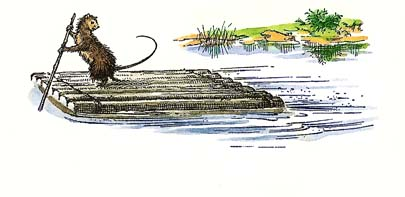
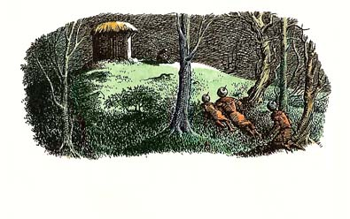
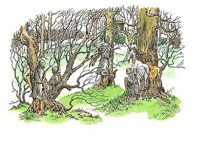

| [C・S・ルイス／瀬田貞二] ナルニア国物語7 | |
| C・S・ルイス／瀬田貞二 | |
| (2015) | |
|
ナルニア国物語７
最後の戦い
Ｃ．Ｓ．ルイス作／瀬田貞二訳
|
も く じ
はじめて「ナルニア国物語」を読むかたに
１ 大釜池のほとり
２ はやまった王
３ とくい絶頂の毛ザル
４ その夜の出来事
５ 王に助けの見まったしだい
６ 夜のあいだの一仕事
７ そむく者とつく者
８ ワシの知らせ
９ うまや丘の夜の集まり
10 うまやにはいる者はだれか？
11 急ぎ足で
12 うまやの入り口をくぐると
13 小人たち、がんとしてだまされまいとする
14 ナルニア、夜となる
15 さらに奥に、さらに高く
16 影の国にわかれをつげて
はじめて「ナルニア国ものがたり」を読むかたに
「ナルニア国ものがたり」は、その一冊一冊が、どれを読んでも、それだけで一つのまとまったおもしろい本になっているばかりでなく、全部の七冊を通してみると、これが全体でまた一つのまとまりのある大きな物語になっています。そして、その全体を通して、ナルニアという国が、この地上ではないどこかに、まず生まれ、かずかずの世代をかさねて、さまざまな王たちにおさめられたのにち、さいごの戦いをへて消えうせる、というありさまを知ることができます。その全体の歴史を、年代表にしていえば、つぎのとおりです。
ナルニア生まれる──偉大なライオンのアスランがナルニアをつくります。ナルニアのつくられるありさまは、人間界からきたポリーとディゴリーが見とどけます。ただ、この子たちが人間界からくる途中で、わざわいのたね（妖魔・悪）を、いっしょにこの国に持ちこんでしまい、そのつぐないのために、遠いリンゴをとりにいく冒険がともないます。（『魔術師のおい』）
数世紀のち──白い魔女（なぜこれがきたかは前段でわかります）が、ナルニアを永遠の冬にします。人間界から、ピーターたち四人の子がきて、アスランとともに、魔女の力をくだきます。（『ライオンと魔女』）
ピーター王のころ──ナルニア全盛時代のある事件。ものをいう馬ブレーとその友のシャスタが、カロルーメンという戦ずきの国から、ひろい砂漠をよこぎってナルニアに急をしらせます。（『馬と少年』）
数百年のち──テルマール人たちがナルニアをおさめたころ、ピーターたちの助けをかりてカスピアン王子がナルニアをよみがえらせます（『カスピアン王子のつのぶえ』）
カスピアン王三年──のちに航海王とよばれるカスピアンが、ゆくえ不明になった七卿をさがしに「朝びらき丸」で東の海に大探検をします。これに、人間界からエドマンドとルーシィ、ほかにいとこのユースチスが加わります。（『朝びらき丸東の海へ』）
カスピアン王七〇年ごろ──人間界のユースチスと学校ぎらいの少女ジルが、沼人とともに北方の山地をこえて、遠く巨人の国を通って地下にとらわれた王子を助けにいきます。（『銀のいす』）
チリアン王のすえごろ──ナルニアがくずれさります。人間界からは、ポリーとディゴリー、ピーターとエドマンドとルーシィ、ユースチスとジルが加わります。おそるべきタシの神もあらわれ、カロルーメン軍とナルニアが戦います（『さいごの戦い』）
各年代のうしろに、カッコで記してあるのは、「ナルニア国ものがたり」の各篇の名です。そして、各篇は、それぞれの時代の一こまをまとまった物語として記していますが、こうしてならべてみますと、全体が、ナルニアのはじめからおわりまでを結ぶ大きな川のような、長篇の空想物語、大ファンタジーになっていることがよくわかります。
１ 大釜池のほとり
ナルニア国の終わりごろ、街灯あと野の西のかたはるか遠く、大滝の落ちるあたりに、一ぴきの大毛ザルがいました。サルはたいへんな年よりで、はじめいつごろこの地方にきて住んだかを知る者とてありません。ずるがしこいことこの上なく、みにくさもかぎりなく、これ以上のしわだらけはあるまいと思われる、しわしわの毛ザルでした。一本の大木のまたに、木で小さな家をつくり、木の葉で屋根をふいて住んでいました。毛ザルの名は、ヨコシマといいました。この地方の森には、ものいうけのたちも人も小人も、そのほかのナルニア人もたいへん少なく、ヨコシマはただ、トマドイという一頭のロバを友とし、となりづきあいをしていました。サルもロバも、たがいに友だちとはいっているものの、いろいろな点からおして、トマドイは、ヨコシマの友だちというよりは、召使いといったほうがいいと、だれでも思うことでしょう。ロバは、なにもかもしてやりました。いっしょに川へいきますと、ヨコシマが大きな皮袋に水をどっさりつめて、トマドイがそれを運んで帰るのです。川をずっとくだっていった遠い町から、なにかほしいものを買ってきたいという時に、からの荷かごを背にのせて、それをいっぱいにして重くなったものをもち帰るのは、トマドイです。そしてトマドイが買ってきた食べ物の、いちばんおいしいところを食べるのは、ヨコシマです。それは、ヨコシマが、「なあ、トマドイ、おれはおまえみたいに草やアザミがくえないだろ。だからほかのものをくってうめあわせをつけりゃ、五分五分さ。」というわけです。またトマドイのほうもいつも、「そうだとも、ヨコシマ。もちろんさ、わかってるよ。」というばかりで、ぶつぶついったことがありません。なにしろヨコシマのほうがずっとじぶんよりりこうだということを知っていましたし、じぶんのような者につきあってくれるのは、ヨコシマがやさしいおかげだと、トマドイが考えていたからなのです。もしトマドイが、かりにもなにか反対しようものなら、ヨコシマが、きっとこういうのです。「おい、トマドイ、おれのほうがおまえよりも、よっぽどよく、どうすればいいかころえてる。おまえは、じぶんが頭がたりないことを知ってるだろ。」するとトマドイがきっとこう答えるのです。「そうとも、ヨコシマ。あんたのいうとおりさ。あたしは、頭がないよ。」それからトマドイは、ため息をついて、ヨコシマのいうことをなんでもするのです。
春まだ浅いある日の朝、この仲間が、大釜池の水ぎわを歩いていました。大釜池というのはナルニアの西ざかいの崖の真下にある大きな池です。大滝がたえず百雷のひびきをたてて、この池にそそぎ、池のはずれから、ナルニアの大川が流れだしています。滝のせいで、池の水はまるで煮えたったようにいつも、おどり、あわだち、ぐるぐるうずをまいています。それで、この池に大釜という名がついたのです。それも春さきは、ナルニアのほうからあおぐと、はるか西にあたる高山地帯で雪がとけて、そこから流れでる川があふれ、大滝は水かさをましていますから、いちばんすさまじい時です。サルとロバが大釜池をながめているうちに、ヨコシマがふと、その黒ずんだしわしわの指をのばして、池のなかを指さし、こういいました。
「見ろ！ ありゃ、なんだ？」
「なにが、なにかね？」とトマドイ。
「いましがた、滝から落ちた、あの黄色いものだ。ほら、あそこにまた浮かんだ。あれがなんだか、見きわめなくちゃいけないぞ。」
「いけないかね？」
「もちろん、いけない。なにか役に立つものかもしれないぞ。いっちょう、池にとびこんで、あれをつかまえてきてくれ。そうりゃ、おれたち、なんだかはっきりわからあ」
「池のなかへとびこむって？」トマドイがその長い耳をひくひくさせながらいいました。
「そうさ。おまえがやらないで、あれがおれたちの手にはいるか？」と毛ザル。
「でも、でもさ。」とトマドイ。「あんたがはいったほうが、うまくいくんじゃないかな？だってさ、ほら、あれがなんだか知りたがってるのは、あんたで、あたしはどうでもいいんだもの。それにほら、あんたには両手があるよ。ものをつかえまることになれば、あんたは、人間や小人みたいにうまいよ。あたしには、ひづめがあるだけだよ。」
「おいおい、トマドイ。」とヨコシマ。「おまえがそんなことをいうとは、思わなかったな。まったくのところ、おまえの口からそんなことをきくとは思わなかったぜ。」
「おや、あたしが、まずいことをいったかしら？」ロバは、ずっとひかえめな声音になっていいました。ロバには、ヨコシマがえらく腹をたてていることがわかったからです。「あたしのいったのは──」
「おれに、水のなかへはいれって、いうんだろ。」と毛ザル。「サルなんてものは、肺がどれほど弱いものか、またどんなに風邪をひきやすいものか、まるで知らないみたいな口ぶりだな。ああ、いいとも。おれは、水のなかへはいるぞ。こんな身をきるようなからっ風にさらされていてさえ、おれはもうぞくぞくしているんだ。でも、水のなかへはいるとも。きっと死んじまうさ。そしたら、おまえもなげくだろうさ。」こういうヨコシマの声は、わっと泣きすばかりにわなないていました。
「おねがいだから、いかないで。はいらないでくれよ。おねがいだよ。」と夢中でいななくようにして、トマドイはいいました。「あたしは、そんなふうのことをいったんじゃないよ、ヨコシマ。ほんとだよ。あたしがどんなに間抜けだか、ひとつ時にはひとつことしか考えられないたちだか、知ってるだろ。あたしは、あんたの肺が弱いことを忘れちゃってたよ。もちろん、あたしが池にはいるよ。あんたは、じぶんでいこうなんて、思っちゃいけないよ。はいらないと約束してくれないか、ヨコシマ。」
そこでヨコシマが約束しました。トマドイは、池にはいれる場所をさがして、大釜池の岩ぶちをたどり、四つのひづめでトコトコと歩いていました。寒さはべつとしても、こんなにたぎり、わきたつはげしい水のなかにはいるのは、とんでもないことです。トマドイは、いよいよはいろうとかくごをきめるまでに、まる一分間はじっと立ちどまって、身をふるわせないわけにいきませんでした。けれどもそのうちにヨコシマが、うしろから大声をあびせました。
「やっぱり、おれがやったほうがいいんだろ、トマドイ。」それをきくとロバは、「いや、だめだ、だめだ。約束したぞ。いま、あたしがはいるよ。」といって、池にはいりました。
大きなあわのかたまりが、トマドイの顔にかかり、水がいっぱい口にはいって、目が見えなくなりました。それから四、五秒は水中に沈み、ふたたび浮きあがった時は、池の別のところに出ていました。そこでうずにとらえられ、ぐるぐるふりまわされて、だんだん早くひきこまれたあげく、大滝の真下にひかれ、その水勢にあって、深みへもぐらされ、これ以上息がつづかないと思ったころ、やっとロバは浮きあがりました。こうして水面に出て、ようやくつかまえようと思うものの近くいきつきますと、こんどはそれがロバからすいと遠ざかっていって、とうとう滝の下にまきこまれ、水底に沈められました。それがふたたび浮きあがったところは、いままでよりもずっと遠くというしまつ。けれどもとうとうトマドイは、死ぬほどくたびれきって、全身にきずをおい、冷たさでこごえながら、どうやら歯でそのものをくわえることができました。そこでロバは、そのものを顔の前にして、前足をそのなかにからませながら運んだのですが、なにしろそれは、炉ばたの敷物ほどの大きさでしたし、ひどく重い上に、冷たくて、ぬらぬらしていたのです。
トマドイは、そのものをヨコシマの前に投げおろし、しずくをたらしたり、身をふるわせたり、息をととのえようとしたりして、そのまま立ちつくしました。けれども毛ザルはそんなロバを見ようともせず、どんなぐあいだとたずねもしません。ただせわしげにそのもののまわりをぐるぐる歩いて、それをひろげたり、ぱたぱたたたいたり、においをかいだりするばかりです。そのうちに、あるいやしい光がその目にあらわれ、ヨコシマはこういいました。
「これは、ライオンの皮だ。」
「イー、オーオー、ええ、これが？」とトマドイが、あえぎながらいいました。
「ところで、はてな？......はてな？......はてな？」とヨコシマはひとりごとをいいました。えらく真剣に考えこんでいるのです。
「かわいそうに、だれがライオンを殺したんだろうね？」と、しばらくしてトマドイがいいました。「これは、うめてやったほうがいいや。お葬式をしなけりゃいけないな。」
「おいおい、これは、ものいうライオンじゃないぜ。」とヨコシマ。「葬式だのなんのと心配してやる必要はないさ。大滝のむこう、西方の高山地帯にゃ、ものいうけものは一ぴきもいないんだ。この皮は、口をきかない、野育ちのライオンのものにちがいない。」
ついでながら、それはそのとおりなのでした。ある人間の狩人が、もう数か月も前に、西の山地でライオンを殺して、その皮をはいだのです。でもそのことは、この物語になんの関係もありません。
「それでもさ、ヨコシマ。」とトマドイ。「その皮が、口のきけないただのライオンのものだとしたってさ、ちゃんとほうむってやるべきじゃないのかい？あのね、ライオンてものは、なんだか──その、なんだか、えらいところがあるじゃないかな。あのひとのこと、考えたってさ。わかるだろ？」
「そんなつまらねえことをやたらに考えてるんじゃないぞ、トマドイ。」とヨコシマ。「なぜって、考えることは、おまえのがらじゃないからな。それよりひとつこの皮で、おまえにすてきな暖かい外套をこしらえてやろう。」
「ああ、そんなもの、いいと思わないよ。」とロバ。「それじゃなんだか──きっと、ほかのけものたちが見て、思うよ──つまり、あたしの気もちが──」
「なんのことをしゃべってるんだ？」とヨコシマが、よく毛ザルのやるように、からだのとんでもないところをかきながらいいました。
「あたしみたいなロバが、ライオンの皮を着こんだら、偉大なライオンのアスランご自身にたいして、失礼になるように思うよ。」
「たのむから、いまはつべこべいわないでくれ。」とヨコシマ。「いったいおまえみたいなロバが、そんなことをどれだけ知ってるんだ？なあ、トマドイ、おまえは、考えるのが苦手だってこと、わかってるだろ？なら、どうしておれに、おまえのかわりに考えさせないんだい？どうしておれがおまえにいつもしているように、おまえはおれにしてくれないのかね？おれは、じぶんがなんでもかでもできるものだとは、思っていないぜ。あることについちゃ、おまえのほうが、おれよりずっとましだと思う。だからこそ、池のなかへおまえをはいらせたのよ。それは、おれよりうまくやることがわかってたからだ。だけど、こんどはおれのほうにやれて、おまえにできないこととなったら、どうしておれにやらせないんだ？おれがなにかやっちゃ、いけないのか？五分五分でやろうぜ。かわりばんこに、な。」
「ああ、そんなふうにあんたが考えるなら、もちろん、いいとも。」とトマドイ。
「時にな、」とヨコシマ。「おまえ、ひとっ走り、木びき瀬町までくだっていって、ミカンかバナナがあるかどうか、見てきてくれると、つごうがいいんだがな。」
「でも、あたしは、ほんとうにくたくたなんだよ、ヨコシマ。」とトマドイがいいわけをしました。
「そうだろう。だがおまえは、ずぶぬれで、えらくこごえてるじゃないか。」と毛ザル。「なにか暖まるものがほしいところだぜ。ひとっ走りすると、ちょうどいいんだ。その上、きょうは木びき瀬町に、市がたつぞ。」そんなわけでもちろんトマドイは、いってくるといいました。
ひとりになるやいなや、ヨコシマはぶらぶらと、時には二本足で、時には四本の手足をつかって歩いていき、じぶんのいえのある木のところにもどりました。それからヨコシマは、たえずしゃべったり、歯をむきだして笑ったりしながら、枝から枝へとびうつって、じぶんの小さな家にはいりました。家のなかで糸と針と大きなはさみを見つけました。なにしろりこうな毛ザルで、小人に縫いかたを教わったことがありました。ヨコシマは、ひと巻きの糸玉を（とても太い糸で、糸というよりもひものようでした）口にいれましたので、大きなあめ玉をしゃぶっているように、頬ぶくろをふくらませました。また、針をくちびるのあいだにくわえ、はさみを左手にもちました。それから木をおりて、ライオンの皮のほうにとんできました。そしてその上にうずくまり、仕事にとりかかりました。
ヨコシマは、ライオン皮の胴体がトマドイには長すぎるし、首が短すぎることを、すぐに見てとりました。そこで、胴体の部分をかなり切りとり、それをトマドイの長い首すじにあわせて長い首カラーをこしらえるのに使いました。つぎに頭のところを切りはなして、頭と肩のあいだに、首カラーをつぎたして縫いこみました。ヨコシマは、皮の両はしに糸をつけておいて、トマドイの下腹で結びつけることにしました。時たま一羽の鳥でも頭の上を飛ぶことがあると、そのたびにヨコシマは仕事をやめて、気がかりなようすで上を見あげました。じぶんのしていることを、だれにも見られたくなかったのです。けれども、ヨコシマの見かけた鳥はいずれも、ものいう鳥ではなかったので、問題にはなりませんでした。
午後おそくなって、トマドイが帰ってきました。トマドイは、よくロバがやるように、早駆けでない、ぽくぽく歩きでがんばって歩きどおしてきたのでした。
「ミカンはなかったよ。」トマドイがいいました。「バナナもなかったよ。すっかりくたびれちゃった。」ロバは、横になりました。
「おい、こっちへきて、できたてのおまえのすてきなライオン外套を着てみてくれ。」とヨコシマ。
「そんな古い皮なんか、どうでもいいよ。」とトマドイ。「とにかく、あしたになったら着てみよう。きょうはすっかりくたびれた。」
「おまえは、ずいぶん不親切だなあ、トマドイ。」とヨコシマ。「おまえがくたびれたっていうんなら、おれはどうしたと思うんだ？おまえが谷のほうへ気もちのいいお散歩をなさっているあいだ、日がな一日、おれは、おまえの外套づくりに一生けんめいだったんだ。この手はあんまりくたびれて、はさみもにぎれなくなったぜ。それだのに、おまえは、ありがとうもいわない──外套のほうを見もしない──まるで気にもとめないんだ──おまけに、ああ──」
「ヨコシマさんや、」トマドイは、ぱっとおきあがりました。「ごめんごめん。悪いことしたなあ。もちろんあたしは、それが着てみたいよ。着たらすてきに見えるだろうなあ。さあ、すぐに着せておくれ。おねがいだ。」
「よし、それじゃ、じっと立っていな。」と毛ザルがいいました。毛皮は重くて毛ザルにはもちあげられないほどでしたが、ひっぱったりおしたり、息をきらしてはあはあいったりしたすえに、とうとうロバの上にかぶせました。ヨコシマは、毛皮のはじをトマドイの腹の下で結びあわせ、足はそれぞれトマドイの足に結びつけ、尾もトマドイのしっぽをおさめてしばりました。でもトマドイの灰色の鼻と顔の大部分が、開いたライオンの口のなかからのぞいていました。これでは、ほんもののライオンを見た者なら、ほんのちょっとのあいだでも、ライオンだとは思いはしますまい。けれども、ライオンを見たことのない者が、あまり近くへこず、あかりもはっきりしないままで、ライオンの皮を着たトマドイを見たら、ライオンと見まちがえるかもしれせん。もっとも、トマドイがいななき声をだしたり、ひづめで音をたてたりしなければの話です。
「やあ、すてき、すてき。」と毛ザル「いまのおまえを見りゃ、だれだって、おまえのことを、偉大なライオンのアスランそのひとだと思うぜ。」
「そりゃ、とんでもないよ。」とトマドイ。
「そんなことないさ。」とヨコシマ。「だれだって、おまえのいいつけることはなんだってきいてくれるぜ。」
「でも、よその者たちに、いいつけたくなんかないよ。」
「でも、おれたちはいいことができるんだぜ！」とヨコシマ。「おれが、おまえに知恵をつけてやろうじゃないか。ちゃんとした命令が出せるように、おれが命令を考えてやるぜ。そうすりゃ、だれだって、王さまだって、おれたちのいうことには、したがわなくちゃなるめえよ。おれたちは、ナルニアがちゃんとなるようにさせられるんだぜ。」
「でも、いまだって、ちゃんとなっているんじゃないのかい？」とトマドイ。
「へ！ ちゃんとなってるって？──ミカンもバナナもないところに、か？」
「だけど、ここは。」とトマドイ。「じっさいのところ、あまりひとがいないよ。そんなものをほしがるひとだって──あんたのほかにだれもいないよ。」
「砂糖ってものだって、あるぞ。」とヨコシマ。
「うん、そうだね。」とロバ。「もっと砂糖がありゃ、そりゃいいだろうなあ。」
「よし、それじゃ、もうきまった。」と毛ザル。「おまえはアスランのまねをするんだ。何をいうかは、おれが教えてやる。」
「いや、いや、いや。」とトマドイ。「そんなとんでもないこと、いわないでおくれよ。それはまちがってるよ、ヨコシマ。あたしはあんまりりこうじゃないけど、それくらいのことはわかるよ。もしほんもののアスランがやってきたら、あたしたちはどうなる？」
「あのひとは、とてもよろこぶと思うぜ。」とヨコシマ。「きっとあのひとが、わざわざライオンの皮をおれたちにおくりつけたのさ。おれたちが、ナルニアをちゃんとさせるようにさ。とにかく、あのひとは、出てきやしないよ。当節はあらわれないんだ。」
こういった時、頭上でいきなり、大かみなりがとどろき、地面が小さな地震によってゆれました。毛ザルとロバはともにからだのバランスをくずして、うつぶせにころびました。
「そらみろよ。」ようやく息がつけるようになるとすぐに、トマドイがあえぎながらいいました。「おつげだよ。おさとしだよ。あたしたちは、おそろしく悪いことをしてたんだ。このいまいましい皮を、すぐとってくれ。」
「いやちがう。」と毛ザルは（頭をすばやく働かして）いいました。「ぎゃくのおつげなんだ。おれはちょうど、おまえがいうようなほんもののアスランがいて、これをやれというつもりなら、きっとおれたちに、かみなりと地震をみせてくれるぞと、いおうとしたところだった。そして口のさきまで出かかっていたんだが、ことばに出していうまえに、あのおつげがあったんだ。さあ、やるんだぞ、トマドイ。そしておねがいだから、もうごたごたいいあわないことにしようぜ。おまえには、こういうことはわからないんだからな。ロバにおつげがわかるかね？」
２ はやまった王
それから三週間ほどたったある日、ナルニア王家さいごの王が、じぶんの小さな狩小屋のそばに生えている大きなカシワの木の下にすわっていました。ここには、うらうらと晴れた春の十日間ほど、よく泊まりにやってきました。街灯あと野の東はずれからあまり遠くないところで、二つの川のおちあいをいくらかさかのぼったところに、のきの低い草ぶきの小屋を建てたのです。王は、首都ケア・パラベルでの国事やはなやかな行事をはなれて、ここで万事あっさりと気楽にくらすことがすきでした。その名は、チリアン王。二十歳から二十五歳にかけての年かっこうで、肩幅もがっしりとひろく、手足の筋肉もはがねのようですが、あごひげはまだまばらです。両の目は青く、その顔だちは、正直でこわいもの知らずです。
その春のある朝、王につきしたがう者は、いちばんの親友である一角獣のたから石しかいませんでした。このふたりは、たがいに兄弟のように愛しあい、たびたびの戦いにも、たがいのいのちを助けあってきた仲です。いま高貴なけものは、王のいすのそばに立って、首を深くまげ、じぶんのクリームのように白いわき腹で、まっ青なひたいの角をみがいているところでした。
「きょうは、仕事にせよ遊びにせよ、なにもしようという気にならないよ、たから石よ。」と王がいいました。「こんなすばらしい知らせがあっては、ほかになにも考えることができない。きょうのうちに、もっとくわしくきけるだろうか？」
「これは、いまばかりでなく、父たちの時代にも、祖父たちの時代にも、きいたことのない、世にもふしぎなたよりでございます、陛下。」とたから石がいいました。「ただし、この知らせが、こまとのことでありますならば、ですが......」
「まことでないはずがあろうか？」と王。「はじめに鳥たちが、われらの上をまいながら、アスランきたる、アスランふたたびナルニアにこられたり、といったのは、一週間以上まえだ。そのあとは、リスたちだった。リスたちは、アスランに会いはしなかった。だが森におられることはたしかだといっていた。つぎに、雄ジカがきた。この目でしかとあの方を街灯あと野で見たといった。月あかりで遠くからではあったが、そのつぎは、ひげをはやした色の黒い人間、カロルーメンの商人であった。カロルーメン人は、もともとわたしたちとちがって、アスランに心をとめてはいないが、その商人は、うたがいなき事実として語った。また、ゆうべは、アナグマがきて、かれもまたアスランを見たという。」
「そのとおりでございます、陛下。」と、たから石が答えました。「わたしは、その話を全部信じます。そうでないように見えますなら、わたしのよろこびが大きいあまり、信じかねているのでございましょう。まったくあまりすばらしくて、信じられないくらいで。」
「そうとも。」と王は、よろこびのおののきともみえる、深い吐息をつきました。「わが一生ののぞみをこえたものだ。」
「ほら、あれは？」とたから石が、首を一方にまげ、耳を前のほうに立てていました。
「なんだ？」と王がたずねました。
「ひづめの音でございます、陛下。」とたから石。「早駆の馬が一頭。大きなたくましい馬です。セントールのひとりにちがいありません。そら、あちらにまいりました。」
金髪、金のひげの大きなセントールが、そのひたいには人間の汗、栗毛の腹には馬の汗をかきながら、王のまえにかけつけ、ぴたりととまって、深くおじぎをしました。「陛下、ごきげんうるわしゅう。」とセントールは、牡牛のように低いひびきのある声であいさつしました。
「おーい、だれか！」と王は、肩ごしに狩小屋の入り口をふりかえって、「気高きセントールに、ブドウ酒一わんさしあげてくれ。ようこそ、星うらべ。ひと息いれたら、用件をきかせてもらおう。」
小屋のなかから、小姓が、変わったほりものをした木の大わんを運んできて、そのセントールに渡しました。セントールは、わんをかかげて、こういいました。
「まず、アスランとまことをたたえて飲み、つぎに陛下のおしあわせのためにいただきます。」
星うらべはひと息に（大の男六人分にふさわしい）なみなみとつがれたブドウ酒を飲みほして、からの大わんを小姓にかえしました。
「ところで、星うらべよ。」と王。「そののちのアスランの知らせを運んでくれたのか？」
星うらべは、少し顔をしかめ、たいへん重々しい顔つきをしました。
「陛下、ごぞんしのとおり、わたくしは長生きをし、星々をしらべてまいりました。つまりわたくしどもセントールは、陛下がた人間よりも長生きですし、あなたがた一角獣にくらべてもまだまだ長生きでございます。そのわたくしの一生のうちで、ことしになってから夜ごとの空に書かれたほど、恐ろしいことを見たことがありません。星々は、アスランのくることも、平和あるいはよろこびのおとずれることも、何もつげ知らせてはおりません。わたくしの術をもって知りましたことは、五百年のあいだに、かくも不吉な星々のより集まるさまはたえてなかったということでございます。そこですでに、何か大きなわざわいがナルニアにふりかかると、陛下のもとにきて警告申しあげるつもりになっておりました。ところが、きのうの夜、アスランがナルニアにやってこられたといううわさが、わたくしの耳にとどいたのでございます。陛下、このうわさを信じなさいますな。そんなことがあるはずは、ございません。星々は、うそを申しませんが、人間もけものたちも、うそを申します。もしまことにアスランがナルニアにこられるものなら、大空がそれを前もって知らせてくれるでしょう。また、まことにこられたならば、いともやさしき星々はこぞって、アスランの名誉をたたえてより集うものでございます。これはまっ赤なうそでございますぞ。」
「うそだと！」王ははげしくいいました。「ナルニアの、いやあらゆる世界のいかなる生きものが、このようなことがらにうそをつく気がいたそうか？」こういって王は、みずから知らないうちに、刀のつかに手をかけていました。
「それはぞんじません、陛下。」とセントール「ただ、わたくしのぞんじますことは、地上にはうそつきがいるということでございます。星々のあいだに、うそいつわりはありません。」
「星々の知らせるところがちがったものであっても、はたしてアスランはお見えにならないでしょうか。」とたから石がいいました。「アスランは、星々のどれいではなくて、その作り手です。むかしからの物語にも、アスランは、主人もちのライオンにあらずというではありませんか。」
「よくいった。よくぞ申したな、たから石よ。」と王が声をあげました。「それそれ、そのことばよ。主人もちにあらずとな。かずかずの物語に出てくるぞ。」
星うらべが片手をあげ、からだを前によせて、王になにやら真剣に申しあげようとした時、ちょうど、にわかに近づいてきた泣き叫ぶ声にきき耳をたてて、その場の者たちは顔をむけました。ここから西には森が深く、まだこちらにくる者のすがたが見えません。けれども、まもなくそのことばをききとることができました。
「おお、おお、おお！」とその声はひびきました。「きょうだいたちよ、かわいそうに。聖なる木々よ、かわいそうに。森はあれはてほうだいよ。斧がやたらにふるわれる。わたしたちはみな、切りたおされる。すぐれた木々が、たおれる、たおれる、たおれる。」
さいごの「たおれる」ということばとともに、声の主がたちあらわれました。女のひとでありながら、セントールとならぶほど背の高いひとで、どこか木のようなところがありました。木の精ドリアードを見たことのないみなさんに口でお話するのはむずかしいのですが、ひと目みれば見まちがえないのです。色も声も髪もどこか人間とちがいますから。チリアン王と二頭の者たちは、ただちにその女のひとがブナの木の精だとわかりました。
「おさばきを、陛下！」とその女のひとは、泣き叫びました。「助けにきてください。陛下の国人たちを守ってください。あのひとたちは、街灯あと野のわたしたちを切りたおしています。わたしのきょうだいたちにあたる四十のすぐれた木々たちが、もう地面に横たわってしまいました。」
「なんですと！ 街灯あと野の木を切りたおしていると？ものいう木々を殺していると？」と王は、大声をあげ、ぱっと立ちあがって剣を抜きました。「どうしてそんなことができます？どんなやつがやるのです？よし、アスランのたてがみにかけて──」
「あーあああ。」とドリアードは息をとぎらせて、いたみにおそわれたようにからだをふるわせ、くりかえし斧できりつけられているように、いくたびもがくんとおののきました。それからだしぬけに、両足をきりたおされたように、ばったり横にたおれました。ほんのしばらくのあいだ、みんなは、草の上に死んでたおれたそのすがたを目にしましたが、やがて、そのすがたは、消えうせてしまいました。一同は、どんなことがおこったかを知りました。あの女の木は、どこかとおくで、切りたおされてしまったのです。
しばらくのあいだ、悲しみと怒りのあまり、王はものをいうことができませんでした。けれどもやがて、こういいました。
「いこう、友よ。いまからできるかぎり急いで、川をさかのぼっていき、このようなことをしでかした悪者どもを見つけださねばならぬ。そやつらをひとりとして生かしてはおけぬ。」
「陛下、よろこんで、おともいたします。」とたから石。
けれども星うらべは、いさめました。「陛下、もっともなお怒りとはぞんじますが、よくよくご用心なさいませ。おかしな出来事がつぎつぎにおこっております。もし武器をもった反徒たちが谷を攻めのぼってまいりましたならば、われら三人では、むかえうつに少なすぎます。しばらくお待ちいただけますならば──」
「もはや、一秒の十分の一も待てぬぞ。」と王。「しかし、たから石とわたしが進むあいだに、そなたはできるかぎりの早足で、ケア・パラベルにもどってもらいたい。わたしのことばをつたえてもらう証拠として、この指輪を渡しておく。武装した乗馬にすぐれたつわ者に十人、ものいう犬二十ぴき、小人十人（いずれも弓矢の名手をそろえよ）、ヒョウ一頭ほど、巨人の石足どんごろうを、こちらにつかわせ。できるかぎりすみやかに、われらのあとを追ってまいるように。」
「おおせかしこまりました。陛下。」と星うらべがいいました。そしてたちまち身をひるがえして、東のほうへ谷をくだって早駆けしていってしまいました。
王は、大またでどしどし歩きながら、時にひとりごとを口のなかでいい、時に両のこぶしをにぎりしめました。たから石は、なにもいわずにそのあとにしたがいました。こうしてこのふたりのあいだには物音がなく、ただ一角獣の首にかけたゆたかな黄金の首輪のかすかにふれてひびく音と、二つの足、四本のひづめのたてる足音ばかりでした。
まもなく川につきますと、むきをかえて上流へ、川岸の草の道を進みました。左手に川、右手に森を見ていきますと、しばらくして、地面がずっと歩きにくくなって、川のそばまで森がせまっている場所に出ました。わずかに残っている道らしいものも、こんどは南がわの川岸に渡っているので、ふたりはそこへむかって川を歩み渡らなければなりませんでした。川の水はチリアンのわきの下までありましたが、たから石が（こちらは四本ですから、ずっと安定しています）、王の右がわにつきそって、川の流れのはげしさから王をまもり、チリアンは、そのたくましい腕を一角獣の強い首のまわりにかけて、ともにぶじに渡りこしました。王はいまだにおこっていて、川水の冷たさもかわないくらいでした。けれども、いうまでもなく王は、むこう岸につくと、さっそくただ一か所だけかわいている場所、そのマントの肩で注意ぶかく剣の水気をぬぐいました。
ふたりはこんどは、右手に川を見ながら西へむかいました。まっすぐ前方に街灯あと野がありました。そして一キロいったかいないかというところ、ふたりはいっしょに足をとめて、同時に口をききました。王は、「あれはなんだろう？」たから石は、「や、あそこに！」といったのです。
「いかだだ。」とチリアン王。
たしかに、いかだでした。六本のみごとな木の、枝々をいま刈りこみ、切り落としたばかりという丸太が、なわをかけてくくられていかだとなり、すいすいとすばやく川をくだっていくのです。いかだの前のほうには、川ネズミが、さおをあやつっていました。

「おーい、川ネズミよ！ 何してるんだ？」と王が叫びました。
「この材木を、カロルーメンのところへ売りに出すところでございます、陛下。」とネズミは、帽子をかぶっていれば、その帽子にさわるようなしぐさで、耳にさわりながら、そう答えました。
「カロルーメンだと！」チリアンは、かみなりのような声をあびせました。「何を申す？木々を切りたおせとは、だれの命令だ？」
川は春さきのこのごろが、流れをはげしくしていますから、いかだはとうに、王とたから石のところを通りすぎていました。けれども川ネズミは、ふりかえって、大声でこういいました。
「ライオンの命令でございます、陛下。アスランご自身のおっしゃることで。」それからまだなにかつけ加えていいましたが、それはもうきけませんでした。
王と一角獣とは、たがいに見つめあって、どんな戦場で味わったよりも、はげしくおびえた顔になりました。
「アスラン。」とうとう王が、低い低い声でいいました。「アスランとな。まことと申うせようか？あの方が、聖なる木々を切りたおし、ドリアードたちを殺すということが、ありえようか？」
「ドリアードたちが、おそろしく悪いことでもしませんかぎり──」と、たから石が口のなかでいいました。
「だが、それらをカロルーメンに売るとは！」と王。「そんなことができようか？」
「ぞんじません。」とみじめなようすで、たから石がいいました。「あのお方は、主人もちのライオンでございません。」
「よし。」と王はいいました。「とにかくさきに進んで、われらにかかる冒険をうけよう。」
「それは、わたしたちに残されたただ一つの方法でございます、陛下。」一角獣は、このさい、ふたりだけで進むのは、どれほどおろかなことかをわきまえませんでした。王もまたそうでした。ふたりとも、怒りにかられて、よく考えることができなかったのです。けれども、ここではやまったために、ついにとんだわざわいをまねいたのでした。
だしぬけに王は、その親友の首にしっかりととりすがって、頭をさげました。
「たから石よ。われらの前に、何があるか？ わたしの心には恐ろしい思いがわきあがる。ああ、きょうまでに死んでいたら、むしろしあわせだったろうに。」
「さようです。もはやこの世に生きすぎました。いま、あらんかぎりの悪いことが、おそいかかってまいりました。」ふたりはこうして、一、二分じっと立ちつくし、それから道をたどりました。
あまり長くいかないうちに、斧が木にあたるカーン、カーンというひびきがきこえてきましたが、道がゆくてに高まっていましたから、まだ見ることはできません。道の高みについた時、街灯あと野を見おろすことができました。そして王は、そこをひと目見て、顔がまっ青になりました。
太古の森のただなかをわけて──この森には、むかし金の木、銀の木がしげり、わたしたちの世界からいった子どもたちが、国守りの木を植えたことがあった場所なのです──一すじの幅ひろい道が切り開かれていました。大地になまなましい切りきずをつけたような、そのぞっとするような道には、切りたおした木々を川までひきずりおろした泥だらけのえぐれあとがいたるところについています。働いているひとたちは、ぞくぞくと群れをなし、むちのひびきやら、材木をひっぱる馬のあがきやら、いたるところでしています。まず王と一角獣をおどろかしたことは、これほどたくさん働いている者の半分は、ものいうけものたちでなく人間だという点でした。つぎに、はっとしたのはその人間が、ナルニアの金髪のひとたちでなくて、カロルーメンからきた、色のあさ黒い髭男たちだということでした。なにしろカロルーメンという国は、アーケン国をこえ、その南方の大砂漠をこえたところにある、らんぼうな大国なのです。もちろん、ナルニアのなかで、ひとりふたりのカロルーメン人にあわないというわけはなく、それも商人とか大使とかで、このころはナルニアとカロルーメンのあいだに平和が結ばれていたのです。けれどもチリアンには、これほどたくさんのカロルーメン人がここにいるわけがわかりませんでした。またどういうわけで、かれらがナルニアの森を切りたおしているのかもわかりませんでした。王は、剣をますますかたくにぎりしめ、マントを左腕のほうへまきあげました。そしてふたりは足早に、その男たちのところへおりていきました。
ふたりのカロルーメン人たちが、一頭の馬に大きい丸太をひっぱらせているところで、王がそこにいきついた時、丸太がひどいぬかるみにはまりこんでしまいました。
「さあやれ、このなまけ者め！ ひけ、のらくろブタめ！」とカロルーメン人はわめいて、むちをならしました。馬は全身全力でひっぱっていました。目は血走り、汗とあわだらけでした。
「動け、のうなしのちくしょうめ。」とカロルーメン人のひとりがどなりました。そしてどなりざまに、力まかせにむちをくれました。その時、まことに恐ろしいことがおこったのです。
それまでチリアンは、カロルーメン人が使っているその馬は、かれらの馬だとばかり思っていました。わたしたちの世界の馬と同じで、口のきけない、頭の働かない馬だと思っていたのです。口のきけない馬にしても、やたらに使いまわされているのを見ることは、王のにくむところでしたけれども、いうまでもなく王にすれば、木々を殺すことのほうがもっと気にかかっていました。まさか、ナルニアの自由なものいう馬にひきづなをひかせ、ましてやむちをくれる気になる者があろうとは、ちらりとも思いうかべることがありませんでした。けれども、そのやばんなむちうちが加えられた時、馬は後足で棒立ちとなり、悲鳴に似た口をききました。
「このおろかな暴君め！ わたしがこれほどつとめているのが、わからないのか？」
チリアンがこの馬はわがナルニアのものだと知った時、じぶんにもまた一角獣にも、あまりはげしいいきどおりの念がおそいかかったために、ふたりともなにをしているのか、じぶんながらわかりませんでした。が、つぎの瞬間、カロルーメン人たちは、ふたりとも死んでその場にたおれていました。ひとりは、チリアンの剣で首をうち落とされ、もうひとりは、たから石の角で胸をつらぬかれていました。
３ とくい絶頂の毛ザル
「馬どの、馬どの。」チリアンはあわただしく馬につけたひき皮を切り落として、いいました。「どうしてこんなよそ国の者どもが、あんたをどれいにしたのか？ナルニアは、征服されたのか？あちらで戦争があったのか？」
「いえ、ちがいます、陛下。」と馬は、荒い息をつきました。「アスランがここにおられるのです。すべてそのご命令です。あの方が命じられましたのは──」
「危険にご注意を、陛下。」と、たから石がいいました。チリアンは顔をあげて、カロルーメン人たちが（それにものいうけものたちもいくらかまじって）、あらゆる方向からこちらへかけつけてくるのを見ました。ふたりの死人は、叫び声をあげずにたおれたので、ほかのひとたちが事件に気がつくまでに、ほんのしばらくのあいだがありました。けれども、いまはみな、わかりました。大部分の者が、抜き身の三日月刀をさげていました。
「早く。わたしの背中に。」とたから石。
王は、親友の上にひらりとまたがり、一角獣はむきをかえて、走りさりました。そして敵たちのすがたが見えなくなるとすぐに、二度三度と道をかえて、流れを渡り、歩みをゆるめずに、「どちらへまいりますか？陛下、ケア・パラベルへですか？」と叫びました。
「とまってくれ、友よ。」とチリアン「おろしておくれ。」王は、一角獣の背からすべりおりて、友にむかいました。
「たから石よ。わたしたちは、恐ろしいことをしでかしてしまった。」
「ひどく腹がたちましたから。」
「とはいえ、知らずにいるやつらにとびかかり──やつらのなすことをとめだてしようともせず──武器をもたずにおったのに──くっ、たまらぬぞ！われらは、ともに人殺しだ。たから石。わたしの名誉は、とこしなえに地に落ちた。」
たから石は、頭をさげていました。こちらもまた、恥いっていたのです。
「それにあの時、」と王。「あの馬は、アスランの命令だといった。ネズミも、同じことを申した。そろいもそろって、アスランがここにおられるという。それがまことなら、どうしたものか？」
「けれども陛下、あんな恐ろしいことを、アスランが命ずるはずがありましょうか？」
「あの方は、主人もちのライオンではない。」とチリアン。「あの方が何をなさるおつもりか、どうしてわれらに知ることができよう？しかもわれらは、人殺しだ。たから石よ、わたしは、ひきかえす。剣をすてて、カロルーメン人たちの手にこの身をゆだね、アスランのおん前につれていくように、たのもう。わたしの身をあの方にさばいていもらおう。」
「そうなれば、みずから死にむかわれます。」とたから石。
「アスランがわたしに死をたもうなら、異存があると思うか？」と王。「そんなことはなんでもない。まったくなんでもない。アスランがこられても、われらの信じまた待ちのぞむアスランのようでないといって、恐ろしい不安におののくよりは、死んだほうがよほどましではないか。ある日、日がのぼってみれば、黒い太陽であったようなものだ。」
「または、水を求めて飲んでみれば、かわきの水であったようなものでございましょう。陛下のおっしゃることは、道理です。これこそ、万事万端の終わりでございます。では、わが身をひきわたしにまいりましょう。」
「いや、ふたりしていく必要はない。」
「わたしたち、おたがいにかくもむつびあっておりましたからには、どうかわたしもごいっしょにいかせてください。」と一角獣はいいました。「もし陛下がなくなられ、アスランがアスランでない時は、なんのいのちを生きながらえる必要がありましょう？」
ふたりは、むきをかえて、もとの道をもどりつつ、苦い涙をそそぎました。
ふたりが木を切りたおしている場所につくやいなや、カロルーメン人たちは、いっせいに叫び声をあげて、てんでに武器をもってふたりのほうへおしよせました。しかし王は、剣のつかをむこうにむけ、ひとびとにさしだして、こういいました。
「わたしは、ナルニアの王だが、いま名誉をけがした騎士として、アスランのさばきに身をゆだねるものである。アスランのみもとにつれてゆけ。」
「わたしも、同じだ。」と、たから石がいいました。
すると、あさ黒い男たちは、十重二十重にふたりをかこみました。ニンニクやタマネギくさい息をさせ、土色の顔に白目ばかりきみ悪く光らせて近よりますと、たから石の首にきついなわのはづなをつけ、王の剣をとりあげて、王をうしろ手にしばりあげました。ターバンのかわりに鉄かぶとをかぶり、指揮をとっているとみえるひとりのカロルーメン人が、チリアンの頭の小さな黄金の冠をもぎとり、急いでじぶんの服のどこかにしまいました。一同はふたりのとられ人たちをつれて丘にのぼり、大きな空地につれていきました。ここでとらわれ人の目にうつったのは、つぎのようなようすでした。
空地の中心は、丘のいちばん高いところになっていて、そこにうまやのような小さな小屋があり、草ぶき屋根がふいてあります。小屋の戸はしまっています。戸口の前の草の上に、一ぴきの毛ザルがすわっていました。アスランに会えるものとばかり思っていて、サルのことなど少しもきいていなかったチリアンとたから石は、それを見てひどくおどろきました。毛ザルというのはもちろんヨコシマでしたが、大釜池のほとりに住んでいた時よりも十倍もみにくく見えました。それはヨコシマがすっかり着かざっていたからです。まずじぶんにちっとも似あわない小人の着るまっ赤なジャケットを着ていました。うしろ足には宝石いりのつっかけぐつをはいていますが、ちゃんとおさまっていません。ごぞんじのように、サルのうしろ足は手のようなものだからです。頭には紙の冠のようなものをかぶっていました。すわっているそばにクルミを山づみにしておいて、しじゅう口でそのからをわっては、ぺっぺっとはき出していました。その上、たえずからだをかいて、たえず赤いジャケットをひっぱりあげていました。おびただしいものいうけものたちが、毛ザルにむかって立っていますが、そのどの顔を見ても、あわれなほどなやみ、とほうにくれていました。そのけものたちは、とらわれ人たちがだれかを目にした時、ことごとく苦しみの声、なげきの声をあげました。
「おお、アスランの口ききなるヨコシマ卿よ。」カロルーメンの隊長がいいました。「われら、めしゅうどめをめしつれてまいった。われらが手わざと勇気により、またタシ大神のご加護によって、われらはこれらふたりの命知らずの人殺しをいけどりにいたした。」
「おれに、その男の剣をよこせ。」と毛ザルはいいました。そこで男たちは王の剣をとって、剣つりバンドなどとともに、毛ザルに渡しました。するとサルは、それをじぶんの首のまわりにぶらさげました。そのために、ますますこっけいになりました。
「これらふたりの者については、のちほどしらべてやろう。」と毛ザルは、ふたりのとらわれ人たちのほうにからをはきかけながら、いいました。「ほかにまず、いくらかしておく仕事がある。ふたりは、待たしておけ。では、みなのもの、申すことをきけ。おれの第一にいいたいのは、クルミのことだ。リスのかしらは、どこへいった？」
「ここにひかえております、との。」と赤リスがいって、前へ進み出、びくびくもののおじぎをしました。
「おお、そのほうか？」と毛ザルは、いじわるな顔つきをしました。「ではよくきけよ。おれは──つまりアスランは──もっとクルミをほしがっておる。おまえがもってきたものでは、とてもじゅうぶんでない。おまえは、もっともってこなければならんぞ。おい、きいとるか？いままでの二倍だ。それをあしたの日が沈むころまでに、ここにもってくるんだ。そのなかに、悪いやつや小さいやつがまじっていてはならんぞ。」
あわてふためいたささやきが、ほかのリスたちのあいだにつたわりました。リスのかしらは勇気をふるいおこして、こういいました。
「おねがいでございます。アスランご自身が、そのことをわたしたちに話してくださいましょうか？もし、アスランにお会いすることがゆるされましたなら──」
「それはならぬ。」と毛ザル。「あの方は、ひょっとしたらかたじけなくも（もっとも、おまえたちには、身にすぎたことだが）今夜は数分間おでましになる。その時おまえたちは、ひと目おがめるぞ。しかし、あの方のまわりにどっと集まり、質問ぜめでうるさがらせてはならぬ。あの方に申しあげることがあれば、きっとおれを通すのだぞ。それとて、おれが、あの方をわずらわせるにたるものと考えた場合にかぎる。だがそれまでのあいだにも、おまえたちリスどもは、さっさと出かけて、クルミをさがすがよかろう。ではあしたの晩ごろまでに、しかとクルミをここへもってまいれ。さもないと、かならず罰をあたえるぞ。」
かわいそうにリスたちは、犬に追われるように、さっとちらばっていきました。この新しい命令は、リス仲間にとって、恐ろしい知らせでした。リスたちが冬に食べるために注意深くたくわえておいたクルミのたぐいは、いままでにおおかた食べられてしまいました。そして、残しておいた数少ないうちからすでにもう、わけてやっていい分をとおりこして、ずいぶん毛ザルにやっていたのです。
その時、けものたちの集まりのほかのところから、低い声が、こう話しだしました。たぶんきばの大きい、あら毛の多いイノシシの声でしょう。
「だがどうして、ちゃんとアスランに会い、話をかわすことができないんです？むかしナルニアによくおいでになった時には、だれでも、面とむかってものをいうことができたんだ。」
「そんないいつたえを信じるな。」と毛ザルがいいました。「それがほんとうだったとしても、時代が変わったんだ。アスランは、むかしおまえたちに、やさしくしすぎたとおっしゃっている。わかるな？だからもう、やたらにやさしくはなさらん。こんどは、おまえたちをちゃんとした者に、きたえあげようとなさっておる。あの方を、主人もちのライオンなどと考えたら、ひどいめにあうぞ。」
低いうめき声、泣き声が、けものたちの群れからもれました。そしてそれきり、しんとだまってしまい、そのためにますますやるせのないことになりました。
「それにまだ、知っておくべきことがあるぞ。」と毛ザル。「おまえたちのなかで、おれのことを毛ザルといっているのを耳にすることがある。ところが、おれはそうではない。人間だ。毛ザルのように見えるかもしれないが、ひどい年よりだからだ。何百歳という年よりだ。たいへんな年よりだからして、たいへんな知恵があるぞ。また、たいへんな知恵があるからして、アスランがただひとりおれにだけ、口をきくんだ。あの方は、なにもわざわざ、ばかなけものたちとやたらに口をきくまでもない。おまえたちにしろということは、おれにいう。それでおれが、おまえたちにそれを話してきかす。だからして、おまえたちは、おれのいうことをすなおにきき、大急ぎで仕事をするんだぞ。なにしろあの方は、ばかなことには、がまんがなされないたちだ。」
ふたたびしんとおしだまってしまい、ただアナグマの子が泣いて、そのおかあさんがあやしている声がするだけでした。
「まだ知らせはあるぞ。」と毛ザルは、口のなかにおいしいクルミをほうりこんで、いいつづけました。「馬どものなかで、こんなことをいっているのをきいたぞ。さっさとやって、できるかぎり早く材木運びを終わらそう。そうすればまた自由になれる、とな。いいか、馬たち、こんな考えをもっていたら、すぐさまそれを頭から追いだしてしまうんだぞ。また、馬ばかりではない。仕事のできる者は、これからさきも、仕事をどんどんさせられるはずだ。アスランは、カロルーメンの王──おれたちの友である色黒のカロルーメン人たちが呼んでいる名まえではティスロック王だが──その王と話をきめた。おまえたち馬どもも、牛どもも、ロバどもも、カロルーメンにつかわされて、一生かせぐことになるぞ。馬たちのやからが、よその国でやっているように、おしたりひいたり運んだり、な。それから、モグラども、ウサギども、小人どものような穴掘りどもは、ティスロックの鉱山にはいってする仕事がある。また──」
「いや、いや、ちがう。」とけものたちが、ほえました。「そんなことはありえない。アスランが、わたしたちをカロルーメンの王にどれいに売り渡すことは、けっしてない。」「なまいきいうな！静かにしろ！」と毛ザルがどなりつけました。「だれがどれいなんていった？おまえたちは、どれいにはならん。ちゃんとやとってもらうんだ──しかもとてもよい賃金でな。つまりな、おまえたちの賃金は、アスランの財産のほうにふりこまれて、アスランがそれを、みんなのために使うのだ。」こういってこの時、毛ザルはカロルーメン隊長のほうをちらりと見て、すばやく目くばせをしました。カロルーメン人はおじぎをして、もったいぶったカロルーメンふうのいいかたで、それに答えました。
「いやが上にもかしこき、アスランの口ききどのよ。ティスロック王は（御世とこしえに）このゆきとどいた計画には、卿とまったく同じ心ですぞ。」
「ほれな！ わかったな！」と毛ザル。「すっかり手はずはととのっておる。それもことごとくみんなのためだぞ。おれたちはみな、おまえたちのもうけた金で、ナルニアをくらしいい国にすることができるのだぞ。ミカンもバナナもふんだんにあるぞ。道も大きな都も、学校も役所も、むちも口輪も、くらもかごも犬小屋も牢屋も、ああ、なにもかもととのうぞ。」
「けれども、わたしどもは、そんなものはいりませんわい。」と年よりグマがいいました。
「わたしはどもは、自由がほしいのです。そして、アスランご自身からお話をききたいのですわい。」
「もう、つべこべいうな。」と毛ザル。「それにおれは、がまんができないからな。おれは、人間だ。おまえはただ、太った年よりのばかグマだ。なんで自由なんかわかるんだ？おまえのいう自由とは、すきなことがしたいということだろう？おまえは、まちがっておる。それは、ほんとうの自由じゃない。ほんとうの自由とは、おれがおまえにいいつけることをするところにあるぞ。」
「ふーん。」とクマがうなって、頭をかきました。じぶんにはわからないと思ったからでした。
「おねがいです。どうぞ。」とむくむくした小ヒツジのかん高い声がしました。小ヒツジがあまりおさないので、だれもみな、よく口をきく気になったものだとおどろきました。
「なんだ？ 早くしろ。」と毛ザル。
「おねがいします。」と小ヒツジはいいました。「ぼくにはわかりません。ぼくたち、カロルーメンとどんなつながりがあるんですか？ぼくたちは、アスランのものです。カロルーメンはタシのものです。あのひとたちは、タシって神さまがあるんでしょ？その神さまには、四本の手があって、ハゲタカの顔をしてるんだっていってますよ。その神さまの祭壇にそなえて、ひとを殺すんですって。ぼくはタシみたいな神がいるとは信じません。でもかりにいるとしても、どうしてアスランは、そんな神と友になれるんですか？」
あらゆる動物たちは、横にかしげた頭をむけ、目を光らせて毛ザルを見つめました。けものたちには、これがいちばん的を射た質問だということがわかったのです。
毛ザルは、ぴょんととびあがって、小ヒツジにつばをはきかけました。
「この赤んぼめ！」毛ザルがどなりました。「ばかなメーメー小僧め！おっかあのところへ帰って、おっぱいでも飲んでろ。いったいおまえに、そんなことがわかるか！だが、ほかの者は、耳をすましてよくきけ。タシとは、アスランの別の名まえだぞ。おれたちのほうが正しくて、カロルーメン人たちのほうがまちがっているというむかしからの考えかたは、みんなたわけだぞ。おれたちは、いまやもっとよく知ってるんだ。カロルーメン人たちはちがうことばを使っているが、おれたちはみなや、おんなじことをいっているんだ。タシとアスランは、おまえたちの知っているひとりの方の名の、二つのちがう名まえだというだけのことよ。だからして、その二つのあいだに、けんかがおこったためしがないわけよ。いいか、しっかりと頭におさめておけ、大ばかのけだものども。タシはアスラン。アスランはタシだ。」
みなさんは、飼っている犬の顔がとても悲しげになるのを見たことがありますね。その表情を思い出して、ここに集まったものいうけものたちの顔を考えてごらんなさい。──正直でつつましく、おろおろしている鳥たちやクマやアナグマ、ウサギやモグラやネズミたち──だれもかも、みなさんの犬よりもはるかに悲しい顔をしていたのです。尾という尾は下にたれ、ひげというひげは、しなびてしまいました。その顔を見ただけで、あまりかわいそうで、みなさんの心はつぶれるでしょう。ところがちっともふしあわせな顔をしなかった者が、ただ一ぴきおりました。
それは、齢ざかの大きな雄の、トウガラシかハジカミのように赤い赤毛ネコで、足さきに尾をぐるりとまわして、腰をおろしたまますっくとからだをのばしたしせいで、けものたちの最前列にいました。ネコは、毛ザルとカロルーメン隊長とをたえずしっかりと見つめて、まばたきをしませんでした。
「失礼ですが、」とネコは、たいへんていねいにいいました。「ですが、わたしには興味のあることです。カロルーメンからきたあなたのその友だちのかたも、同じことをいわれるのですか？」
「たしかに、」とカロルーメン人。「この進んだ毛ザルどの──いや、人間どのの、申されるとおりである。アスランは、タシと同じものというほかはない。」
「それでとくに、アスランは、タシ以外のなにものでもない、とおっしゃるのですか？」とネコは、念をおしました。
「まったくそのとおり。」とカロルーメン人は、ネコの顔をひたと見ていいました。
「ハジカミよ、それでよいか？」と毛ザル。
「けっこうです。」と赤毛ネコは、おちついてこたえました。「たいへんありがとうございました。わたしはただ、こちがらをはっきりさせたかったのです。ようやくわかりかけてきたようです。」
この時まで、王とたから石とは、なにもいいませんでした。ふたりは、毛ザルがしゃべってよいというまで待っているつもりでした。じゃまをしてもなんにもならないと思ったからなのです。けれどもいま、チリアンが、ナルニア人のあわれな顔を見まわして、アスランとタシはただ一つの同じものだと信じようとしているさまを見ると、もはやかんべんがなりませんでした。
「サルめ、」と王は大音声で呼びかけました。「きさまは、うそつきだ。この上ない恥知らずのうそつきだ。きさまは、カロルーメン人と同じうそつきだ。いかにもサルらしい大うそつきだ。」
王は、もっといいつづけて、じぶんにつかえる国人の血を求めてくらう恐ろしいタシの神と、じぶんの血をはらってナルニアじゅうを助けた偉大なライオンとが、どうして同じものでありうるかと、たずねるつもりでした。もし王が語りつづけることをゆるされたなら、サルの支配はその日かぎりで終わったかもしれません。動物たちが、ほんとうのことを知って、サルをやっつけてしまったでしょう。けれども、さらにいいつのるよりさきに、ふたりのカロルーメン兵が王の口を力まかせになぐりつけ、三人めの男がうしろから、その足をけりました。王がたおれると、毛ザルは、いかりとおそれでうわずった声でキーキー声で、叫びました。
「あっちへつれてゆけ。つれていけ。こっちの声のきこえぬところ、いや、やつの声のきこえぬところへ、つれていけ。そしてそこの木へしばりつけろ。おれは──つまりアスランが──あとで、さばきをつけてくれるぞ。」
４ その夜の出来事
王は、なぐりたおされたために目まいがして、カロルーメン兵たちがうしろ手にしばった手首のなわをほどき、両腕をわき腹にまっすぐおろさせたまま、トネリコの木にもたせかけるまで何がおこったのか、はっきりと知りませんでした。つぎにカロルーメン兵たちは、足首とひざと腰と胸のまわりをつなでしばりつけて、その場に残してさりました。この時王の心をいちばんなやませたのは──小さなことがらが、なによりがまんできないことが、よくありますね──男たちになぐられてくちびるから血が出ていて、ただむずむずするばかりでしたが、ぽたぽたとわずかにしたたるその血をぬぐうこときができないということでした。
いまいるところから、王は丘のてっぺんの小さなうまやと、その前にすわっている毛ザルとを見ることができました。そしてまだ毛ザルのしゃべりつづける声も、時々けものの群れのなかから何かたずねる声も、きくことができました。けれどもことばはわかりませんでした。
「やつらは、たから石をどうしただろう？」と王は思いました。
そのうちにけものたちの群れがとけて、さまざまなほうへちっていきはじめました。ある者は、チリアンのそばをすぎていきました。そして、おそれとあわれみのまじりあった顔で王をながめ、ひとこともいわずにいきました。まもなくみんないなくなって、森は静まりかえりました。そのうちに何時間もすぎ、チリアンは、はじめのうちひどくのどがかわき、つぎには、おそろしくおなかがすいてきました。のろのろと午後がすぎ、夕方になるにつれて、寒くもなってきました。背中がとてもいたみました。日が沈んで、たそがれになりはじめました。
ほとんど暗くなったころ、チリアンは、ぱたぱたという軽い足音を耳にし、小さな動物たちがじぶんのほうへやってくるのを見ました。左手の三ぴきはネズミで、まんなかに一ぴきのウサギ、右手に二ひきのモグラがいました。それが二ひきとも、背に袋をしょっていて、そのために暗闇でおかしなかっこうに見えたものですから、王ははじめ、どんなけものか見当がつかなかったのです。そのうちに、あっというまに小さい者たちは、うしろ足で立って、そのつめたい前足を王のひざがしらにかけ、においをかぐような動物たちのキスを、ひざにしてくれたのです（これらのものは、ちゃんとひざまでとどくのです。わたしたちの世界にいる口のきけないネズミやモグラより、ずっと大きいのですから）。
「王さま！ 王陛下！」とかぼそいキーキー声がしました。「わたしたちは、心からお気のどくに思っています。でも、アスランがおおこりになりますから、なわめをほどくことができません。でも、お食事をもってまいりました。」
すぐさま、はじめのネズミがすばしこくかけあがって、チリアンの胸をしばったなわの上にとまりますと、チリアンの顔のまん前で、そのぶっきらぼうな鼻づらにしわをよせました。するとつぎに、二ばんめのネズミがかけあがり、はじめのネズミのすぐ下につかまりました。ほかの動物たちは、地面に立って、なにかを手でおしあげて渡しはじめました。
「陛下、お飲みください。それから、食べられるものをさしあげましょう。」といちばん上にいるネズミがいうので、チリアンが見ますと、小さな木のコップが、くちびるのそばにささげられているのでした。それは卵ぐらいの大きさでしたから、ブドウ酒の味もわからぬうちに飲みほしてしまいました。けれども、飲みほすとネズミがそれを手渡しでおろし、ほかの者たちがまたいっぱいにして、手渡しであげ、チリアンは二はいめを飲みました。こんな調子でつづけて、王はかなりブドウ酒を飲みましたが、なにしろ、こういうふうに、ちびちび飲むほうが、一息にぐいと飲むよりは、ずっとのどのかわきをとめてくれました。
「さ、チーズがございます。」とはじめのネズミがいいました。「でも、あまりたくさんありません。のどがかわきすぎはしまいかと、ぞんじまして。」チーズのあとに、カラスムギのパンと新しいバターを食べさせてくれ、それからまたブドウ酒をたっぷりくれました。
「さあ、水をあげてくれ。」とはじめのネズミが声をかけました。「王のお顔を洗ってさしあげるんだ。血がついているから。」
そのうちにチリアンは、小さなスポンジのようなもので顔がたたかれる感じがして、おかげで、とてもすっきりしました。
「小さな友がたよ。」とチリアンはいいました。「この親切に、なんのお礼がいえようか？」
「ご心配なく。ご心配なく。」と小さな声々がもどってきました。「ほかに、わたしどもになにができましょう？わたしどもには、ほかの王はいりません。みなあなたさまの国人です。もし毛ザルとカロルーメン人とで、あなたさまにむかいますだけでしたら、わたしたちも、あなたさまになわめをうけさせる前に、この身を八つざきにされようとも戦っておりましたろう。そういたしたかったのです。ほんとうに。けれども、わたしたちは、アスランには、そむくことができません。」
「では、あんたがたは、ほんとうにアスランだと考えているのか？」と王がたずねました。
「はい、そうです。」とウサギ。「あの方は、ゆうべ、うまやのなかから出てこられました。わたしたちはみな、見ました。」
「どんなようすをしているか？」と王
「恐ろしい、大きなライオンのようで、まちがいありません。」とネズミの一ぴき。
「して、あんたがたは、木の精を切り殺したり、あんたがた全部をカロルーメンの王のどれいにするのが、たしかにアスランと考えているか？」
「ああ、それはひどいことです。そうではありませんか？」と別のネズミがいいました。「こんなことになる前に、死んでいればよかったと思います。でも、そのことは、まちがいありません。だれもみな、それがアスランの命令だといいます。そしてわたしたちは、あの方を見ているのです。わたしたちは、アスランが好んでこんなことをなさる方だとは、思っていませんでした。そりゃあ、わたしたちは──わたしたちは、あの方にナルニアにもどってきてもらいたいとは思っていましたけれど。」
「あの方は、こんどはひどくおこって、もどってこられたように思います。」とはじめのネズミがいいました。「わたしたちは、じぶんでそれと知らないで、なにかひどいまちがいをしでかしたにちがいありません。あの方は、なにかのせいで、わたしたちに罰をくわえていらっしゃるにちがいありません。けれども、そのうちにそのわけが話されるだろうと、わたしは思っています。」
「きっといまわたしたちがやっていることが、まちがっているのでしょう。」とウサギがいいました。
「そうだとしてもかまいません。」モグラの一ぴきがいいました。「わたしは、やっぱりまたやります。」
けれどもその時、ほかの者たちが「しーっ、静かに。」とか「用心しろ。」とかいいあって、それからみな、「陛下、わたしたちは残念ですが、もうもどらなければなりません。ここでつかまってはなりませんから。」といいました。
「すぐたちさってくれ、よいけものたちよ。」とチリアンはいいました。「どんなことがあっても、あんたがたのだれひとり、危険にまきこみたくないから。」
「おやすみなさい。おやすみなさい。」動物たちは、チリアンのひざに鼻さきをおしつけて、いいました。「またもどってまいります、できましたら。」こういって小さな動物たちは、ぱたぱたと歩みさり、森は、動物たちがやってくる前よりも、ずっと暗く、寒く、さびしくなったように思われました。
星々があらわれ、時間はゆっくりとたって──どんなに時間のたつのがおそいものか、考えてみてごんらなさい──そのあいだ、ナルニアさいごの王は、木にしばりつけられたまま、こわばって、いたみをこらえて、まっすぐに、つったっていました。けれどもとうとう、ある出来事がおこったのです。
はるかかなたに、ぽつりと赤いあかりがあらわれました。やがてしばらく消えて、こんどは、もっと大きく明るくなってともりました。そのうちに王は、あかりのこちらがわで、黒い影があちこちして、なにかのたばを運んできては、そこに投げおろしているのを、見ることができました。そしていま、ながめているものが何だかわかってきました。それはいま火をつけられたたきぎの山で、ひとびとがどしどしそこにそだのたばを投げいれていたのです。やがて焚火はめらめらともえあがり、チリアンは、丘の頂上で焚火がもされているのを知りました。焚火のうしろのうまやが、まっ赤な炎にあかあかと照らしだされて、はっきりと見えましたし、じぶんと焚火のあいだに、動物たちと人間たちのたいへんな人垣があるのも見えました。焚火のそばでねこ背になっている小さなすがたは、毛ザルにちがいありません。それが人垣になにかいいましたが、なんといったかはききとれません。そのうちに、それは、うまやの入り口の前にいって、三度おじぎをしました。それから立ちあがって、入り口の戸をあけました。すると四つ足の──なんだか歩きかたのぎくしゃくした──ものが、うまやから出てきて、人垣にむかいました。
泣き叫ぶ声、ほえたける声がどっとあがって、あまりの声の高さに、チリアンもいくつかの声をききとることができました。
「アスラン！ アスラン！ アスラン！」とけものたちは絶叫しました。「どうか話してください。わたしたちをなぐさめてください。これ以上おこらないでください。」
チリアンのいるところからは、それがどんなものか、はっきりと見さだめられません。けれども王は、それが黄色くて毛がもしゃもしゃしていることは見てとりました。王は偉大なライオンを見たことがありません。ふつうのライオンさえ見たことがなかったのです。王はじぶんの見たものが、まことのアスランではないと、いいきることができませんでした。ただ王には、あんなふうにつったったまま、なにもいわないでいる、ぎくしゃくしたものが、アスランだとは思えませんでした。けれども、どうしてたしかめることができましょう？一瞬、恐ろしい考えが、王の胸をよぎりました。その時、王は、タシとアスランが同じものだといったとんでもないでたらめを思い出して、この全体が、さぎにちがいないと見やぶったのです。
毛ザルは、頭をその黄色いものの頭によせて、相手がなにかこそこそいっているのをきいているようでした。つぎに毛ザルは人垣のほうにむいて、なにかことをいいますと、ひとびとの群れはふたたび悲しみの声をあげました。つぎにその黄色いものは、ぶざまにぐるりとむきをかえて、うまやにもどり──いや、よたりこんだといったほうがいいでしょう──毛ザルがその戸をしめました。そのあとで、焚火が消されたにちがいありません。あかりがにわかに消えて、チリアンはふたたび、寒さと暗闇のなかにとり残されました。
チリアンは、むかしからナルニアで生き、また死んでいったかずかずの王のことをしのびますと、じぶんほど運の悪い者はいままでいなかったように思われました。王は、じぶんのひいおじいさんのそのひいおじいさんにあたるリリアン王のことを考えました。リリアン王は、まだ若い王子だったころに魔女にかどわかされて、長年の間、北方の巨人国の地下の暗い洞穴のなかにかくされていたのです。けれども、その時もおしまいはめでたく終わりました。ふたりのふしぎな子どもたちが、この世のはてをこえた国からだしぬけにあらわれて、王子を助けたので、リリアンはナルニアにもどって、長く栄えた御代をもつことができのたです。「わたしの場合はそうはいかない。」とチリアンはひとりごとをいいました。それからさらにむかしにもどって、リリアンの父、航海王カスピアンのことを考えました。カスピアンは、心のまがったおじミラース王に殺されそうになって、森のなかへ逃げだし、小人たちのあいだでくらしたことがあります。しかしこの物語の時も、やはり終わりはしあわせになりました。それは、カスピアンもまた、子どもたちに助けられたので──その時は、四人でした──四人の子たちは、やはりこの世をこえたどこやらからきて、大合戦をかちぬき、カスピアンの父の王座にカスピアンをつけてくれたからです。「でもそれは、遠い遠いむかしのことだ。」とチリアンはひとりごとをいいました。「そんなことは、いまおこりっこない。」それから王がさらに思い出したのは（なぜなら、王は子どもの時、歴史がとくいだったのです）、カスピアンを助けたと同じ四人の子供たちが、それより千年以上まえにナルニアにきたことで、その時はその子たちは、世にもめざましい手がらを立てたのです。それというのが、恐ろしい白い魔女をうちやぶって、百年にわたる冬を終わらせ、そのあと、その子どもたちが（四人いっしょに）ケア・パラベルで王位につき、もはや子どもではない、りっぱな王や美しい女王となって、ナルニアの黄金時代をきずいたのでした。そしてアスランは、その物語にあまたあらわれます。アスランは、いまもチリアンが思い出したように、ほかの物語にもいつもあらわれました。「アスラン──それにほかの世界からくる子どもたち。」チリアンはこう思いました。「あの人たちはいつも、ことがらがいちばん悪くなった時にやってくるんだ。ああ、もしあの人たちがここにきてくれさえしたら！」
そこで王は、「アスラン！ アスラン！ アスラン！どうかいま、ここにきて、わたしたちをお助けください。」と呼ばわりました。
けれども、闇と寒さと静けさは、同じようにつづいていました。
「わたしの命をうばってください。」と王は叫びました。「わたしのためにおねがいすることは、なにもありません。けれども、どうかいらっしゃって、ナルニアじゅうをお救いください。」
それでもなお、夜のけはいに、森のあたりに、なんの変化もありませんでした。けれどもチリアンの心のなかに、ある変化がおこりはじめました。どうしてというわけはわからないながらに、王は、かすかなのぞみをいだきはじめました。そして、なんとなく強くなったような気がしました。「おお、アスラン、アスラン。」チリアンはささやきました。「もしご自身でいらっしゃらなければ、せめて、この世界をこえたかなたから、救い手をお送りください。さもなければ、わたしに救い手たちを呼ばせてください。わたしの声を、この世界をこえたかなたへ運ばせてください。」それから、じぶんでなにをしているかもわからないで、だしぬけに大声で叫びました。
「子どもたちよ！ 子どもたちよ！ ナルニアの友らよ！早く、ここへおいでください。あらゆる世界をこえて、わたしは呼びかけます。こちらは、ナルニアの王、ケア・パラベルの城主、離れ島諸島の皇帝、チリアンです！」
するとそのまま、王は、生まれてからこれまでのあいだにいまだ見たことがないほど生きいきとした夢（それが夢だとしたら）にひきいられていました。
王は、あかりをともした部屋に立っていて、そこに七人の人たちが、一このテーブルをかこんですわっているようでした。いま、食事を終えたばかりのようなありさまでした。なかのふたりは、とても年をとっていて、ひとりは白いはげをはやしたおじいさん、ひとりは、かしこくて陽気な、かがやいた目をしたおばあさんでした。おじいさんの右手にすわっている人は、まだすっかりおとなになりきっておらず、チリアンよりたしかに若いと思われますのに、その顔にはすでに堂々とした王であり勇士であるもののおもかげをそなえていました。またおばあさんの右手にいる若者も、同じことがいえました。チリアンのまむかいのテーブルのむこうには、若者たちよりも年の若い金髪の少女がいて、その両がわに、さらに若い男の子と女の子がおりました。七人はすべてチリアンの目にはすこぶるおかしなものに見える服を着ていました。
けれども、そんなこまかいことをとやかく考えるひまがありません。というのは、たちまち、いちばん年の若い男の子とふたりの女の子たちが、さっと立ちあがり、なかのひとりはかすかな叫び声をたてました。おばあさんは、びっくりして、はっと息をのみました。おじいさんも、とつぜん動いたにちがいありません。その右手に立っていたブドウ酒のグラスが、テーブルからころげ落ちたからです。チリアンは、グラスが床にあたってガシャンとこわれる音をききました。
それでチリアンは、このひとたちが、じぶんをはっきり見てとったことを知りました。一同は、幽霊でも見るように、チリアンをまじまじとながめていたのです。けれどもチリアンは、おじいさんの右手にすわっている王のような人が、顔を青くはしましたが、ただ手をかたくにぎりしめたほか、身じろぎひとつさせないことに気づきました。するとその人が、いいました。
「もしあなたが、幽霊でもなく、夢でもないならば、ものをいえ。あなたのようすには、ナルニア人のふうがあるな。ここにいるわれらは、ナルニアの七人の友だ。」
チリアンは、ものをいおうとしました。大声をあげて、ナルニアのチリアンです。ぜひともお力ぞえがほしいのですと、叫ぼうとしました。けれども、声がさっぱり音になって出ない（よく夢のなかでそんな経験をします）ことに気がつきました。
チリアンに語りかけた人は、すっくと立ちあがりました。「影か霊か、なんであるかは知らぬが、」といいながら、チリアンにぴたりと目をすえて、「もしあなたがナルニアからきたのなら、アスランのみ名において命ずる、わたしに語れ。かくいうわたしは、一の王ピーターだ。」
部屋が、チリアンの目の前でぐらぐら泳ぎはじめました。王には、たちまち七人が話しはじめる声がきこえて、それが一秒ごとにかすかになりましたが、その声は、「ほら！消えていく。」「とけていくわ。」「なくなった。」などといっていました。つぎの瞬間、王はいぜんとして木にしばられて、前より寒く、こちこちになりながら、はっきりと目をさましました。もりは、朝日のさす前の、うすら明るいもの悲しい光にみち、王は露をあびて、ぐっしょりぬれそぼっていました。朝になるところでした。
この目ざめは、チリアンの一生を通してもっとも悪いひと時だったのです。
５ 王に助けの見まったしだい
けれども王のみじめさは、長くつづきませんでした。めざめたすぐあとに、どんとひとつ音がきこえ、つづいてまたひとつ、どんと音がして、ふたりの子どもたちが、チリアンの目の前にあらわれました。王の前の森は、ほんのいままで、まるで人気がなかったのです。王は、このふたりがじぶんのくくられている木のうしろのほうからきたのではないことを知っていました。その場合は、王にふたりの音がきこえたでしょうから。じつのところ、ふたりは、ただどこからともなく、あらわれたのでした。王はひと目で、ふたりの服が、夢のなかに出てきた人たちと同じ奇妙で地味なものであることに気がつきました。もう一度目を走らせて、王は、ふたりがあの七人の集まりのうちの、いちばん年の若い男の子と女の子であることを見てとりました。
「ひでえ！」と男の子がいいました。「息がとまっちゃうよ！ぼく、思うんだが──」
「急いでよ。さ、なわをほどいて。」と女の子がいいました。「話なら、あとでできるわ。」それから少女は、チリアンのほうをむいて、「ごめんなさい、長くかかっちゃって。ようやくこられる時を見つけてきたの。」
女の子が話しているあいだに、男の子は、ポケットからナイフを出して、すばやく王のなわめをきりました。じっさいには、あまりすばやすぎて、王はこちこちにかじかんでいたものですから、さいごの一すじがきられると、つい前へたおれて、手とひざをついてしまいました。王は、しばらくこすって、足に血の気がめぐってくるまで、その場から立ちあがれませんでした。
「あのね、」と女の子がいいました。「あの晩、わたしたちがごはんをいただいていた時に、わたしたちのところへ出てきたのは、あなただわね。ちがう？もう一週間も前だけど。」
「一週間、ですと？ 姫ぎみ。」とチリアン「わが夢が、あなたがたの世界へわたしをつれてまいりましたのは、いまからまだ十分もせぬうちのこと。」
「いつものとおり、また時間がごちゃごちゃになったんだよ、ポール。」と男の子がいいました。
「いま思い出しましたが、」とチリアン。「そのことも、むかしのどの物語にも、出てきますね。あなたがたのふしぎな国の時間は、わたしたちのところの時間とちがうのです。けれども時間のことといえば、もうここから去らなければならない時です。わたしの敵は、すぐそばにおりますから。おふたりとも、ごいっしょにきていただけますか？」
「もちろんよ。」と女の子。「わたしたちが助けにきたのは、あなたなんですもの。」
チリアンは立ちあがり、ふたりをみちびいて、いそいで丘をおり、南のほうへむかって、うまやから立ちさりました。王は、いくつもりでいる場所をよく知っていましたが、まずさしあたってのねらいは、足あとを残さないための岩場をたどることと、つぎのねらいは、においを残さないために、どこか川を渡ることでした。そのために一時間も、もそもそ岩をはってのぼったり、ばしゃばしゃ水のなかを歩いたりして、そのあいだはだれも息をひそめて、話をしませんでした。けれども、そうしていてさえ、チリアンは、道づれをちららちと見ていたのです。よその世界からきた生きもののそばを歩くというふしぎさのあまり、どうやら頭がくらくらしてしまうような気がしました。けれどもそのことは、大むかしのいいつたえの全部を、いままで考えていたよりもずっとなまなましいものにしました......いまやどんなことがはじまるかしれないのです。
「さあ、」とチリアンは、若いカバの木の林のなかで、三人の目の前に斜面がくだっている小さな谷のはじまるところへ、みちびいていきました。「これでしばらくのあいだ、あの悪者どもの危険からはぬけ出しました。もう楽に歩けますよ。」日がのぼったところで、露の玉がどの葉ずえにもかがやき、鳥たちがうたいはじめました。
「いっちょう、いかがですか？──いや陛下、あなたにすすめてるんです。ぼくたち、朝ごはんをもうすませたんです。」と男の子がいいました。
チリアンは、「いっちょういかが」といったもののことを、なんだろうと思いましたが、男の子が、もってきたふくらんだかばんをあけて、なんだか油じみたようなべとべとした包みをとり出すのを見て、やっとわかりました。チリアンは、この時までさっぱり考えませんでしたけれど、死ぬほどおなかをすかしていました。てできたのは、かたゆで卵をいれたサンドウィッチふたつ、チーズサンドふたつ、それになにかのペーストをいれたサンドふたつでした。もしこれほどおなかがすいていませんでしたら、王はペーストはごめんこうむったでしょう。なにしろそんなものは、ナルニアでだれも食べていなかったのですから。王が六つのサンドウィッチを全部食べたころ、三人は、谷間の底におりついて、コケにおおわれた崖のふもとに、とくとくとわきでている小さな泉を見つけました。三人とも立ちどまって、その水を飲み、ほてった顔に水をそそぎました。
「ところで、」と女の子は、ぬれた髪の毛をひたいからうしろへはらって、「あなたがどなたで、どうしてしばられていたか、いったいどうなってるのか、話してくださいませんこと？」
「おおせかしこまりました、姫ぎみ。」とチリアンはいいました。「だが、わたしたちはまだ進まなければなりません。」そうして三人が歩いていくあいだに、チリアンは、じぶんの名をなのり、身におこったいっさいの出来事を話しました。「そんなわけで、」と王は話を結びました。「いま、ある塔にむかっていくところなのです。それは、祖父ぎみの時代に、そのころ住んでいた危険な無法者たちの手から街灯あと野を守るために建てられた三つの塔の一つなのです。アスランのおかげで、わたしは、鍵たばを奪われませんでした。その塔のなかには、武器とよろいかぶと、それにカンパンていどのものですが、食べ物もかなりあります。その上、ゆっくりと計画をたてるあいだ、泊まることもできます。ではこんどは、ねがわくば、おふたりがどなたか、またいかなるしだいでこられたかをことごとく話していただきたいものですね。」
「ぼくは、ユースチス・スクラブで、こちらが、ジル・ポール。」とその男の子。「ぼくたちは、何年も何年も前、ぼくたちの時間でいうと一年以上前ですが、ここにきたことがあります。その時はリリアン王子というひとがいて、地下にとらわれていましたが、泥足にがえもんが足をつっこんで──」
「ははあ！」とチリアンが叫びました。「それじゃ、長いまどわしの魔法にかかっていたリリアン王を助けてくださった、あのユースチスとジルのおふたりは、あなたがたでしたか？」
「そうよ、わたしたちです。」とジル「それじゃ、リリアンは王なのね、もう。あらそうだわ、もちろん王さまになってるはずよ。だって──」
「いや、」とチリアン「わたしは、リリアンから七代めです。あのかたは、二百年以上前になくなっています。」
ジルが、顔をゆがめました。「うーっ！ そこが、ナルニアへもどってくると、たまらないところだわ。」
けれどもユースチスは、話しつづけました。「そんなわけで、ぼくたちがだれだか、おわかりでしょう、陛下。そして、じつはこんなわけだったのです。大先生とポリーおばさんが、ぼくたちナルニアの友ばかりをいっしょに呼んで──」
「そのかたがたのお名なまえは、まだぞんじませんが、ユースチス。」とチリアン。
「そもそも、ナルニアが生まれてくるところにいきあわせたのが、そのおふたりだったんですよ。動物たちがものいうことをおぼえたその日です。」
「やあ、ライオンのたてがみにかけて、びっくりだなあ。」とチリアンがいいました。「そのおふたりですか！あのディゴリー卿とポリー姫ですね！この世の夜あけの時代から！まだ生きておられるのですか、あなたがたのところでは？なんというふしぎ、なんというすばらしさでしょう。それはともかく、さ、話してください。どうぞ。」
「ポリーおばさんといっても、ぼくたちのほんとうのおばさんではありません。」とユースチス。「本名はプラマーさんですが、ぼくたちはみな、ポリーおばさんと呼んでるんです。さて、このおふたりが、ぼくたちをみな、呼び集めました。ひとつには楽しみからで、ぼくたちはさんざんナルニアの話をすることができますから（というのは、ぼくらの世界では、そういうことの話しあえる人が、ほかにいないわけなんですよ）。けれどももうひとつには、大先生が、なんだかぼくたちがナルニアに手をかしてほしいといわれているような気がしたからなんですね。ところでその時に、あなたが幽霊かなにかみたいなようすであらわれてきて、ぼくらをすっかりおどろかしたあげく、ひとこともいわないで消えちまったんです。そのあとで、ぼくたちは、なにかがもちあがったにちがいないと思いました。するとつぎの問題は、どうやってこちらにくるかということです。いきたいというだけではいかれませんものね。それでぼくたちは、さんざんしゃべりあって、とうとう先生が、そこへいく方法は、魔法の指輪しかないといったんです。先生とポリーおばさんが、ずいぶんむかし、まだほんの子どもだったころ、ぼくたちなんかが生まれていなかったころに、ここにきたのは、その指輪のせいなんですよ。ところが、その指輪が、ロンドン（つまり、陛下、ぼくたちの住んでいる都です）のある家の庭にうまったままで、その家が売られて人手に渡ってるんです。そこで問題は、どうして指輪を手にいれるかということになりました。さいごにぼくたちが手にいれるまでのすじみちは、とてもあなたには想像がつきませんよ。ピーターとエドマンド──ほら、一の王ピーターで、あなたに話しかけた人ですよ──が、ロンドンにいって、まだ人びとのおきだす前の夜あけがたに、裏口から庭にしのびこみました。ふたりとも工夫の服を着ていて、もし人に見られたら、下水工事かなにかにきたように見せるつもりでした。ぼくもいっしょにいたら、と思いますよ。それこそ、血わき肉おどる冒険だったでしょうよ。それがうまくいったにちがいないので、つぎの日にはピーターが指輪を手にいれたという電報をくれました（これは一種の早便のことで、いつかお話ししましょう）。そしてそのつぎの日は、ポールとぼくは学校にもどらなけりゃならず──ぼくたちふたりだけ、まだ学校へいってるんで、同じ学校なんです──それでピーターとエドマンドが、ぼくたちが学校へいくとちゅうで会って、指輪を渡してくれることになりました。ナルニアにいくことにきまってたのは、ぼくたちで、年上の人たちは、もうこられないからなんです。それでぼくたちは汽車（これは、ぼくたちの世界で旅行する乗り物のひとつです。たくさん車をつらねて走ります）に乗って、先生とポリーおばさんとルーシィもいっしょにきました。みんな、できるだけいっしょにいたかったんで、それでいっしょに同じ汽車に乗ったわけですよ。そしてぼくたちが、ほかのふたりと出会うことになっている駅につくばかりのところでした。ぼくはそのふたりはいないかと、窓のそとを見ていましたら、きゅうにからだががくんとゆれて、恐ろしい音がしたかと思うと、もうナルニアにいて、目の前に陛下が木しばられていたんです。」
「では、指輪を使われなかったのですか？」とチリアン。
「使いませんよ。」とユースチス。「見かけもしませんでした。アスランが、指輪なしで、ごじぶんのやりかたでぼくたちを呼んだのでしょう。」
「でも、一の王ピーターは、指輪をもっていますね。」とチリアン。
「ええ。」とジル。「でもピーターが指輪をお使いになるとは思いませんわ。ほかのペベンシーのふたり──エドマンド王とルーシィ女王──が、さいごにここにきました時、アスランは、ふたりとも二度とナルニアにはこないだろうとおっしゃったの。そしてそのずっと前に、やはり一の王にも同じようなことをおっしゃったそうですわ。でもピーターだって、ゆるされれば、たちまちとんできますとも。」
「たまんないや！」とユースチス。「この日ざしで、あつくなっちゃった。もう近いんですか、陛下？」
「ほら、」とチリアンが指さしました。何メートルとないところに、木々のこずえをぬいて、黒ずんだ胸壁がそびえていました。一分もすると、三人はからりと草地の開けたところに出ました。一すじの小川が草地を横ぎり、小川の上手に、ずんぐりした四角い塔が立っていて、ごくせまい窓がほんのわずかついていて、正面の壁に重そうな戸が一つ見えました。
チリアンは、あちこちをするどくながめて、敵が見えないかをたしかめてみました。それから塔に歩みより、しばらくは鍵たばをとり出すためにたっていましたが、それは、首のまわりにかけた幅のせまい銀のくさりにさげて、狩りの下着の下につけていたのです。とり出した鍵たばはすてきなもので、金の鍵が二つあり、そのほか多くの鍵に彫りものがしてありました。それらがみな、宮殿のなかのおごそかな秘密の部屋のためであったり、王家の宝をおさめておく香木づくりの箱や櫃の鍵であったりすることは、ひと目でわかりました。けれどもいま王が戸口の錠にさしこんだ鍵は、大きくて、かざりがなく、むしろ粗末なものでした。錠がかたくて、ほんのちょっとチリアンは、まわせないのではあるまいかと思いはじめました。けれどもとうとう鍵をまわし、戸は、ぎいーといんきなきしみをたてて、開きました。
「さあどうぞ、わが友なるかたがた。」とチリアン。「ナルニアの王としてその客につかっていただく最上の御殿がこちらとは、残念ですが。」
しかしチリアンは、ふたりのよそ国の子どもたちの育ちのいいことを知って、うれしく思いました。ふたりとも、どうかそんなことを気にしないでくれ、たしかにいいところだと思うといいました。
じっさいのところ、とくにいいところというわけではありません。すこしうす暗くて、湿っぽいにおいがします。部屋は一つだけで、その部屋から、石の陸屋根に出られます。部屋の片すみにある木の階段をのぼるとあげぶたがあって、それをはねあげて、胸壁のかこむ屋根に出るわけです。いくつかの粗末な寝だながあり、また、たくさんの戸だなに錠前がついているものや、いろいろな荷づつみもならんでいます。炉もできていますが、長年のあいだ、だれも火をたいたようすがありません。
「おもてにいって、まず、たきぎをひろってきましょうか？」とジル。
「いや、いまはいけません、友よ。」とチリアン。王は、武装もせずにつかまってはならないと思いさだめていましたから、戸だなをあらためはじめました。王はいつもこういう守りの塔に気をくばって、年に一度は検査して、必要なものが使えるようにたくわえておきましたが、そのことを思い出して、助かったと思いました。弓の弦も、油をぬった布にくるんでありましたし、剣と槍は、さびよけの油をごてごてとぬり、よろいはよろいびつにはいって光っていました。けれども、もっとよいものがありました。「ごらんなさい！」とチリアンがいって、奇妙なデザインの長いくさりかたびらをひき出して、子どもたちの目の前にそれを光らせてみせました。
「これは、おかしなくさりかたびらですね。」とユースチス。
「まことに、友よ。」とチリアン。「ナルニアの小人たちは、こういうよろいをうちません。これはカロルーメンのもので、異国ふうの武具です。わたしはむかし、これを数着、用意しておきました。いつ何時わたしなり、わたしの友なりがティスロックの国で人目にかからず歩くことになるかが、わからなかったからです。それにこの石びんをごらんください。ここには、ある汁がはいっていて、手や顔にこすりつければ、カロルーメン人のように褐色になるのです。」
「ああ、うれしい！」とジル。「変装ね！わたし、変装って大すきよ！」
チリアンは、ふたりにその汁を少し手のひらに落として、よく顔と首にこすりつけ、肩までぬって、それから両手のひじまでぬる方法を教えました。そしてじぶんも同じようにやりました。
「これがかたまれば、」と王。「水で洗っても、変わりませんよ。油に灰をまぜたもので落とさなければ、白いナルニア人にもどりません。ではいざ、やさしのジル、このくさりかたびらがあなたにどれほど似あうか見せてください。いくらか長すぎるようですが、思っていたほどではありませんね。たしかにこれは、カロルーメンのあるタルカーンの家の供まわりの小姓のものだったと思います。」
くさりかたびらを着てから、頭にすっぽりかぶる丸い鉄かぶとのてっぺんに、とんがりがついていカロルーメンのかぶとをかぶりました。それからチリアンは、戸だなからなにやら白いものの長くまきつけたものをとり出し、かぶとの上にぐるぐるまきつけて、ターバンにしました。かぶとの鉄のとんがりは、やはりちょっぴりターバンのまんなかにのぞいています。王とユースチスは、カロルーメンの三日月刀と小さい丸い楯をとりました。ジルにふさわしい軽い剣がありませんでしたが、王は、いざという時に剣がわりに使うために、長いまっすぐな狩りの刀をジルにくれました。
「弓の腕前は、いかがですか、姫？」とチリアン
「申すほどのことはありません。」とジルはまっ赤になりました。「でもスクラブは、まずくありませんわ。」
「いや、そのことばをお信じにならないように、陛下。」とユースチス。「ぼくたちは、この前ナルニアから帰ってから、ふたりとも弓をずいぶん練習しました。いまでは同じくらいのうまさです。ふたりともたいしたことはありませんが。」
そこでチリアンは、ジルに、弓と矢のいっぱいつまったえびらをあたえました。つぎのしごとは火をおこすことでした。というのは、塔のなかは、室内というよりは洞穴のなかのような感じで、ひとを寒がらせてしまうからでした。けれども、三人は、たきぎを集めていて、暖かくなりました。日はもうのぼりつめていました。そして一度炎がごうごう煙突にひびきをたてはじめますと、その部屋も楽しい場所になりはじめました。けれどもお昼は、つまらない食事で、せいぜいできるものは、戸だなで見つけたカンパンをくだいて粉にして、お湯にいれ、塩をまぶして、どろりとさせたおかゆのようなものばかりでした。もちろん飲み物といっても、水しかありません。
「お茶を一ふくろもってくればよかったわ。」とジル。
「できなゃ、ココアを一かん。」とユースチス。
「塔のそれぞれに、よいブドウ酒の一たるぐらい、かかしてはならないな。」といったのは、チリアンでした。おそ
６ 夜のあいだの一仕事
四時間ほどたって、チリアンはちょっと眠っておこうとして、寝だなの一つにからだをあずけて休みました。ふたりの子どもたちは、すでに寝息をたてていました。その夜はほとんどおきていなければならないことになるので、王は、じぶんが寝るよりさきに、子どもたちをベッドにいかせたのです。子どもたちの年ごろで眠らずにすごすことはできないのを、王は知っていたからです。その上、王はふたりをへとへとに疲れさせました。まずチリアンは、ジルに弓をじっさいに射させてみて、ナルニアのいっぱんの腕にはおよびませんが、じつのところあまり悪くないのを知りました。げんにジルは、うまくウサギを射とめました（もちろん、ものいうウサギではありません。このナルニアの西部には、ふつうのウサギがどっさりいました）。そしてえものは、皮をはがし、きれいに手を加えて、つるさがっていました。チリアンには、子どもたちがこんな寒気のするような、くさい仕事のことまで知っていることがわかりました。このふたりは、こういうことは、リリアン王のころ、巨人国をぬける長旅のあいだにおぼえたのでした。それからチリアンは、ユースチスに剣と楯の使いかたを教えてみました。ユースチスのほうは、さいしょの冒険の時に剣のあつかいはよくならっていたものの、それはみなナルニアのまっすぐな剣の手でした。大きくそりまがったカロルーメンの三日月刀をあつかったことがないので、第一むずかしい上に、剣のふりかたがまるでちがいますから、かえって前にならった型やくせをすててかかるのがたいへんでした。けれどもチリアンは、ユースチスの目がよくて、足さばきが早いことを知りました。また子どもたちの強さには、びっくりしました。じつはふたりとも、数時間まえ王と出会ったころよりも、ずっと力がつき、大きくなり、またおとなっぽくなったようでした。それは、わたしたちの世界からおとずれる者に、ナルニアの空気がおよぼすききめの一つなのでした。
三人とも、まずこれからすべきことは、うまや丘にとってかえして一角獣のたから石を助けだすことだと、意見がまとまりました。もしそれがうまくいったら、そのあとで、東のほうへさり、セントールの星うらべがケア・パラベルからひきつれてくる小隊と会うことにしました。
チリアンのような経験ゆたかな戦士かつ狩人になりますと、いつでもおきたい時におきることができます。それで王は、その晩九時まで眠るということにして、あらゆるなやみを頭からすてて、すぐにぐっすりと眠りました。おきたのは、ほんのわずかたってのように思われましたが、あかりのぐあいとかんによって、きちんと眠りをはかったことを知りました。そこでおきあがって、かぶととターバン（くさりかたびらは着たまま眠りましたから）、それから、あとのふたりが目をさますまでゆりおこしました。ふたりのほうは、ほんとうのことをいいますと、すっかりどんよりした暗い顔つきをして寝だなからおりてきて、やたらにあくびをしていました。
「では、」とチリアン。「ここから真東へむかいます──運のよいことに、今夜は星が出ています──けさがたの旅よりはずっと短いでしょう。なにしろあの時は遠まわりをしましたが、こんどはまっすぐいくつもりですから。もしわたしたちが呼びとめられましたら、あなたがたは、かたく口をとじていてください。わたしが、おうへいで残酷ないやらしいカロルーメン貴族のような口をきくようにつとめてみましょう。もしわたしが剣を抜くような時は、ユースチス、あなたも同じことをして、うしろにジルをかくまい、ジルは弓に矢をつがえてかまえなければなりませんぞ。けれどもわたしが、ひとこと、『家へ』と叫びましたら、おふたりとも、この塔へ逃げてください。そしてぜったいに戦おうとしないでくださいよ──一太刀もふるってはなりませんぞ──わたしが退却の合図をしたあとは。から元気というものは、戦争の鍵になる作戦をめちゃめちゃにするものです。では、わが友がたよ、アスランの名において、前進しましょう。」
三人は、冷たい夜気のなかに出ました。北方星座の星々が、木々のこずえの上にもえかがやいていました。ここの世界の北をさす星は、やりさき星と呼ばれていて、わたしたちの北極星よりはるかに明るいのです。
しばらく一同は、やりさき星のほうへまっすぐ進むことができました。けれどもそのうちに、深いしげみにさしかかったので、方角をはずして少しまわり道をしなければなりませんでした。そのあとは──木々の枝がうっそうとしげりかぶさっていましたから──方角をたどることがむずかしくなりました。一同をふたたび正しいほうにつれだしたのは、ジルでした。ジルは、イギリスでもりっぱなガールスカウトでした。そしていうまでもなくジルは、むかし人気のない北方の土地を長いあいだ旅行したので、ナルニアの星々をすっかり知っていましたし、やりさき星がかくれている時でもほかの星々によって、方角をさぐりだすことができました。ジルがいちばん道案内にひいでていることを見ぬくやいなや、チリアンはジルを先頭にたてました。そうするとチリアンは、ジルがなんともの静かに、ほとんど見えないようにして、目の前をすっすっとたくみに進んでいくかを知って、すっかりたまげてしまいました。
「たてがみにかけて！ おどろきましたよ。」とチリアンはユースチスに小声でささやきました。「この小さな姫は、まるでおどろくべき山のむすめさんですな。もしからだに木の精ドリアードの血がまじっていたとしても、あれ以上にはとてもできますまい。」
「ジルの小さいことも、役に立っているのでしょう。」とユースチスがささやきました。けれどもジルは、前の方から、「しーっ、音をさせないで！」といいました。
三人のまわりの森は、静まりかえっていました。じつのところ、静かすぎるくらいでした。ふだんはナルニアの夜は、たいていなにかの音があるはずでした。時々かかるハリネズミの楽しそうな、「おやすみなさい」という声、頭の上でなくフクロウの声、あるいは遠くからフォーンのおどっていることを知らせる横笛の音、または地下の小人たちの槌音や地ひびきがきこえるのがつねですが、いまはすべてがしんとしています。いんうつさとおそれとがナルニアじゅうをつつんでいたのです。
しばらくして、三人は、けわしい丘のぼりにさしかかりました。木々はずいぶんはなれて生えています。チリアンは、よく見知った丘のてっぺんとうまやとを、ぼんやりと見わけることができました。ジルは、ますます注意深く進んでいました。ジルはじぶんと同じようにするように、ほかのふたりに手で合図をしつづけました。そのうちに立ちどまって、少しも動かなくなりました。チリアンは、ジルがだんだんと草のなかに身をひそめて、音もなく見えなくなったのをながめました。しばらくしてふたたびからだをあらわしますと、ジルはチリアンの耳に口をよせて、ようやくききとれるくらい低い低いささやき声で、「ふてて。ちっかりみてて。」といいました。なにも舌がもつれたせいではなくて、「ふせて、しっかりみてて」という、せとしが、ささやき声にしても遠くへきこえてしまうことを知っていたために、わざといいかえたのです。チリアンは、すぐさまぴたりとふせて、ジルと同じ静かにしていましたが、チリアンのほうがからだは重いし、年をとっているので、同じわけにいきませんでした。そして三人がふせてみますと、その位置から丘の上が、星をちりばめた空をうしろにしてはっきりとながめられることが、チリアンにわかりました。二つの黒い影が、夜空にうかんでいます。一つはうまや、もう一つはその一メートルばかり前のカロルーメンの番兵ひとりでした。この番兵は、見張りをいたってなまけていました。歩きもせず、立ちもせず、槍を肩にのせ、あごを胸にうずめてすわりこんでいるのです。「でかした。」とチリアンがジルにいいました。ジルは、王の知りたかったものを、はっきりと見せてあげたわけです。

三人は立ちあがり、こんどはチリアンが、先頭に立ちました。そろりそろり、息をこらして、番兵から十メートルばかり手前のわずかな木だちまで、進んでいきました。
「わたしがもどるまで、ここで待っててください。」チリアンがほかのふたりにささやきました。「もしわたしが失敗したら、逃げなさい。」こういってチリアンは、不敵にも敵の目の前にぶらぶらと歩み出ていきました。チリアンを見た番兵はびっくりして、ぴょんと立ちあがろうとしました。この番兵は、チリアンがじぶんたちの上官ではないかと思い、すわりこんでいてえらいめにあうのではないかと心配したのです。けれども、まだおきあがれないでいるうちに、チリアンはそのかたわらに片ひざをついて、こういいました。「そなたは、ティスロック（御代とこしえに）王家の兵士か？かかるナルニアのけものたちや魔物どものあいだでそなたに会うは、心のおどることよ。手をかせ、戦友よ。」
まだどうなっているのかわからないうちに、カロルーメンの番兵は、右手を強い力でにぎられていました。つぎの瞬間、相手のひざで足を組みしかれ、短剣が首すじにあてられていました。
「ちょっとでも声をたてれば、命はないぞ。」チリアンが耳もとでいいました。「一角獣がどこにいるか教えれば、助けてやる。」
「う、うまやの、う、うらに、ご主人さま。」とふしあわせな男が、どもりながらいいました。
「よし。立て。そこまで案内せい。」
男が立ちあがる時も、短剣のきっさきは、首からはなれません。うしろにまわったチリアンが男の耳のつけねにきっさきをあてがったので、冷たいやいばが、くすぐるように場所をうつしただけです。ふるえながら、番兵は、うまやのうらにまわっていきました。
そこは暗かったのですが、チリアンにはただちに、たから石の白いかげが見てとれました。
「しーっ！ いうな、いななくなよ。そうだ、たから石よ。わたしだ。どんなふうにしばられたな？」
「四つ足をいっしょにしばって、うまやの壁の輪に手綱を結びつけてあります。」と、たから石の声がしました。
「おい番兵、その壁を背にしてそこに立っておれ。そうだ。では、たから石よ。このカロルーメンの胸もとに、おまえの角のさきをあてておけ。」
「おおせかしこまりました、陛下。」とたから石。
「もしその男が動いたら、かまわず胸をつらぬけよ。」それから四、五秒のうちに、チリアンは、なわを切りました。切り落としたなわでチリアンは、番兵の手と足をしばり、さいごに、口をあけさせて、草をいっぱいつめ、声がたてられないように、頭からあごにかけて、しばっておき、すわりこんでいるかっこうにして、壁にもたせかけておきました。「兵士よ、そなたには、いささか礼をかくところがあったようだ。」とチリアン。「だが、これも、こちらの必要から、やむをえない。もしこのさき会うことがあらば、よいうめあわせをつけてやることもあろう。では、たから石よ、静かにいこうぞ。」
チリアンは、左手を一角獣の首にかけて、からだをよせ、その鼻づらにキスをしました。ふたりとも、そのよろこびは大きなものでした。ふたりは、チリアンが子どもたちを残してきたあたりに、できるだけ音をしのばせてもどりました。木の下は、ほかよりも暗く、ユースチスを見つけないうちに、かれとぶつかりそうになりました。
「万事うまくいきましたよ。」とチリアンがささやきました。「夜のあいだの一仕事です。さ、塔へ帰りましょう。」
みんながむきを変えて、いく足か帰りかけて、ユースチスが、「どこにいるの？ボール。」と声をかけましたが、返事がありません。「ジルは、あなたのむこうがわにいませんか？陛下。」とユースチスは、たずねました。
「なんと？」とチリアン。「では、あなたのむこうがわにはいないのですか？」
恐ろしいひと時でした。ふたりは、まさかどなるわけにいかず、ここでだせるかぎりの大きさで、声を殺してジルの名を呼びました。返事がありません。
「わたしが出ていってから、あなたのそばをはなれたのですか？」とチリアンがたずねました。
「ジルのいくのを、見ききもしなかったんです。」とユースチス。「でもきっと、わたしに知られないようにして出ていったにちがいありませんよ。ネコみたいに静かに動けますからね。ごじぶんでもおわかりでしょう。」
この時、遠くのほうで太鼓がなるのが、きこえてきました。一角獣は、耳をぴくりとそばだてました。そして、「小人たちです。」といいました。
「すると、小人たちの裏切りか、ひょっとすると敵かもしれぬ。」とチリアンがつぶやきました。
「そしてこちらへ、ひづめの音がしてまいります。どんどん近よってまいりますが──」とたから石。
ふたりの人と一角獣は、じっと動かずに立ちつくしました。ちがった心配事がたくさん出てきて、どうしていいかわかりません。ひづめの音は、ゆっくりと近づいてきました。そして、すぐそばまできて、こういう声がささやきかけました。
「ねえ！ みなさん、いるの？」
やれ、ありがたい。ジルの声でした。
「いったいきみは、どこをほっつき歩いてたんだ？」ユースチスが、おこった声でささやきました。ほんとにユースチスは、とても心配していたのです。
「うまやよ。」とジルは、息をとぎらせながらいいました。でもそれは、こみあげてくる笑いをおし殺している時の、息のとぎれようでした。
「おお、」とユースチスは、がみがみいいました。「笑いごとじゃないよ。ぼくにいえることは──」
「たから石は、とりもどしましたか？ 陛下。」とジルがたずねました。
「とりもどしました。ここにおります。してあなたのつれていらっしゃるけものは、なんなのです？」
「これが、あの方ですわ。」とジル。「でも、だれも目をさまさないうちに、帰りましょう。」こういってふたたび、くっくっと笑いのこみあげるのをこらえていました。
ほかの者たちも、すぐにそれにしたがいました。なんといっても、こんな危険な場所に長居しすぎましたし、小人の太鼓も少し近よったような気がしましたから、そしてユースチスが口をきいたのは、一同がいく分か南へ進んでのちのことでした。
「あの方をとってきた？ どういうことなんだい？」
「にせのアスランよ。」とジル。
「なんですと？」とチリアン。「どこにいかれたのです。何をなさったのです。」
「それは、陛下。」とジル「わたし、あなたが番兵をかたづけるのを見るが早いか、うまやのなかをのぞいて、そこにじっさいは何がいるかを見たほうがよくはないかと、思ったんです。そこで、わたし、はいだしましたの。かんぬきをひきあけるなんて、ぞうさありませんでしたわ。もちろんうまやのなかは、うるしを流したようにまっ暗で、どこのうまやとも同じにおいがしました。そこで、あかりをつけましたの。そしたら──みなさん、信じられるかしら──背中にライオンの皮をかぶった、年よりのロバ一頭よりほかに、なにもいやしないじゃありませんか。ですからわたし、ナイフを出して、わたしについてこなけりゃいけない、って、ロバにいったんです。ほんとうのところ、ナイフでおどかさなくっても、よかったんですわ。ロバさん、うまやにはうんざりしてて、むこうから出てきたくらいよ。そうじゃなくて？トマドイさん。」
「たまげたなあ！」とユースチス。「とてもぼく──まさかねえ。ほんのいましがたまで、すっかり腹をたててたんだ。いまでもぼくは、ほかの者をおいて、こっそりとしのび出ていったのはけしからんと思ってるぞ。でもまあ、なんていうか、うまくどえらいことをやってのけたことは、みとめないわけにいかないな。もしこの人が男の子でしたら、騎士の位につけなけりゃなりませんね、いかがです、陛下？」
「たしかに少年であらば、」とチリアン。「不服従の罪でむちうちをうけるでしょうな。」もっとも暗闇にまぎれて、チリアンが苦虫をかみつぶしたような顔でいったのか、笑顔をうかべていったのかは、だれにも見えませんでした。ところがたちまち、金属のこすれる音がしました。
「何をなさるのですか？ 陛下。」とたから石が、声音するどくたずねました。
「わが剣を抜いて、こののろわれたロバの首をはねてくれよう。」とチリアンが、恐ろしい声でいいました。「女子は、そこのけ。」
「おお、やめて、そうはなさらないでください。」とジル。「いえ、そうなさってはなりません。これは、ロバさんのせいではないんです。全部、毛ザルのしわざです。こっちは、よく知らないんです。それにとてもすまながっていますわ。とにかく、いいロバさんよ。名まえは、トマドイというんです。それに、わたし、この首にしがみついてますからね。」
「ジル。」とチリアン。「あなたは、わが国人のうち、もっとも勇敢なひとであり、またもっとも森にくわしいおかただ。が、またもっともあつかましく、もっともいうことをきかぬ女だ。よろしい、生かしてとらせよう。ロバよ、なにか申したてることはあるか？」
「あたしがかね？ 陛下。」とロバの声がしました。「もしまちがったこと、してたんなら、とても悪いと思いますよ。毛ザルが、アスランは、あれを着てもらいたがってると、いうもんで。あたしはただ、いわれたとおりにやったんで。あんなうまやでくらすのは、つくづくおもしろくありませんでしたよ。あたしは、そとでなにがどうなってるのか、知りもしません。夜になると、ほんの一、二分、出してくれるだけでした。水をくれることさえ、忘れた日もたびたびありましたっけ。」
「陛下、」とたから石。「小人たちは、しだいに近づいてきております。小人たちに会われるおつもりですか？」
チリアンは、ほんのしばらく考えていましたが、ふいに大笑いをはじめました。それから、こんどはもうささやきでなく、ふつうの声で、こういいました。「ライオンにかけて、わたしは、まったく血のめぐりの悪い男だ！小人に会う？たしかに会いましょう。いまとなったら、だれにでも会おうじゃないか。そして、それらにこのロバを見せてやろう。みんながおそれて、おじぎしていた相手を見せてやろう。われらは、サルの悪だくみのいっさいをあばきたててやれるぞ。やつの秘密はわかったんだ。潮の流れは変わったんだ。あしたになれば、ナルニアきっての高い木に毛ザルめをぶらさげてくれる。もう、ささやきもかくれ歩きも、変装もいらぬ。その正直な小人どもは、どこにいる？われらは、かれらによい知らせをつたえるぞ。」
長いあいだ、こそこそささやいてきて、だれかが、ふつうの声で話すと、その声は、おどろくほどひとをぐっとひきつけるものです。一同は、話しはじめ、笑いはじめました。トマドイでさえも首をあげて、大きくホーヒン、ホーヒヒンといななきました。これは長いこと毛ザルにゆるされなかったことでした。それから一同は、太鼓のなるほうにむかいました。それがだんだんと大きな音になって、まもなく、たいまつも見えました。外灯あと野につづくひどい道（イギリスでなら、道とはいわないでしょう）にさしかったのです。するとそこに、どっしどっしと行進してきたのが、およそ三十人ばかりの小人たちで、みな肩にシャベルやくわをかついでいました。武装したふたりのカロルーメン兵がその隊の先頭に立ち、さらにふたりが、しんがりをつとめていました。
「とまれ！」チリアンが、われがねのような声を出して、道にふみだしました。「とまれ、兵士よ。これらナルニアの小人たちをひきいて、どこへまいる？してまた、だれの命令だ？」
７ そむく者とつく者
列の先頭のふたりのカロルーメン兵は、ひとりのタルカーンつまり大貴族が、ふたりの武装した小姓たちをつれてきたものと考えたとみえて、槍をかかげて礼をしました。
「との、」とひとりがいいました。「われらは、このような一寸法師どもをひきつれて、ティスロック（御代とこしえに）の鉱山で働かせるために、まいるところでございます。」
「タシ大神にかけていうが、これらの者たちは、まことにすなおな者であろう。」とチリアンがいいました。それからにわかに、小人たちのほうにむきました。その六人にひとりは、たいまつをもっていて、そのちらちらするあかりで、こわい、がんこな面持ちでチリアンを見つめる小人たちのひげ面を見ることができました。「小人たちよ、ティスロックが大戦争をして、そなたたちの国を征服したのか？かくもおのれを殺して、バグラハンの岩塩坑のなかで死ににいくのは、なんのためか？」
ふたりの兵たちは、おどろいてこの貴族を見つめました。が、小人たちは、みなこう答えました。
「アスランの命令だ。アスランの命令だ。アスランが、おれたちを売ったんだ。どうしてあの方に、はむかうことができましょう？」
「ティスロックなんて！」小人たちのひとりがいって、つばをはきました。「ひとつティスロックがあの方にはむかうところを見たいもんだ。」
「だまれ、犬め！」と兵たちの隊長がいいました。
「ほれ、見ろ！」といって、チリアンは、トマドイをあかりのなかにひきだしました。「なにもかも、うそだったんだ。アスランは、ナルニアにきていないぞ。みんな、あの毛ザルにだまされていたんだぞ。みんなに見せるために、うまやからひきだしていたものは、ほら、これだ。見ろ。」
そばによって、しげしげと見ることができるいまは、これまでどうしても目をごまかされていられたか、たしかにふしぎな気になるにじゅうぶんなものでした。ライオンの皮は、トマドイが長いことうまやにとじこめられているあいだに、すっかりゆるんでいましたし、暗い森を通るうちに、ぶつかってまがってしまいました。大部分が片ほうの肩の上によって、大きなこぶになっています。頭は横にかしでいるうえに、ずっとうしろにずれていて、いまはだれにでも、おろかしいロバのおとなしそうな顔がつき出しているのを見ることができました。草がいくらか、口の片すみからはみ出ています。ロバが歩きながらずっと草をもぐもぐやっていたからです。そしていまロバは、「あたしのせいじゃない。あたしはりこうじゃない。りこうだなんて一度だっていわなかったよ。」と口のなかでいいつづけていました。
ほんの一秒、小人たちは、口をぽかんとあけてトマドイを見ていましたが、そのうち兵たちのひとりが、きっとした声で、「との、気がくるってしまわれたのか？どれいどもになにをなさる？」といい、もうひとりも、「いったい、どなたですか？」とたずねました。もうどの槍も、きっさきを敬礼のかまえからさげて──いつでもつきかかれるかまえになっていました。
「あいことばを、おのべください。」と隊長がいいました。
「わたしのあいことばは、こうだ。」と王はいいざまに、剣を抜きました。「光は夜あけ、うそはやぶれる、とな。それ、うけてみよ、うじ虫ども。わたしはナルニアのチリアンだ。」
チリアンは、いなずまのように隊長にとびかかりました。ユースチスは、王が抜いたのを見てじぶんも剣を抜き、もうひとりの兵に走りかかりました。その顔がまっ青だったからといって、ユースチスをばかにしてはなりません。とにかくユースチスは、初陣にありがちな運をつかみました。ともかくチリアンがあの午後に教えこんだことはすっかり忘れて、やたらにふりまわすと（じっさいのところ、目をつぶっていなかったといいきれません）、なんと、気がついてじぶんながらすっかりおどろいたのですが、そのカロルーメン兵が、足もとにたおれて死んでいたのです。それで大いにほっとしたものの、すぐそのそばから、ぞっとする気もちになりました。王の戦いは、さらに一、二秒つづきました。そして王もまた、その隊長をうちはたして、ユースチスに、「残りのふたりをのがすな。」と叫びました。
けれども小人たちが、残りのカロルーメン兵ふたりをしまつしました。もう敵は残っていませんでした。
「よくぞうちはたした、ユースチス！」とチリアンは、ユースチスの背をたたきながら、いいました。「さて、小人たち、そなたたちは自由だ。ナルニア全土を解放するために、あす、わたしはそなたたちを指揮しよう。アスランばんざい！ばんざい！」
ところが、そのあとが、恐ろしいことになりました。いくたりかの（五人ぐらいの）小人たちから、よわよわしいばんざい唱和があって、それもすぐさま、消えうせてしまいました。またいくたりかの口からは、ふんがいしたうなり声がしました。そのほかの者はみな、むっつりとして、なにもいいませんでした。
「あのひとたちには、わからないのね？」とジルが、いらいらしていいました。「あなたがた小人たちは、いったいどうしたっていうの？王のおっしゃったことばをきかなかったの？なにもかも終わったのよ。サルがナルニアに命令することは、もうないわ。だれもかも、ふだんのくらしにもどれるんだわ。みなさんがたは、また楽しめるのよ。それがうれしくないの？」
一分近くだまっていたあとで、すすのように黒い髪とひげの、あまり人相のよくないひとりの小人が、こういいました。
「で、あんたは、どなたなんで？ おじょうさん。」
「わたしは、ジルよ。魔法にかかっていたリリアン王を助けだしたあのジルですわ。そしてこちらは、やはりその時のユースチスよ。わたしたちは、何百年かあとになって、ほかの世界から、またきました。アスランに呼ばれたんですわ。」
小人たちは、たがいに、にやにや笑って顔を見あわせました。うれしい笑いでなくて、あざ笑いでした。
さきの黒小人（グリフルという名でした）は、いいました。「あんたがたがどう思っているかは知りませんがね、おれのほうは、いままであまりききすぎたんで、これからさきもう一生、アスランのことは、ききたくないって感じでさ。」
「そうだとも。そうだとも。」とほかの小人たちがうなりました。「みんな、ペテンだ。なにからなにまで、まっ赤なうそだ。」
「なんのことをいってるんだ？」チリアンは、戦った時は青くならなかったのに、この時ばかりは、まっ青になりました。もううまくいって、よろこぶところが見られると思っていたのに、悪い夢を見ているよりもひどいことになってきたのです。
「あんたがたは、おれたちの頭がとほうもないばかなんだと、思っているにちがいない。そうにちがいない。」とグリフルがいいました。「おれたちは一度すっかりだまされた。だからこんどもひきつづいてすぐにだまされるものと、あんたがたは思ってるんだ。もうアスランの話しなんて、役に立たないぞ。ほら、あれを見ろ！長い耳をした年よりロバを見ろ！」
「なんということだ。そなたたちは、わたしをおこらせるぞ。」とチリアン。「わたしたちのうち、だれが、これをアスランだといった？これは、毛ザルがこしらえたアスランのにせものだぞ、わかったか？」
「それで、あんたは、もっとよく似てるにせものをつくるんだろうさ！」とグリフル。「ごめんだね。おれたちは、一度すっかりばかにされたけど、もう、ばかにされはしないぞ。」
「そんなことをするか！」とチリアンがおこってしまいました。「わたしは、まことのアスランにつかえる者だ。」
「それじゃ、アスランはどこだ？ アスランはどれだ？さあ、見せてくれ！」といく人もの小人たちがいいました。
「そなたたちは、わたしが財布のなかにしまいこんでいるとでも思っているのか？」とチリアン。「わたしが命令しだいでアスランを呼びだせるような人間だと思うか。アスランは、主人もちのライオンではないぞ。」
このことばを口からだしたとたんに、チリアンは、ひと手さしちがえたことに気づきました。すぐさま小人たちは、からかい歌の調子をつけて、「主人もちじゃない。主人もちじゃない。」といいそやしはじめました。「そいつは、別のやつから耳にたこができるほど、きいた文句さ。」と、小人のひとりがいいました。
「あなたがたは、ほんとうのアスランを信じないというの？」とジル。「でも、わたしははっきりあの方を見たわ。そしてあの方が、別の世界からわたしたちをここにおくってくれたんだわ。」
「へっ、」とグリフルが、顔じゅうに笑いをうかべて、「おっしゃいましたね。ほかのやつらが、すっかりうまく教えこんだね。さあさ、教わったことをいってごらん。」
「げすめ！」とチリアンが叫びました。「りっぱな姫に面とむかって、うそつき呼ばわりをするのか？」
「おまえさまこそ、ていねいなことばをお使いになりますな、との。」とグリフル。「おれたちには、やたらに王さまはいらねえわ。あんたはチリアンだとおっしゃるが、ちっとも似ていないし、かりにそうだとしても、もうアスラン同様に、ごめんだね。おれたちはこれからさき、じぶんのことはじぶんでするつもりでさ。だれにも、おじぎをするつもりはねえのさ。え、そうだろう？」
「そうだ、そうだ。」とほかの小人たちがいいました。「おれたち、おれたちでやろうぜ。アスランもごめん、王さまもごめん。ほかの世界なんてばかな話も、まっぴらだ。小人は、小人でやるんだぞ。」こういうと小人たちは、さっとまとまって、もときたところへ行進してかえるかたちになりました。
「おろかなチビどもめ！」ユースチスがいいました。「岩塩坑におくられるところを助けられたお礼もいおうとしないのか？」
「そんなことは、とっくにわかってら。」とグリフルが、肩ごしにふりかえっていいました。「おまえさんたちは、おれたちを使いたかったからこそ、助けたんだ。せいぜいお芝居をおやんなさい。さ、いこうぜ。」
こうして小人たちは、奇妙な行進の歌をうたい、太鼓をたたいて足なみをそろえ、暗闇のなかに消えてしまいました。
チリアンとその友たちは、小人のあとをじっと見守りました。やがてチリアンは、ひとこと、「いこう。」といい、一同は旅をつづけました。
それは、ものをいわない列でした。トマドイもどうやらまずい立場になったことを感じてはいましたが、ことがらがどうなっているのか、まるでわかりませんでした。ジルは、小人たちにあいそがつきた上に、カロルーメン兵をやっつけたユースチスの働きに心をうたれて、はずかしいような気がしました。ユースチスのほうは、心臓がまだ、どきどき早くうっていました。チリアンとたから石は、いちばんうしろにならんで、悲しそうに歩いていました。王は一角獣の肩に手をかけ、一角獣は時々王の頬にそのやわらかい鼻づらをこすりつけました。おたがいに口でなぐさめあおうとはしませんでした。なぐさめになることばを見つけだすのは、むずかしかったのです。チリアンは、あの毛ザルがにせのアスランをつくりだした結果のひとつが、国人たちに、ほんとうのアスランを信じることをやめさせてしまうことになろうとは、夢にも思いませんでした。とにかく、どれほどだまされていたかを教えてやれば、すぐこちらの味方になるとばかり思っていました。そうなればつぎに、小人たちをつれてうまや丘にいき、動物たち全部にトマドイを見せてやれば、だれもかも、毛ザルにそむくし、きっとカロルーメン兵とひともめしてから、一切合財すんでしまう、と思っていました。ところがいまはなにひとつあてにならないように思われます。こんなぐあいでは、はたしてどれほどのナルニア人たちが、小人たちと同じことになるか、しれたものではありません。
「だれか、あとを追っかけてくるようですよ。」とトマドイが、とつぜんいいました。
一同は、立ちどまって、耳をすませました。たしかに一同のあとを小さな足でバタバタ追ってくる者があります。
「そこへくるのは、だれだ？」と王がとがめました。
「わたしです、陛下。」と声がしました。「小人のポギンです。どうやらやっと、ほかの仲間のなかから、ぬけ出してまいりました。わたしは、王の味方です、陛下。それに、アスランの味方です。もしこの手に小人の剣をにぎらせていただければ、万事がおさまる前に、正しい側に立って、よろこんで剣をふるうつもりです。」
みんなが小人のまわりをかこんで、小人をむかえ、小人をたたえ、その背をたたきました。もちろんひとりの小人ぐらいで、えらいちがいができるはずはありません。けれどもひとりでも味方に加わることは、とにかく大きな力づけになりました。一行は、すっかり元気になりました。けれどもジルとユースチスは、それほど長くうきうきしていませんでした。ふたりとも頭をのけぞらせてあくびをして、ベッドのことのほかになにも考えられないくらいくたびれていたからです。
夜のあける少し前、いちばんひえる時間になって、一行は、あの塔にもどってきました。もし食べる支度がしてあったら、よろこんで食べたでしょうが、いまから支度をするのはめんどうですし、おそくもなるので、とてもする気がありません。流れで水を飲み、顔を洗って、おもてのほうが気もちがいいというトマドイとたから石のほかはみな、寝だなにころがりこみました。一角獣とロバがおもてにいたほうが、なかにはいった者にとってもよかったでしょう。太って大きなロバや一角獣がいたら、家のなかがせまくるしい感じがするものです。
ナルニアの小人たちは、百二十センチより低いくせに、その大きさにくらべて、これほど体力の強いがんばりやはないくらいです。ですからポギンも、昼は働き、夜はおそかったのに、だれよりも元気になって目をさましました。おきるとすぐさまジルの弓をもち出してそとへいき、山バトを二羽射とめました。それから戸口にすわりこんで、ハトの毛をむしりながら、たから石とトマドイに話していました。トマドイは、けさはだいぶ元気なようすになり、気もちもおついたようでした。たから石は、一角獣であり、またこの上なく心の気高い、やさしいけものでもありますから、たいへんロバに親切で、草のことや砂糖のこと、さてはひづめの手いれなどと、おたがいに通ずる話をえらんで、ロバと話をしていました。
ジルとユースチスが十時半すぎにあくびをしたり目をこすったりしながら塔から出てきた時、小人のポギンは、野生のフレスニという草の生えているところをふたりに教えました。この草はわたしたちの世界のスイバやスカンポのようなものですが、料理しだいでとてもおいしくなります（味をよくするには、少々バターとコショウが必要ですが、ここではそれが使えませんでした）。そんなこんなといろいろなもので、朝ごはんだか昼ごはんだか、どっちともいえるような食事のためにすばらしいシチューの材料を手にいれました。チリアンは、斧をもって森のおくへはいって、たきぎを運んできました。食事ができるまでにはずいぶん長くかかるような気がしました。ことにだんだんにえてくると、ますすまよいにおいがしてくるので、なおさらです。そのあいだ王はポギンの着る小人の武具一そろいを見つけました。よろいかたびら、かぶと、楯、剣、つり帯、短剣の一そろいでした。つぎにチリアンは、ユースチスの剣をしらべて、ユースチスがカロルーメン兵を殺した血みどろのまま、刃をさやにおさめたのを見つけました。ユースチスはそのことでしかられて、剣をきよめ、みがかされました。
そのあいだじゅう、ジルはあちこち歩きまわり、時には湯わかしの火をおこしたり、時には、おいしそうに草を食べているロバと一角獣をうらやましそうにながめたりしました。けさばかりは何度ジルは、草が食べられたらいいのにと思ったことでしょう。
けれども食事ができて、一同は、がまんして待ったかいがあったと思いました。ぜんぶがおかわりできるほどありました。めいめいが食べられるだけ食べますと、三人の人間と小人とは、入り口に出て、そこに腰をおろし、四つ足たちもそっちにむきあってひざをおってすわりました。すると小人が（ジルとチリアンから、ゆるしをもらって）パイプに火をつけ、王がこういいました。
「では、わが友ポギンよ。あんたは、きっとわたしたちよりもたくさん、敵のことを知っていると思う。知っていることをすべて話してはくれまいか。ではまず、わたしが逃げたことで、どんな話をでっちあげているのかね？」
「あれほどずるい話は、つくられたためしがありません。」とポギンがいいました。「それをしゃべったのは、ネコのハジカミで、こいつがきっと、でっちあげたのでしょう。このハジカミというやつは、陛下、どんなネコよりもずるいやつで──こいつが、あの悪者どもが陛下をしばりつけた木のそばを通った、というのです。そしてやつのいうのには（失礼ねがって申しあげますが）陛下がアスランをののしったり、不平をぶったり、のろったりしていたそうです。やつは、ほら、ごぞんじのネコの好んでやる、平然とすました顔で、『くりかえすにたえないことばを使っておりました。』とさえ申しました。するとその時──ハジカミがいいますには──アスランご自身が、いなずまのごとくいきなりあらわれ、ひとくちで陛下をのんでしまったのだそうです。動物たちはみな、この話をきいて身ぶるいし、なかには気を失った者もありました。いうまでもなく毛ザルは、この話にのって、それみろ、アスランをあがめない者がどうなるかわかったか、おまえたち全部にたいするいましめだぞ、といいました。そこで、かわいそうな動物たちは、泣くやらわめくやらして、そうだ、そうだと叫びました。そこでけっきょく、陛下が逃げたのに手をかした忠義な味方がいたのではないかということを、動物たちに考えさせずにしまい、ただますます恐ろしがって、毛ザルにしたがわせるようにさせたのです。」
「なんという悪がしこいやりかただろう！」とチリアン。「このハジカミとやらは、それでは毛ザルの思わくに近いわけだな。」
「いえ、いまとなっては、毛ザルが、あいつの考えにつれて動いているのではないかとのうたがいが、ずっと深いのです。」と小人が答えました。「毛ザルは、すでに、酒におぼれています。わたしの信じるところでは、いっさいのすじがきは、もう大部分、ハジカミか、カロルーメンの大隊長のリシダによって、運ばれているのです。そしてまた、ハジカミが小人たちのあいだにふれてまわったうわさのおかげで、小人たちが陛下にあのようないやしい恩返しをするようになったと、ぞんじます。そのわけを申しあげましょう。おとといの夜、いつもの恐ろしい真夜中の集まりが終わって、もどっていくとちゅうで、わたしは、ふとパイプを落としてきたことに気がつきました。それはまったくよくできていて、わたしがむかしから愛用していたものなのです。それでパイプをさがしにひきかえしたんです。けれども、わたしがすわりこんでいた場所にいきつくまえに（うるしをぬったような闇でした）、ネコのニャーニャーいう声と、カロルーメン人の、『おい......静かにしゃべれ。』という声とをきいたので、こおりついたように、その場にくぎづけになりました。そのふたりとは、ハジカミと、リシダと呼ばれるタルカーンでした。『位高きタルカーンのとの、』とネコがねこなで声でいっております。『わたしたちはきょうふたりしてアスランはタシ以外のなにものでもないといいましたが、そのいみを、はっきり知っておきたいと思います。』『うたがいもなく、ネコのうちでもっとも知恵ある者よ。』とそのタルカーンが申します。『わしの申すいみをわきまえたな。』『あなたのおっしゃるいみは、』とハジカミ。『そんなものはどっちもいないということでしょうな。』『頭の進んだ者なら、だれにも知れたことよ。』とタルカーン。『それでしたら、おたがいに気心が通じます。』とネコがのど声をだします。『あなたは、わたしと同じように、あの毛ザルめが鼻についていらっしゃったのではありませんか？』『まことに、欲の皮のつっぱった、ばか者よ。』とタルカーン。『だが、われらは、いまのところ、あいつを利用しなければならぬ。そなたとわしは、ひそかに万事をそつなくととのえて、毛ザルめをわれらの心にしたがわせねばならぬ。』『それでは、』とハジカミ。『頭の進んだナルニア人を、少しでも多くわれらの考えにひきいれたほうが、よくはありませんか？ねらいをつけた者をひとりびとりひきいれましょう。なにしろ、しんからアスランを信じている動物たちは、いつでもころりとそむくかもしれません。毛ザルのばかが、その秘密をうっかりもらそうものなら、かならずそむくでしょう。けれどもタシにもアスランにも気をひかれずに、じぶんの利益に眼をくばっている連中は、ナルニアがカロルーメンの一州となったあかつきに、ティスロックがあたえてくれるほうびを考えて、ぐらつきませんからね。』『げにすぐれたるネコよ。』と隊長。『だがじゅうぶんに気をつけて、相手を選べよ。』──と、こうでございました。」
小人が話しているあいだに、天気がかわったようでした。一同がすわりこんだ時には、日がさしていました。いまトマドイが、からだをふるわせました。たから石が、不安気に首をあげました。ジルは空を見あげました。
「すっかり曇ったわ。」とジル。
「だからこんなに寒いんですね。」とトマドイ。
「いや、ライオンのみ名にかけて、寒すぎるぞ！」とチリアンは、両手に息をふきかけながらいいました。「それに、ふーっ！このいやなにおいは、なんだ？」
「ひゅう！」とユースチスが息をつめて、「これは、死んだもののにおいだ。近くに鳥の死んだのがいるのかな？だったら、どうしていままで気がつかなかったろう？」
その時、にわかにすっくと身をおこして、たから石が角で、あるほうをしめしました。「ほら！」とたから石が叫びました。「ごらんなさい。ほら、ほら！」
六人が、そちらを見ました。みんなの顔に、この上ないはげしいおどろきの色がうかびました。
８ ワシの知らせ
空地のはずれの林のかげに、なにかが動いていました。それは、ゆっくりゆっくりと北のほうへすべるように進んでいました。はじめちらりと見ただけでは、煙と見あやまることでしょう。というのは、うす黒くて、それをすかしてむこうが見えるからなのです。けれども、あのひどいにおいは、煙のにおいではありません。そのうえ、そのものは、煙のように渦巻いたり波うったりしないで、形をくずしません。なんとなく人間のような形をしていますが、鳥の頭をつけています。たけだけしいまがったくちばしをもった猛禽の頭です。四本の腕があって、ことごとく頭上にかかげて、あたかもナルニアじゅうをつかみとろうとするかのように、北へむけてかまえています。指は、全部で二十本あって、くちばしのようにまがり、爪のかわりに鳥のような長いさきのとがったかぎ爪がついています。それは草の上を、歩くのではなくて、浮いて動いていき、草はその下でかれていくようでした。
ひと目見て、トマドイは悲鳴のいななきをあげ塔の中に走りこみました。そしてジルは（みなさんもごぞんじのように、臆病ではありませんが）、そのすがたを見まいとして、両手で顔をおおいました。ほかの者たちは、たぶん一分ほど見つめていましたが、そのうちその者が、右手にあたるこんもりした林にすっとすいこまれるようにして、見えなくなりました。すると、ふたたび日があらわれ、また鳥たちがうたいはじめました。
だれもかも、ようやくふだんの息をとりかえして、身動きをしました。それが見えているあいだ、立像のように動けなかったのです。
「あれは、なんだろう？」と小声でユースチスがききました。
「前に一度見たことがある。」とチリアン。「けれどもその時は、そのものは石にほられていて、金をかぶされ、目にかたいダイヤモンドがはめてあった。わたしがまだ、あなたほどにもならない年ごろで、タシバーンの都のティスロックのご殿にお客としていった時でした。ティスロックは、タシの神殿につれていってくれた。そこでわたしは、それを見たのです。神殿の祭壇にほられているすがたを。」
「それじゃ、あれは──あの者は、タシでしたか？」ユースチスがいいました。
けれども、それに答えるかわりに、チリアンは、腕をジルの肩のむこうにまわして、「いかがなされたな？姫ぎみ。」とたずねました。
「だ、だいじょうぶです。」とジルはいって、青ざめた顔から両手をとり、むりに笑おうとしました。「もう大丈夫よ。あのために、ほんのしばらく、ちょっと気もちが悪くなっただけですから。」
「あれで見ると、ほんとうのタシがいるとみえますね、やっぱり。」と一角獣。
「そうですよ。」と小人がいいました。「そしてタシのことも信じなかった毛ザルのばかが、やつがあてこんだ以上のものを、ひきあてたんです！やつはタシを呼びよせた。タシがやってきた、ってわけですよ。」
「どこにあれは──あのひと、いえ、あの者は、いったんでしょう？」とジル。
「ナルニアの中心部へ、北へです。」とチリアン。「あれは、われらのなかで住むつもりできたんです。みんながあれを呼びよせ、それであれが、やってきたんだ。」
「くっ、くっくっ！」と小人が、毛のはえた両手をこすりあわせて、ふくみ笑いをしました。「サルのやつは、おどろくでしょうね。何をいっているのか知りもしないで、やたら、悪魔など呼ぶべきではありませんよ。」
「タシが毛ザルの目に見えるかどうか、だれが知りましょう？」と、たから石がいいました。
「トマドイは、どこへいったかな？」とユースチス。
めいめいがトマドイの名を呼びたてました。ジルは塔の反対側へまわって、トマドイがそちらへいったかどうかをさがしました。一同がすっかりさがしあぐねたころ、トマドイの黒っぽい頭が、用心深く戸口からのぞいて、「もういっちまいましたかね？」といいました。こうしてやっとトマドイをひき出してみると、ロバは犬がかみなりにふるえるように、ふるえているのです。
「あたしはいま、つくづく悪いロバだと思いました。」とトマドイがいいました。「あたしは、ヨコシマのいうことなんか、きかなけりゃよかったんです。あたしは、こんなことになろうとは、思いませんでした。」
「そんなに、りこうじゃないとばかりいっているひまに、できるだけりこうになろうとするほうが──」とユースチスがいいはじめたところ、ジルが口をはさみました。
「ああ、かわいそうなトマドイを、そっとしていてあげて。」とジルがいいました。「なにかならなにまで、まちがいだったんだわ。ね、そうでしょ、トマドイさん？」こういってジルは、ロバの鼻の上にキスしました。
一同は、見たものにまだはげしいおどろきを感じてはいましたが、ふたたび戸口にすわって、話をつづけました。
たから石は、あまり話すことがありませんでした。まだとらわれていた時には、一日じゅううまやのうらにしばりつけられていて、もちろん敵の計画のひとつもきいておりません。たから石は、けられたり（じぶんでもいく度か、けかえしてやりました）、ぶたれたり、毎夜つれ出されて、焚火あかりで見せられるのが、アスランにちがいないといわなけりゃ、殺すぞと、おどかされたりしました。まったくのところ、もし助けだされていなかったとしたら、あの朝、死刑になるところだったのです。たから石は、あの小ヒツジがどうなったかを知りませんでした。
一同がどうしてもきめなければならない問題は、今晩ふたたび、うまや丘に出かけていって、ナルニア人たちにトマドイを見せ、ナルニア人たちがだまされていたわけを見せてやったほうがいいか、それとも、こっそり東へむかって進み、セントールの星うらべがケア・パラベルからつれてくる援軍と出会って、それから毛ザルやカロルーメン兵たちにむかって、どっとうちよせたほうがいいか、という点でした。チリアンは、はじめの計画にしたがうほうがずっと好ましいと思っていました。王は、あの毛ザルに一刻も長くじぶんの国人をいじめさせておくことを思うと、たまりませんでした。一方、きのう小人たちがとった態度からすると、それが警告になりました。もしトマドイを見せても、こうなってくるとナルニア人たちがどう考えるかは、だれにもわかりません。またカロルーメン兵たちがいることも考えにいれておかなければなりません。ポギンのみたところでは、三十人ぐらいでしょうか。チリアンは、ナルニア人たちが、みなじぶんたちの味方になって集まってくれれば、じぶんとたから石と、子どもたちとポギン（トマドイはあてになりません）でカロルーメン兵をうち破ることもできようと確信しました。けれども、ナルニア人の半分が──小人たちもいれて──ただすわりこんだまま、見ているだけだったとしたら？いや、じぶんたちのほうへむかってくるとしたら？そうなるおそれも、ずいぶん大きいのです。おまけに──タシのおぼろなすがたも、あることです。タシはいったいどうするでしょう？
とすれば、ポギンがいうように、一日二日、毛ザルをそのままにしておいて、毛ザルの立場をむずかしくさせることも悪くなさそうです。毛ザルには、つれ出してきて見せるべきトマドイがおりません。それを説明するのに、サルが、あるいはハジカミが、どんな話をでっちあげるかとなると、やさしいことではないでしょう。もし動物たちが、毎夜毎夜アスランに会わせてくれというのに、アスランがいなければ、動物のなかのどんなにおろかな者でも、うたがいをおこさないわけにいかないでしょう。
それでけっきょく、このさいここを出て、星うらべに出会うほうがいちばんいいということに、一同の意見がまとまりました。
一同がこの案にきめるとただちに、みんなの心がたいそうはずんできたのは、ふしぎなくらいです。それは、だれも（たぶんジルとユースチスをのぞいては）、戦いをおそれていたためだとは、ぜったいに思えません。しかし、めいめい心の底のほうで、いまや、見えるにせよ見えないにせよ、うまや丘にとっついているにちがいないあの恐ろしい鳥の頭のものの近くに──いや、そっちのほうにぜんぜんいかずにすむことを、うれしいと思っていないとは、いいきれますまい。とにかく、一度かくごをきめてしまえば、ずっと気分がよくなるものです。
チリアンは、みな変装をといたほうがいいといいました。これから出会うナルニア軍に、カロルーメン人とまちがわれて、攻撃されたくないからです。小人は、暖炉から灰をとり、剣のやいばや槍の穂にぬるためにとっておいた油のつぼから、べとべとした油をとり出してまぜ合わせ、見たところきたならしい石けんのようなものを作りました。それから三人は、カロルーメンの武具をぬぎすてて、流れにいきました。いやらしいまぜものは、やわらかい石けんのようなあわを出しました。チリアンとふたりの子どもたちが、流れのふちにひざまずいて、首すじのうしろをこすったり、あわをはねとばしてふーふーいっているありさまをながめるのは、ゆかいでした。そして、これからパーティーにいくのでとくべつにみがきあげたというひとのように、赤くなってぴかぴかした顔で、三人は塔にもどりました。それから、まっすぐの剣をつり、三角の楯をもって、ほんとうのナルニアふうのろいかぶとをつけました。「やっともとのからだになった。」とチリアン。「このほうがずっといい。また真の男にもどった気がする。」
トマドイも、からだのライオンの皮をとってくれと、一生けんめいにたのみました。なにしろ暑いし、皮が背中でよっていくのが気もちが悪いと、いいました。それにとてもばかみたいに見えたからです。けれども、一同は、これからまず星うらべに会うことになってはいるけれども、ほかの動物たちに、それをつけたトマドイを見せたいと思っているから、もうしばらくつけたままでいなければいけないと、ロバにいってきかせました。
山バトとウサギの肉の残りは、もっていくほどのこともないので、いくらかビスケットを用意しました。それからチリアンが、塔の鍵をかけ、それで塔におさらばとなりました。
一同が出かけたのは、午後二時少しすぎで、その春はじめての暖かい日でした。若葉は、きのうよりも多く萌えだしているようでした。雪わり草は終わっていましたが、サクラ草をいくつか見かけました。木もれ日がななめにこぼれ、鳥たちがうたい、たえず（たいていは見えないところで）せせらぎの音がしました。タシのような恐ろしいものを、頭に思いうかべるのがむずかしいほどでした。子どもたちは、「やっと、ほんとうのナルニアになった。」と思いました。先頭に立つチリアンさえ、歩くにつれて心がうきうきとして、むかしのナルニアの進軍歌を口ずさんでいました。その進軍歌のくりかえし部分は、こんなふうでした。
ホーイ、太鼓は高なる。
ランタタン、ルンタタン、タン
王のあとに、ユースチスと小人のポギンがつづきました。ポギンはユースチスに、この子のまだ知らなかったナルニアの草木や鳥たちの名を教えました。ユースチスのほうも時々、イギリスの草木や鳥の名を教えていました。
ふたりのあとにトマドイがきて、そのあとから、ジルとたから石がよりそって歩いていきました。ジルは、みなさんの想像どおり、すっかりこの一角獣がすきになっていました。ジルの考えでは──それはそんなにまちがっていませんでしたが──たから石ほど、かがやかしく、やさしくて、みやびやかなものに会ったことがありませんでした。たから石があまりおとなしくて、もののいいかたがやさしいので、一角獣のことを知らない者は、どれほど戦場ではげしくすさまじく戦えるか、とても信じられないでしょう。
「ああ、すてきだわ！」とジルはいいました。「こんなふうに歩くなんて。わたし、こんなふうな冒険なら、もっとあればいいと思うわ。けれどもナルニアにいつも、事件があって、お気のどくね。」
けれども一角獣はジルに、それはまちがいだと話してきかせました。その話では、アダムのむすこやイブのむすめ（つまり人間の男の子や女の子）がそのふしぎな世界からこのナルニアにおくられてくるのは、ただナルニアがゆり動かされ、めちゃめちゃになっている時にかぎっているので、いつもそんなふうだと思ってはいけない、というのです。人間の子どもたちがやってくるまでのあいだに、何百年、何千年、という年月があり、平和を好む王から平和な王へと何代もつづいて、とても各代の名をおぼえていることも、数をかぞえることもできないくらいで、じっさいには歴史の本にしるしておく事件とて、ほとんどないのです。そして一角獣はさらにジルのきいたことのないむかしの女王たちや英雄たちの話をしてくれました。それによると白い魔女と長い冬の時代より前にいた白鳥姫という女王は、とても美しいひとだったもので、森のなかの池に顔をうつすと、その顔のてりはえた光が、そのあとの一年と一日、夜ごと星のように水のおもてからかがやきでたということでした。また、月の森という名のウサギは、りっぱなきき耳をもっていて、大釜池のそばで大滝のとどろきをききながら、ケア・パラベルのひとたちのささやき声をききわけることができたということでした。さらにまた、あらゆる王のはじめにあたるフランク王から九代めの疾風王というひとは、東の海に船出して、離れ島諸島のひとびとを竜のわざわいから助けだしたということでした。これが、竜から助けられたお礼に離れ島諸島のひとびとが、その島々を末ながくナルニア領の一部としたしだいです。そしてまた一角獣は、長い時代ナルニアがしあわせであったために、りっぱな踊りや祭りが、あるいはせいぜい御膳試合のことが、心に残る出来事になって、くる日くる週が、前の日前の週よりも楽しくなったことを、話しました。そして話はつづいて、それらのしあわせな年月の楽しいようすが、何千となくジルの心につみかさねられたので、さながら小高い山にのぼって、森や川や畑のいろどる、ゆたかで美しい平野をながめ、平野のすそが遠くひろがって、ついにあわくおぼろに消えていく景色をはるばると見渡しているように思われました。それで、ジルはこういいました。
「ああ、わたしたちすぐさま毛ザルを征伐して、そんなもとのよい時代にもどれればいいわねえ。そしてそれがかぎりなくつづくことをのぞみますわ。わたしたちの世界は、いつかは、終わりになるでしょう。でもきっとここは、ナルニアは終わらないわね。ああ、たから石さん──ナルニアがいつまでもつづいたら、なんてすてきだろうと思わないこと──あなたがお話しになったいままでつづいてきたように。」
「いえ、姫よ。」と、たから石が答えました。「あらゆる世界は、終わりになりますよ。アスランご自身の世界は別ですが......」
「でも、少なくとも、」とジルがいいました。「ナルニアのおしまいが、何千万、何億万、何千億万年のさきであってほしいものね──あら？なんでみんな、立ちどまったの？」
王とユースチスと小人がみな、空をあおいでなにかを見つめていました。ジルは、まえに見た恐ろしいもののことを思い出して、首をすくめました。けれどもこんどは、そんなものではありませんでした。それは青空に小さく黒く見えました。
「たしかに、あのとびかたからみると、あれは、ものいう鳥ですね。」と一角獣。
「わたしもそう思う。」と王。「だが、こちらの味方か？サルのスパイか？」
「わたしには、陛下。」と小人。「ワシの遠見ぬしのように見えます。」
「ぼくたち、木の下へかくれるほうがいいだろうか？」とユースチス。
「いや。」とチリアン。「岩のようにじっと立っているのが、なによりだ。ちょっでも動けば、すっかりわかってしまう。」
「ほら！ 輪をえがいています。もうわかってしまいました。」とたから石。「大きくまわりながら、こちらへおりてきます。」
「弓に矢をつがえなさい、姫よ。」とチリアンがジルにいいました。「だが、わたしが命ずるまでは、けっしてうたないでくださいよ、味方かもしれぬから。」
もしつぎにおこることを前もって知っていたら、大きな鳥がいとも楽々と美しくまいおりてくるさまをながめるのは、大きなよろこびだったにちがいありません。鳥は、チリアンから一メートルほどのところにある岩かどにとまって、さか毛立った頭をさげ、耳なれないワシ声で、「王には、ごきげんうるわしゅう。」とあいさつしました。
「ごきげんよう、遠見ぬしよ。」とチリアン。「して、わたしを王と呼んでれたからには、そなたは、毛ザルとそのにせのアスランの仲間でないと思ってよかろうな。そなたのきてくれたのは、まことにうれしい。」
「陛下、」とワシがいいました。「わたしの知らせを耳にされましたならば、わたしのまいりましたことを、これまで味わわれたどのような深いおなげきよりも深くおなげきになりましょうものを。」
このことばをきいて、チリアンの心臓はうつのをやめたかのようにみえましたが、王はきっと歯をくいしばって、「話してくれ。」といいました。
「わたしは、ふたつの光景を見ましたのです。」とワシはいいました。「ひとつは、ケア・パラベルに、死んだナルニア人と生きたカロルーメン人のみちているさまでした。ティスロックの旗が、陛下の城の胸壁にひるがえりました。陛下の国人は、かの都から逃げて──あちこちと逃げまどい、森へ逃げこみました。ケア・パラベルは、海からのっとられたのでございます。二十せきのカロルーメンの大軍船が、おとといの夜の暗闇にまぎれて、そこにやってまいりました。」
だれも、ものをいうことができません。
「またもうひとつは、ケア・パラベルに五キロというところで、セントールの星うらべが、わき腹にカロルーメンの矢をうけて、たおれて死んでいるところでした。わたしは、星うらべのいまわのきわに立ち会い、セントールがわたしに陛下へのいいつたえを残しました。──あらゆる世界は、かならず終わるもの。して気高き死は、いかに貧しきものでもあがなうことのできる宝であることを、心にとどめたまえ、と申しました。」
「そうか。」と王は、長い沈黙のあとで、ようやくいいました。「ではナルニアは、もはや終わりなのだ。」
９ うまや丘の夜の集まり
長いあいだ一同は、口をきくことができす、涙を流すことさえできませんでした。やがて一角獣が、地面にひづめをうちつけ、たてがみをうちふって、いいました。
「陛下。もはや相談の必要はありません。毛ザルの計画は、わたしたちの思っている以上に深いところまで立てられていたことがわかりました。うたがいなく、あいつは長いことひそかにティスロックと連絡していて、あのライオンの皮を見つけるやいなや、ケア・パラベルとナルニア全土をのっとるように、ティスロックの海軍をととのえるべし、といいおくったのでしょう。いまやわれら七人に残されたことといえば、うまや丘にとってかえし、まことのことをはっきり申したてて、アスランのくだされた冒険にはいるほかございません。またかりに、大いなるふしぎに助けられて、毛ザルにつきしたがう三十人のカロルーメン兵どもをうちはたしたならば、さらにとってかえして、ケア・パラベルからただにち進撃してくるカロルーメンの大軍と一戦まじえて、討ち死にいたしましょう。」
チリアンはうなずきました。けれども、子どもたちのほうをむくと、こういいました。「では、わが友たちよ。あなたがたは、ご自身の世界にひきかえされるべき時です。あきらかにあなたがたは、ここにおくられてきた仕事をすべてはたしてくださったのだから。」
「だ、だって、わたしたち、なにもしていませんわ。」とジルが、身をふるわしていいました。それはなにも、戦いをおそれたからでなく、いまいっさいのことが、あまりに恐ろしいことになったのに、ぞっとしたのです。
「いや、」と王がいいました。「あなたがたは、わたしを木からときはなしてくださった。またあなたは、ゆうべ森のなかでわたしよりさきにヘビのようにすべっていき、トマドイをつれてきてくださった。またユースチスよ、あなたは、相手の兵をきりたおしてくださった。とはいえ、あなたがたは、われらが今夜、あるいは、三日ほどさきになるかもしれないが、かならず出会うさいごの決戦に、加わっていただくにはまだ小さすぎる。あなたがたの世界へもどられるように、心からおねがいする。いや命令します。戦場でわがかたわらに、かくも若い勇士がたの骸を横たえてしまおうものなら、なんの顔向けができましょうぞ。」
「いや、いや、いやです。」とジルがいいました（いいはじめた時は、ジルの顔はまっ青で、それからにわかにまっ赤になり、それからまたまっ青になりました）。「わたしたち、帰りません。あなたのおっしゃったことを、ききません。どんなことがあろうとも、あなたにくっついてまいりますわ。ね、ユースチス？」
「そうだとも。でも、そんなことをごたごたいうにもおよばないよ。」ユースチスは、ポケットに手をつっこんでいいました（くさりかたびらを着ている時、そんなかっこうをすると、どんなにおかしく見えるかを、忘れてしまったのです）。「なぜって、ごんぞじでしょうが、ぼくたち、こうするよりしようがないんです。ぼくたちが帰ることを話しあって、どうなります？だいたい、ぼくたち、帰る魔法を知らないんですからね。」
これは、とてもききめのあることばでした。けれども、その時ジルは、ユースチスのそのいいかたがつくづくいやでした。ユースチスという子は、ほかの者が夢中になっている時に、とても現実的なことをずばりというのがすきなたちだったのです。
チリアンは、ふたりのよその世界からきた子どもたちが、（アスランがひょいとかき消してくれなければ）もとの世界に帰れないことをさとりますと、こんどはせめて、南がわの山脈をこえて、安全かもしれないアーケン国へいってくれと、ふたりにいいました。けれどもふたりは、そこへいく道を知りませんし、ふたりを送っていく者もありません。それに、ポギンがいうように、カロルーメン人がナルニアをとったからには、きっと来週かそこらにアーケン国もとるにきまっています。ティスロック王朝は、いつも北ざかいの国々をものにしようとねらっていたのですから。それでけっきょく、ユースチスとジルが、真剣にたのみましたので、チリアンも、ではいっしょにきて、運をためす──いや、王のもっと気のきいた表現によれば、「アスランのくだされた冒険にとびこむがよい、ということになりました。
王のはじめの考えでは、暗くなるまではうまや丘──いまではその名をきいても、いやな気になります──にもどらないほうがいいというのでした。けれども小人は、昼間のうちに丘にいけば、カロルーメンの番兵のほかは、人気がないのではないか、といいました。動物たちは、毛ザル（あるいはハジカミ）が、その新しい怒れるアスラン──というよりもタシラン──について話したことにすっかりおどかされていますから、恐ろしい夜の集まりに呼び集められる時以外は、うまやのそばに近づきません。それにカロルーメン人は、けっして森での動きがとくいなたちではありません。ですから、昼ひなかでさえも、一同は、だれからも見られずに、やすやすとうまやのうらがわのほうにまわりこめる、とポギンは思いました。むしろ夜にはいって、毛ザルが動物たちを呼んで集まりをしたり、カロルーメンたちが任務につく時のほうが、ずっとむずかしくなるでしょう。そして集まりがはじまれば、一同がひきだしたいと思う時まで、すっかり見えないようにトマドイをうまやのうしろにかくしておくことができます。この考えはあきらかにすぐれていました。なぜといえば、一同のチャンスは、ナルニア人たちをだしぬけにおどろかせるところにかかっていたからです。
一同はみな、この案にさんせいし、あのいやな丘へむけて、新しい方向、北西に出かけました。ワシは、時に一同の前後をとび、時にはトマドイの背にとまっていきました。だれも──王でさえも、ぜひ必要という時でなければ──一角獣の上に乗ることを思いうかべた者はありませんでした。
こんどは、ジルとユースチスがならんで歩きました。ふたりは、ほかの者たちといっしょにいかせてくれとたのんだ時は、とても勇気にみちている気がしたのですが、いまはちっともそんな気がしませんでした。
「ね、ポール、」とユースチスが小声で、「ぼく、ひやひやしてるって、いってもいいよ。」
「あら、あんたは大丈夫よ、ユースチス。」とジル。「あんたは戦えるわ。でもわたし、わたしはびくびくものよ。ほんとのこといえば。」
「びくびくなんて、なんでもないさ。」とユースチス。「ぼくなんか、気もちが悪いくらいなんだ。」
「そのことはもう話さないで。おねがいよ。」とジル。
ふたりは、一、二分だまって歩きました。
「ポール。」とやがてユースチスがいいました。
「なあに？」
「もしぼくたち、ここで殺されたら、どうなると思う？」
「そうなりゃ、死ぬんでしょ？」
「いや、ぼくのいうのはね、ぼくたちのあの世界では、どうなるだろう、ってことさ。目をさまして、列車のなかではっと気がつくんだろうか？それともぼくたち、どこからも消えちゃって、もうぼくたちの消息を知る者がなくなっちゃうんだろうか？それとも、イギリスで、死んでいるんだろうか？」
「わー、そんなこと考えてもみなかったわ。」
「もし、ピーターやほかの人たちが、ぼくたちが汽車の窓から手をふっているのを見ながら、汽車がはいってきて、ぼくたちがどこにもいないのを知ったら、ずいぶん変に思うだろうな。でも、もしあの人たちが、ぼくたちふたりを見つけたら──つまりさ、イギリスで死んでいるのを見つけたら。」
「うーっ、なんていやなこと考えるのよ。」
「ぼくたちには、いやなことじゃないよ。ぼくたちは、あっちにいないんだから。」
「わたしがもし──いいえ、そんなこと、ないわ、やっぱり。」とジル。
「どういうことをいうつもりだったの？」
「わたし、ふたりともここへこなければよかったって、いおうとしたの。でもいわない、いわない。いうもんですか。わたしたちが殺されても、ぜったいよ。わたしはイギリスへ帰って、年をとってもうろくして、車いすにのって歩いて、けっきょくは死んじゃうんなら、ナルニアのために戦って、殺されたいわ。」
「それとも、イギリスで汽車の衝突でぺちゃんこにやられたかもしれないものね？」
「どうしてそんなことをいうの？」
「ほら、あの時、ひどくがくんときただろ──だれかがぼくたちをナルニアにほうりこんだみたいな、さ──あの時、ぼくは、列車の衝突がおこったんだと思ったよ。だからぼくは、衝突でなくて、こっちにきてたのがわかって、とてもうれしかったんだ。」
ジルとユースチスが、こんな話をしているあいだに、ほかの者たちは、いろいろと作戦をのべあって、みじめな気もちがうすれていきました。それは、今晩なすべきことを考えているせいで、ナルニアにおこったこと──ナルニアのはなやかさ、ナルニアのよろこびがいっさい終わったという考えが、心の片すみにおしやられたためでした。こういうことを話しあうのをやめれば、その瞬間から、悲しい思いがあらわれて、ふたたびみじめな気もちになることでしょう。けれどもいまは一同は話しつづけていました。ポギンは、しなければならない夜の仕事にすっかり心がはずんでいました。ポギンは、イノシシとクマ、それにおそらく犬たちもみな、すぐこちらがわに馳せさんずると信じていました。また、小人たちが全部、グリフルにつくとも思われませんでした。そして、焚火あかりのなかで、木の間を出たりはいったりして戦うなら、人数の少ないこちらが有利になるでしょう。それでもし今夜の戦いに勝ったなら、四、五日あとにわざわざカロルーメン主力軍とぶつかって戦って討ち死にする必要があるだろうか？
いったいどうして、森のなかにかくれていてはいけないのか？大滝のさきの西方の荒れ地に逃げのぼって、追われ人のようになって生きてはいけないのか？そうしていれば、しだいに強くなるかもしれません。きっと、ものいう動物たちとアーケン国の者たちが、日をおって加わってくるにちがいないからです。そしてさいごには一同がかくれ場所から討って出て、カロルーメン人たちを（きっとそのころは、ゆだんしているでしょう）国から追っぱらい、ナルニアがよみがえるでしょう。つまりは、ミラース王のころにおこった事件と同じではありませんか！
チリアンは、こういう意見をきいて、「それでは、タシのことはどうなんだ？」と思い、そんなことは何一つおこるまいと直感しましたが、そうはいいませんでした。
一行が、うまや丘に近づいていきますと、いうまでもなく、だれもみな静かになりました。そのうちに、いよいよ森の行動がはじまりました。丘を目にした瞬間から、うまやのうしろにたどりつく瞬間まで、二時間以上かかりました。そのあいだのことは、何ページも書きつらねなければ、ちゃんと述べることのできないようなことがらです。身をかくす一点からつぎの一点へととびうつる動きかたが、一つ一つの冒険でしたし、とちゅうで、うんざりするほど待っていたり、いく度かまちがって心を寒くしたりすることもしました。みなさんが、すぐれたボーイスカウトかガールスカウトだったら、それがどんなふうなものであったかが、もうわかっていただけたことでしょう。日の沈むころまでに一行は、うまやのうしろ十五メートルほどのところにあるヒイラギのひとかたまりに生えた場所に、ぶじに集まりました。そしてみな、ビスケットを口にふくんで、横になりました。

それからが、じっと待つという、いちばんいやなことになりました。子どもたちに運がよかったのは、二時間眠ったことですが、もちろん夜がふけて寒くなって目がさめました。悪いことに、目がさめるとのどがかわいてきましたが、水を飲むおりがありません。トマドイは立ったまま、気が立って身ぶるいしていますが、なにもいいません。けれどもチリアンは、たから石のわき腹に頭をつけて、まるでケア・パラベルのやわらかいベッドにやすんでいるようにすやすやと、眠っていましたが、やがてどらをうつひびきで目をさまし、からだをおこして、うまやのむこうがわに焚火がもえているのを見て、時がきたことを知りました。
「キスしておくれ、たから石よ。」チリアン王はいいました。「もうたしかに、地上でのさいごの夜だよ。それでもし、わたしが大なり小なり、おまえの気にさわるようなことをしていたら、いまはもうゆるしておくれ。」
「王さま。」と一角獣がいいました。「わたしは、なにかそんなことがあればいいと思うくらいです。そうすればゆるしてさしあげることができましょうから。さようなら。わたしたちは、ごいっしょにかずかずの大きな楽しみをかさねてまいりましたね。もしアスランがわたしに選ぶがよいとおっしゃっても、ともにくらした一生のほかはおくりたくありませんし、王さまとともにまいる死よりほかはむかえたくありません。」
それから一行は、首をつばさの下につっこんで（そのため頭がないようにみえました）眠っていた遠見ぬしをおこし、うまやのほうへはってすすみました。トマドイをうまやのうしろに残して（もちろんやさしいことばをかけてやったのです。いまはもうトマドイのことをおこっている者はいませんでしたから）、引きにくる者がくるまでは、動かないようにいいつけて、自分たちはうまやのわきに位置をうつしました。
焚火は長いあいだつかずにいて、いまもえあがったところでした。一行のいるところから一メートル半ぐらいしかはなれていず、ナルニアの動物たちのおびただしい群れは、焚火のむかいがわにありましたから、チリアンははじめ、群れをよく見ることができませんでした。ただ、みなさんが自動車のヘッドライトをうけて、ウサギやネコの目が光るところをごらんになるように、いうまでもなく、たくさんの目が焚火あかりの反射で光って見えました。そしてチリアンが、うまやのわきに場所をかまえた時に、ちょうど、どらの音がなりやんで左手のどこかから、三人のすがたがあらわれ出ました。ひとりは、カロルーメン隊長のリシダ・タルカーンでした。つぎは、毛ザルでした。サルは片手をタルカーンの手ににぎられていて、すすり泣きをして、口のなかでむにゃむにゃいっていました。「そんなに急がないで、早く歩かないでおくれ。おれは、ちっともよくないんだから。ああ、かわいそうなこの頭がいたむぞ！真夜中の集まりは、だんだんおれにはこたえるようになってきた。毛ザルというもんは、夜おきているもんじゃないんだ。コウモリやネズミみたいにいかないからな。ああ、頭がわれるようだ！」毛ザルのもう片ほうに、えらくしなやかに堂々と、尾をぴんと空中に立てて歩いているのは、ネコのハジカミでした。この三人は、焚火にむかってきて、チリアンのすぐそばを通りましたが、あまり近くでしたから、ちょっとでもこちらを見たら、すぐに見つかってしまったでしょう。でも、運よくこちらを見ませんでした。そしてチリアンは、リシダがハジカミに低い声でこうささやくことばをききました。
「ではネコよ。そなたの場所にゆけ。うまくその役をしてみせろよ。」
「ニャーン、ニャーン、まかせておいてください！」とハジカミがいいました。そしてネコは、焚火のむこうに歩みさって、動物たちの集まりの、つまり見物がわの最前列に腰をおろしました。
見物といったのは、じっさいのところ、万事がまるで劇場のようだったからなのです。ナルニア人の群れが、座席におさまっている見物だとしますと、うまやの前のわずかな草地に、焚火をたいて、毛ザルと隊長が、ひと群れに話しかけようとして立っているところは、舞台のようです。うまやがそもそも、舞台のうしろの書きわりのようです。そしてチリアンとその友たちは、書きわりのうしろからのぞいている舞台うらのひとたちのようです。そこは、すてきな場所でした。ここのひとりが、もえさかる焚火のほうへ一歩ふみだせば、すぐさま全部の者の目をひくでしょう。一方、うまやの壁のかげにひそんでいるかぎり、それに気づく者は、百人にひとりというところです。
リシダ・タルカーンが、毛ザルを火のそばにひきたててきました。このふたりは、見物の群れにむかいあいました。そうなるとつまり、チリアンとその仲間に背をむけたことになります。
「では、サルよ、」リシダ・タルカーンが、低い声でいいました。「そちよりかしこい頭から教えられたことばを申せ。そして、そちの首を高くあげよ。」こういいざまに、タルカーンは、くつのとがりでうしろからサルにひとけりくれました。
「ほっといてくれ。」ヨコシマが、むにゃむにゃいいました。それでもサルは、少しは背をのばして、前よりは高い声で、こう集まりに呼びかけました。
「きけ、みなの者よ、恐ろしいことがおこったぞ。悪いことだ。いまだナルニアでなかったほど、悪い出来事だぞ。アスランは、な──」
「ばか、タシランだ。」とリシダ・タルカーンが小声でたしなめました。
「タシラン、というつもりだったんだ。」と毛ザルがいいました。「タシランが、そのことをすっかりおこっておられるぞ。」
動物たちが、じぶんたちにどんな新しいわざわいがふりかかるところかと、耳をすまして待つ、恐ろしい沈黙のあいまがありました。うまやの壁にへばりついている仲間たちも、息をこらして待ちました。いったいこんどは、何がおこるのでしょう？
毛ザルがいいました。「そうとも。いまこの瞬間も、おれたちのなかに、あの恐ろしい方がおられる──ほれ、おれのうしろのうまやのなかだ──というのは、あるとんでもないばか者が、その方が何千キロはなれていようとだれひとりやろうという気をおこすはずがないと思われるようなことをしでかしたんだぞ。そいつは、ライオンの皮をかぶって、アスランのふりをして、この森のあたりをぶらついていたんだ。」
ジルは、ちょっとのあいだ、毛ザルの気がへんになったのではないか、と思いました。サルは、ほんとうのことをうちあけようとしているのでしょうか？おそれといかりのうなり声が、動物たちの群れからわきおこりました。「グルルル！」とはげしいのど音をひびかせて、「そいつは、だれだ？そいつは、どこだ？そいつをおいらのきばにかけさせてくれ！」という声もありました。
「そいつを見かけたのは、きのうの夜だ。」と毛ザルがキーキー声をはりあげました。「だがそいつは、いっちまったぞ。そいつは、ロバだ！ごくふつうの、みっともないロバのやつだ！もしおまえたちが、ロバのやつを見かけたら！」
「グルルルル！」と動物たちはうなりました。「やっつけてやる。やるとも。そいつは、おれたちのところに近づかぬがいいぞ。」
ジルは、王をながめました。王の口は、ぽかんと開き、顔はおそれにみちていました。それからジルは、敵がわの計画の悪らつなずるさに気づきました。うそにほんのちょっぴりまことをまぜて、いままでのうそをはるかに強くしたのです。こうなったら、動物たちに、ロバがライオンの皮を着せられたといったとて、なんの役に立ちましょう。毛ザルは、ただ、「おれがいったのも、そのことよ。」というだけでしょう。もうライオンの皮をきたトマドイを見せたとて、なんの役に立ちましょう。動物たちは、トマドイを八つざきにしてしまうでしょう。「ぼくたちをうまくだしぬいたな。」とユースチスがささやきました。「こちらの計画のうらをかいたのだ。」とチリアンがいいました。「ちくしょうめ。なんという奸智だろう！」とポギンがいいました。「この新しいうそは、ハジカミのでっちあげたものにちがいないわい。」
10 うまやにはいる者はだれか？
ジルは、耳もとをくすぐられる感じがしました。一角獣が、馬の口でぱくぱくとジルにささやきかけていたのでした。そのいうことがわかりしだいに、ジルはうなずいて、トマドイが立っているところに忍び足でもどり、手早く、またもの静かに、トマドイにまといつくライオンの皮のさいごの結び目を切りおとしました。毛ザルがあんなことをいったあとで、それをかぶったままつかまったら、トマドイはどうしようもないからです。ジルは、ライオンの皮をどこか遠くへかくしたかったのですが、とても重すぎました。せいぜいできることは、いちばんこみあったやぶのなかに、けこむことでした。それからジルは、トマドイについてくるように合図をして、ほかの者の仲間いりをしました。
毛ザルは、またしゃべりだしました。
「そんな恐ろしいことがあったので、アスランは──タシランは、まえよりもっとおこっておられるぞ。わしは毎晩顔を見せに出てきて、おまえたちにはずいぶんつくしてやったのに、といっておられるぞ。だから、あの方は、もう出てこなくなったぞ。」
これにこたえて、ワウワウ、ニャーニャー、チューチュー、ブーブーと鳴くやらわめくやらのさわぎがおこりましたが、いきなり、大きな笑い声といっしょに、ほかの者とちがう声があがりました。
「サルのいうことをきいたか。」とその声はどなりました。「おれたちは、やつがやつの大事なアスランをもはやもちださないわけを知ってるぞ。そのわけをいってやろうか。サルが、あれをもってないからよ。そもそものはじめからあいつは、背中にライオンの皮をまとった年よりのロバのほかに、もってなかったのよ。そしていま、それまでなくしたもんだから、どうしていいかわからないのよ。」
チリアンは、火のむこうがわにならぶ顔を、はっきり見わけることができませんでした。けれどもこの声は、小人の頭のグリフルのものだとおしはかりました。そして、そのあとですぐに、小人たちの声でうたうようにいいそやすのをきいて、まちがいないと思いました。
「どうしていいか、わからない！ どうしていいか、わからない！どうしていいか、わからなーい！」
「だまれ！」とリシダ・タルカーンがどなりつけました。「静かにせい、泥地の子らよ！わしのいうことをきけ、ほかのナルニア人たちよ。さもないと、わしの部下にきっさきをそろえて切りこめと命ずるぞ。ヨコシマ卿が、すでに、悪いロバの話をしたな。そのロバのせいで、うまやに、まことのタシランがいないのだと思わんか？どうじゃ？気をつけろ、気をつけろ。」
「いないはずがない。いないとは思わない。」という声が、群れの大部分からあがりました。けれども小人たちは、「おまえのいうとおりだ。黒い大将。おまえは知ってるぞ。さあ、サルめ、うまやのなかにいる者を、おれたちに見せろ。見ればわかるぞ。」
ようやく叫び声がしばらく静まった時に、毛ザルがいいました。
「おまえたち小人は、じぶんほどりこうな者はないと思ってるな、そうだろ？だが、そう急ぐな。おれは、タシランが見られないとはいっていないぞ。見たい者は、見ることができるんだ。」
集まっている者が全部、しんとしました。ほんの一分ほどあとで、クマが、ゆっくりした、うたがわしそうな声でいいはじめました。
「わたしにゃ、さっぱりわからない。あんたがいったと思ったが──」
「なに、おまえが思っただと？」と毛ザル。「おまえの頭のなかのごたごたが、思うといえるのかよ。よくきけ、みなの者、だれでもタシランを見ることができるぞ。ただし、あの方は、出てこないんだ。おまえたちは、なかへはいって、あの方をおがまなけりゃならん。」
「ああ、ありがたや、ありがたや、ありがたや。」とたくさんの声がしました。「それこそわたしたちののぞんでいたところ！わたしたちがなかへはいって、おがめるのだと。こんどこそ、あの方は、やさしくしてくださるぞ。すっかりむかしどおりになるぞ。」こうしてこうふんして、小鳥たちはさえずり、犬たちはほえました。それからにわかに、動物たちが立ちあがっていっせいに動くやら、さわぐやらで、一分もすると全部のものがかけだして、うまやの入り口にひしめくところでした。けれども、毛ザルが、大声でどなりました。
「もどれ！ 静かにしろ！ あわてるな！」
動物たちはたちどまりました。多くのものは片手を空中にさしだし尾をふったまま、すべてものが頭をそちらへむけました。
「あんたがいったと思ったが──」とクマがいいかけますと、ヨコシマがそれをたちきるようにして、こういいました。
「だれでもはいることはできる。だが、一時にひとりだ。だれがさいしょにはいるか？おまえたちにやさしい心もちでいるとは、あの方はいっていないぞ。あの方は、この前の夜、悪い王をのみこんでからというもの、いつもくちびるをぺろぺろなめておられるぞ。けさもずいぶんほえておられた。今度はこのおれだって、うまやにはいる気にはなれないぞ。だが、おまえたちは、かってにやれ。さあ、だれがいちばんはいりたいか！丸のみにされようと、一にらみで黒こげにされようと、おれのせいじゃないぞ。それは、そっちのかってだぞ。さあ、どうだ！だれが、さいしょだ？おまえたち小人はどうだ？」
「くわばら、くわばら！ はいって、コロされちゃかなわんわい！」とグリフルがあざ笑いました。「あのなかに、おまえが何をいれておいたか、知れたもんか！」
「へっへ！」と毛ザルが叫びました。「それ、おまえまで、あそこになにかがいると、考えはじめたじゃないか？え？さて、みなの者、ほんの一分前は、あれほどさわいでいたじゃないか？なんのせいで、みんな口がきけなくなったんだ？まっさきにだれがいく？」
けれども動物たちはみな、たがいに顔を見あわせて、じりじりとうまやからあともどりしはじめました。尾をふっているものは、ほんのわずかでした。毛ザルは、その群れをからかってあちこちよたよた歩いては、「へっへっへ！」とあざ笑っていました。「あれほど熱心にタシランに面とむかって会いたがっていたんじゃないのか？心を変えたのか？え？」
チリアンは、ジルがじぶんの耳にささやこうとしていることばをきくために、頭をかしげました。「あなたは、うまやのなかに、ほんとになにかいると思います？」とジルがいいました。「それは、だれにわかりましょう？」とチリアンが答えました。「ふたりのカロルーメン兵が、抜き身をさげて、ひょっとすると、入り口の左右にかまえているかもしれません。」「では、」とジル。「なかに......ほら、ごぞんじの......わたしたちの見た......恐ろしいものが、いるとは思いませんか？」「タシがですか？」とチリアンがささやきました。「なんともわかりません。でも勇気をもちなさい、姫。わたしたちはみな、まことのアスランのふたつの前足のあいだにいだかれているんですぞ。」
それから、この上なくおどろくべきことがおこりました。ネコのハジカミが、まるで少しも心を乱されていないような、おちつきはらった、はっきりした声で、「よろしければ、わたしがはいりましょう。」といったのです。
動物たちはみな、ふりかえって、ネコに目をむけました。
「やつらのわるがしこさをごらんください、陛下。」とポギンが王にいいました。「このにくらしいネコは、計画にくわわって、その中心におるのです。うまやのなかになにがいようと、あいつをきずつけることはありますまい。ぶじにハジカミめがあらわれて、なにかのふしぎを見たとぬかすことでしょう。」
けれどもチリアンにはそれを答えるひまがありませんでした。毛ザルが、ネコに出てこいといいました。「へっへ！ではおまえが、小しゃくなネコめ、面とむかって、あの方にお会いしたいのか？では、こい！おれが戸をあけてやる。いいか、おまえのそのひげをあの方がひきむしったからって、おれに文句をいうな。それは、おまえのことだからな。」
こうしてネコは立ちあがって、群れのなかから出てきて、とりすました、上品ぶったようすで、しっぽをぴんとたて、なめらかなからだのさか毛一本みせずに歩いていきました。ネコは、焚火のそばを通りすぎて、すぐそばへきましたから、チリアンは、うまやの壁に肩をつけて立っているところから、ネコの顔をはっきりと見ることができました。その大きな緑色の眼は、すこしもまばたきませんでした（「まるで平気の平左だな。」とユースチスがつぶやきました。「あいつ、おそれるものがないことを知ってるんだ。」）。毛ザルは、くすくす笑いをしたり、変な顔をつくったりしながら、ネコのそばをよたよた歩いていきました。戸にその手をかけました。かんぬきをひきました。戸をあけました。チリアンは、ネコが暗い入り口をはいっていくさいにゴロゴロのどを鳴らしている声をきくことができたと思いました。
「ガオ、ガオ、ギャオゥイイ！」世にも恐ろしいネコのわめき声が、その場のあらゆるものをとびあがらせました。みなさんも夜の夜中に屋根の上でネコたちがけんかしたり、したいよったりする声で目をさまさせられたことがあるでしょう。あの声は、よくごぞんじでしょうね。
これは、それよりもひどい声でした。毛ザルは、うまやから最大スピードでとび出してきたハジカミの足で、頭をけとばされました。それがネコだと知らない者は、ハジカミ色の光が一すじ走りさったと思ったことでしょう。ハジカミは草地を一とびして、群れのなかにもどりました。こんなありさまのネコにぶつかりたい者はありません。動物たちは、さっと左右にわかれてネコの道をあけました。ハジカミは木にとびつき、のぼって枝葉にもぐりこみ、首をひょいと下へつき出しました。ネコのしっぽはさか立って、からだほどの太さになっていました。目は、緑色の火の皿のように見開かれていました。背中の毛は一本残らず、さきまでつったっていました。
「このひげをやってもいい。」とポギンがささやきました。「あいつがただ芝居をしているのか、なにかほんとにあいつをおどかすものを見つけたのか知りたいものだ！」
「静かに、友よ！」とチリアンがいいました。それは、隊長と毛ザルとがひそひそ話をしているのをききたいと思ったからです。それはうまくきこえないで、ただ毛ザルが、またもや、「頭が、頭が。」といっているのをきいただけでした。けれども王は、じぶんと同じようにこのふたりが、ネコのふるまいをふしぎに思っているのを知ることができました。
「おい、ハジカミよ。」と隊長がいいました。「そんなそうぞうしい音はたくさんだ。なにを見たか、話してくれ。」
「ガオ、ガオ、ギャオゥ、ガワワウ。」とネコは絶叫しました。
「そなたは、ものいうけものといわれているのではないか。」と隊長。「それなら、そのすさまじい声をやめて、話してくれ。」
つづいておこったことは、やはり恐ろしいものでした。チリアンは、ネコがたしかになにかいおうとしていることを感じました（ほかの者たちもそう思いました）。けれどもネコの口からは、イギリスの裏庭でおいぼれの雄ネコのおこったりおどろいたりした時にきかれる、ふつうの、みっともない、しわがれ声よりほかにもれませんでした。そしてハジカミがギャーギャー鳴きたてればたてるほど、ものいうけものらしくなくなっていきました。不安なすすり泣きと、小さなかん高いキーキー声が、ほかの動物たちのあいだからもれました。
「みろ、みろ！」とイノシシの声がしました。「ことばがしゃべれない。しゃべりかたを忘れてしまった！口のきけないけものにもどってしまった。あの顔をごらん！」だれもが、そのことばがほんとうであることをみとめました。それから、ナルニア人たちの上に、この上ないおそれがひろがりました。そのわけは、そのめいめいが、ひよこや子犬や子牛の時から、こう教えこまれていたからです。この世界の始まりにあたって、アスランは、ナルニアの動物たちを、ものいう動物にしてくださった。その時アスランは、もしよくないことをしたら、いつかもとにもどって、よその国々で出会うような頭のはたらかないけもののようになってしまうと、いましめられたということなのです。「それがいま、わたしたちの上にやってきたのだ。」と動物たちは、うめき声をたてました。
「おじひです！ おゆるしください！」と動物たちは泣き叫びました。「命を助けてください、ヨコシマ卿よ。わたしたちとアスランのあいだにはいって、ねがってください。あんたはいつだってはいっていき、話してくださらなくちゃいけません。とてもできません。わたしたちにはできませんから。」
ハジカミは、さらに高く木の上にのぼって見えなくなりました。それからさき、ハジカミを見かけた者はありませんでした。
チリアンは、刀のつかに手をかけて、頭を低くして立っていました。この夜の恐ろしい出来事で気が遠くなってしまいました。時々、いますぐ剣を抜いて、カロルーメン兵たちに切りこむのがいちばんよいと思いました。ところがつぎの瞬間には、少し待って、新しい変化をもたらす事件がどうでるか、見さだめたほうがいいと思いました。そしてそのつぎの新しい変化が出てきました。
「わがきみ。」という、すんだ、りんりんとひびく声が、群れの左手からおこりました。チリアンは、その呼びかけがカロルーメン人のものだということに、すぐ気づきました。ティスロック軍では、兵から将校に呼びかける時は、「との。」といいますが、将校が上級の将校に呼びかける時、「わがきみ。」というのでしたから。ジルとユースチスは、そのことを知りませんでしたが、あちこちながめて、ようやく声をかけた人物を見いだしました。集まりのまんなかにいる者は、焚火のあかりで、そのあかりのむこうがわになって黒く見えますが、両はしにいる者のほうが、よく見えたからです。そのカロルーメン人は、まだ年若く、背が高くすらりとしていて、あさぐろい、おうへいなカロルーメン人らしい顔つきや態度ながら美しいといえる男でした。
「わがきみ、」とその男は、隊長にいいました。「わたしが、はいってみたいと思います。」
「だまれ、エーメス。」と隊長がいいました。「だれがそなたに相談をもちかけた？かかることに少年が口をだすのがふさわしいと思うのか？」
「わがきみ、」とエーメス。「まことにわたしはあなたより年若ではありますが、あなたと同じくタルカーンの血をひいております。また同じくタシにつかえる身です。それゆえ......」
「だまれ。」とリシダ・タルカーン。「隊長は、このわしではないのか？そなたにこのうまやがなんのつながりがあろう。これは、ナルニア人たちのことじゃ。」
「いや、わがきみ、」とエーメス。「あなたは、ナルニア人のアスランとわれらのタシとが同じものとおっしゃった。そしてそれがまことならば、タシは、そちらにおりましょう。それでも、わたしがその方とつながりがないとおっしゃいますか？このわたしは、もしタシのお顔を一度でもおがみますれば、千度死んでもくやみません。」
「そなたは、おろか者よ。またこのわけをなにも知らぬ。」とリシダ・タルカーン。「これらのことは、高等政策なのじゃ。」
エーメスの顔は、きっとなりました。「ではタシとアスランは同じものでないのですか？毛ザルが、うそを申したのですか？」
「いうまでもなく、ふたつはひとつだ。」と毛ザルがいいました。
「ちかえ、毛ザルよ。」とエーメス。
「えい、ちくしょう！」とヨコシマが泣き声をたてました。「おればかりせめるのは、やめてもらいたいな。頭がいたむ。そう、そうだとも。ちかうさ。」
「では、わがきみ、」とエーメス。「わたしは、はいっていくことに、かたく決心いたしました。」
「おろか者。」とリシダ・タルカーンがいいはじめますと、すぐさま小人たちが口をそろてやじりはじめたのです。「やれえやれえ、黒い大将。どうしてなかへいれてやらないんだ？どうしてナルニア人だけいれて、じぶんの国の者はいれないようにするんだ？じぶんの国の者を会わせたがらないような、何があのなかにいれてあるんだ？」
チリアンとその仲間には、リシダ・タルカーンの背中しか見えませんから、どんな顔つきをしているかはわかりませんが、リシダは肩をすくめて、「この若いおろか者の血が流れても、わしに罪のないことを証言せよ。でははいれ、むてっぽうな子どもよ、急いでいたせ。」といいました。
すると、ハジカミがしたように、エーメスは、焚火とうまやのあいだの草地へ歩みだしました。その目はもえ、顔はたいそうおごそかで、手を剣のつかにかけ、頭を高くかかげていました。ジルは、その顔を見て、わっと泣きたくなりました。そしてたから石は、王の耳もとにこうささやきました。「アスランのたてがみにかけて、わたしは、あの少年剣士が、カロルーメン人ながら、すきになりました。あの少年は、タシよりよい神を信ずるべきひとですね。」
「あのなかにほんとうに何がいるか、ぼくたちにわかったらなあ。」とユースチスがいいました。
エーメスは、戸を開いて、うまやのまっくらない入り口にはいりました。そして戸をしめました。その戸がふたたび開くまで、ほんの三、四秒でしたが、うんと長く思われました。なかからカロルーメンのよろいをつけたすがたがよろめき出て、あおむけにたおれ、そのまま動きませんでした。戸はそのうしろで、ぱたりとしまりました。隊長はすぐかけつけて、からだをかがめて、その顔をじっと見つめました。がくんとおどろきのさまを見せました。それから、われをとりもどして、集まりのほうにむきなおって、こう叫びました。
「むてっぽうな少年は、じぶんの意志をはたした。少年は、タシを見て、死んだ。警戒せよ、みなの者。」
「そうします。そういたします。」とかわいそうな動物たちがいいました。けれどもチリアンとその仲間は、まず死んだカロルーメン人を見てから、たがいに顔を見あわせました。というのは、一同はこれほど近くにいましたから、遠くにはなれていて、焚火のむこうがわになっている集まりの群れが見られないものを見ることができたためです。死んでいたカロルーメン人は、エーメスではありませんでした。まるで別人で、ずっと年上の、太った、背の高くない、ひげのいっぱい生えた男だったのです。
「へっへっへ！」と毛ザルがあざ笑いました。「さ、おつぎは？ほかにはいる者はおらんかね？よしよし、それほどはずかしいのなら、おれがえらんでやろうかね。おまえだ、そのイノシシだ。こっちへこい。カロルーメン兵たちよ、そいつをひっぱってこい。イノシシに、タシランのお顔をおがませてやる。」
「うーう、」とイノシシはなうって、重々しく立ちあがりました。「さあこい。おれのきばをうけてみろ。」
チリアンが、その勇ましいけものがいのちをかけて戦おうとして──カロルーメン兵たちが、抜き身の三日月刀をひっさげてじりじりとせまってきて、──だれも助けようとする者がいないのを見ると、王の心のなかが、なにかがはちきれたかのようにみえました。王は、いまこそわってはいるしお時かどうかなどということを、もはや気づかってはいませんでした。
「剣を抜け。」と王はほかの者にささやきました。「弓に矢をつがえよ。つづけ。」
つぎの瞬間、あっけにとられたナルニア人たちは、七人の者がうまやの前におどりだし、そのうち四人が光るくさりかたびらをつけているのが見えました。王の剣は、焚火あかりにきらめき、王はそれを頭上でうちふりながら、大声でこう呼ばわりました。
「やあ、見参。われは、ナルニアのチリアンなるぞ。アスランのみ名において、わがからだをもって、タシこそ不倶戴天の敵にして、サルは、いくえにも非道の罪を重ねたる裏切り者、してそこなカロルーメン兵どもは死にあたいするやつばらなることを、あかしだてん。まことのナルニア人たちよ。いざわがかたにつけ。新しい主人が、そなたたちをひとりびとり殺すのを、待つつもりなのか？」
11 急ぎ足で
電光のようにすばやく、リシダ・タルカーンは、王のきっさきのそとへとびさがりました。この男は臆病者ではありませんから、必要ならチリアンと小人をむこうにまわして、一人ででもよく戦ったことでしょう。けれどもワシと一角獣には、よくわたりあえませんでした。ワシは顔をねらってとびかかり、目をついばみ、つばさで見えなくしてしまうことをリシダは知っていました。また（戦場でナルニア軍と戦ったことのある）父から、よほどの長い槍か弓矢でなければ、一角獣にたちむかえる人間はあるまいと、きかされていました。それはうしろ足で立ちあがって、相手におおいかぶさり、そのひづめと角と歯を一どきに使ってかかってくるからなのです。ですからリシダは、むらがる者たちのなかにかけこんで、大声で呼ばわりました。
「わしのほうへ、わしのほうへこい、ティスロック（御代とこしえに）のつわ者よ。わしのところにつけ、ナルニア人たちよ。さもないとタシランのいかりがふりかかるぞ。」
こうしているあいだに、ふたつの出来事がおこりました。毛ザルは、タルカーンほどすばやくは、危険をさとりませんでした。一分ほどぼんやりと、いま出てきた者たちをながめながら、焚火のそばにうずくまっていました。その時チリアンが、このいまわしいけもののところに走りよって、えり首をむんずとつかんで宙につるし、「戸をあけろ！」とどなりがなら、うまやへかけてもどりました。ポギンが戸をあけました。「なかへはいって、きさまの作った薬でも飲んでこい、ヨコシマめ！」とチリアンは叫んで、毛ザルを暗闇のなかへほうりこみました。けれども小人がぱたんと戸をしめるや、目をくらます緑かがった青い光がうまやのなかからぴかりと流れでて、大地がふるえ、ふしぎな声がおこりました。コッコッと鳴き、ギャッというすごい声は、なにかとほうもなく大きな鳥のしわがれた声のようでした。動物たちは、うめくやら泣くやら、「タシランだ！あれからかくまってください！」と叫ぶやらして、ぱったりたおれる者もあり、つばさや前足で顔をかくす者もあるありさまです。生きもののうちでもっとも目のきく、ワシの遠見ぬしをべつとして、その時のリシダ・タルカーンの顔に気のついた者はありませんでした。遠見ぬしのみたところからすれば、たしかにリシダは、ほかの者たちと同じようにおどろきもし、おののきもしたのが、ワシにはわかりました。「たしかにこれは、」と遠見ぬしは考えました。「あいつがじぶんでは信じていなかった神々を呼びだしてしまったのだ。ほんとうにきてしまったからには、あの男にはどうなるだろう？」
三つめの事件は──これも全部いっしょにおこったのですが──この夜の出来事のなかでただ一つまことに美しいことがらでした。その集まりに出ていたものいう犬たち（全部で十五ひきいました）は、一ぴき残らずとんだりはねたりして、よろこばしげに吠えながら、王のそばにやってきたのです。それはみなほとんど、肩のがっしりした、あごの強い、すぐれて大きな犬でした。犬たちの参加は、海岸に大波がよせてくだけるようで、こちらがおしたりおされそうないきおいでした。いくらものいう犬たちだからといって、そのありさまは、まったくいかにも犬らしいものでした。そして犬たちはみな立ちあがって、人間たちの肩に前足をかけ、その顔をぺろぺろなめながら、いっせいにこういったのです。「王、王、王よ。ようこそ！われら、われさきに、手つだいますとも、ぜひ、ぜひ、ぜひ！どうしたら、いいでしょう、どう、どう、どう？」
泣きたくなるほど、心のなごむことでした。これこそ、一同が待ちのぞんでいたことだったのです。そして、ほんのしばらくして、いくつもの小動物たちの群れが（ネズミやモグラやリスなどが）ちょこちょこぱたぱたと走ってきて、よろこびのきいきい声をあげたり、「ほら、ほら、みなさん。まいりましたよ。」といったりしました。それからつづいて、クマとイノシシもやってきましたので、ユースチスは、いっさいがうまくいくにちがいないと思いはじめました。けれどもチリアンは、まわりをながめて、こちらにうつってきた動物たちが、ずいぶん少ないことを知りました。
「こちらにこい！ こちらにこい！」とチリアンは声をあげました。「わたしが、みなの王であった時はそうでなかったのに、そなたたちはみな、臆病者になったのか？」
「いかれません。」たくさんの声が泣き叫びました。「タシランがおこります。タシランからお守りください。」
「ものいう馬たちはみな、どこにいるか？」とチリアンがイノシシにたずねました。
「見ました、見ました。」とネズミがきいきい声をはりあげました。「毛ザルが働かせていました。馬たちはみなしばられて──丘のふもとにいます。」
「それでは、そなたたち小さい動物たちよ。」とチリアン。「そなたたち、かじりやとかみやと、木の実わりとは、ひとっ走りでできるかぎり大急ぎでそこへとんでいって、馬たちがこちらがわにつくかどうかをしらべてきておくれ。もし味方についてくれるようだったら、なわめに歯を立て、かみやぶって馬たちをときはなし、ここへつれてきてくれないか。」
「おおせかしこまりました、陛下。」と小さな声がきこえ、しっぽを一そよぎしたかと思うと、するどい目のするどい歯族たちは、かき消すようにいなくなりました。チリアンは見送りながら、いとおしさでにっこり笑いました。けれども、ほかのことを考えなければならない時でした。リシダ・タルカーンは、てきぱきと命令をくだしていました。
「進め！」とリシダはいいました。「できるだけ、生けどりにして、うまやへほうりこめ、あるいは、あそこへ追いこむようにしろ。そしてうまやに全部をいれてしまったら、あそこに火をつけて、タシ大神にたいするいけにえとしよう。」
「ははあ！」と遠見ぬしはひとりごとをいいました。「なるほど、そうして、いままで信じなかったおゆるしをタシにとりむすぶつもりだな。」
敵の前線は、ほぼリシダの軍の半分にあたりますが、もう前進していました。チリアンには、やっと命令をだす時間が残っているだけでした。
「ジル、左翼にひらいて、敵がここまでこないうちに、できるかぎり矢を射かけてくださいよ。イノシシとクマは、ジル姫につづけ。ポギンはわたしの左、ユースチスは右に。たから石よ、おまえは右翼を固めろ。トマドイはそのそばにあって、うまくひづめを使え。遠見ぬし、おぬしは空に旋回し、まいおりておそえ。おまえたち犬の仲間は、われらのうしろにひかえておれ。剣のうちあいがはじまってから、戦いのなかにわってはいれ。では、アスランこそ、われらの加護！」
ユースチスは、胸を恐ろしいほど高ならせながら、ひたすら勇ましくありたいものと念じていました。ユースチスは、この黒っぽい顔に白い目をむいた兵たちの戦列ほど、血をこおらせるものを（竜も海蛇も見ましたけれども）、見たことがありませんでした。戦列には、十五人のカロルーメン兵たち、一頭のナルニアのものいう牡牛、キツネのコソツキ、サタイアのムダグチがいました。すると、ユースチスは、左手にあたって、プスン、バタンという音をききましたが、ひとりのカロルーメン兵がたおれたのでした。そしてまたプスン、バタン。こんどはサタイアがたおれました。「おお、よくやった、姫よ！」とチリアンの声があがりました。その時、敵がおそいかかりました。
ユースチスには、それからの二分ほどのあいだにおこったことがらが、どうしても思い出せませんでした。それは夢のようで（みなさんも熱が四十度になれば、そんなふうになります）、ようやく、遠くからリシダ・タルカーンが呼んでいる声がきこえました。
「退却せい。こっちにもどって、立てなおしだぞ。」
それからユースチスは、正気にもどって、カロルーメン兵たちが仲間のもとへ逃げていくところを見ました。兵たちはそろってはいませんでした。ひとりはたから石の角にさされ、ひとりはチリアンの剣にかかって、ふたりが死んでいました。キツネはユースチスの足もとに死んでたおれていました。ユースチスは、キツネを殺したのがじぶんかどうか、おぼえていませんでした。牡牛もジルの矢に目を射ぬかれて、イノシシのきばにわき腹をやられて、たおれていました。けれども、こちらがわにも、痛手はありました。三びきの犬が殺され、四ひきめが三本足で前線をひきさがり、くんくん泣いていました。クマが地面にたおれて、弱々しく動いていました。そのうちに、クマはごろごろいうのど声をたてて、さいごまでふしぎそうな調子で、「わたしには──わからない。」といったかと思うと、子どもが眠ろうとする時のように静かに、大きな頭を草の上に落として、二度と動かなくなりました。
じつのところ、第一回の攻撃は、うちしりぞけたのでした。ユースチスは、そのことをうれしく思うことができないような気がしました。ただやたらにはげしくのどがかわき、腕がいたみました。
まけたカロルーメン兵たちが、隊長のもとにひきあげた時、小人たちがそれをひやかしはじめました。
「たっぷりごちそうになったかね？ 黒ちゃんや。」と小人たちがはやしました。「すきじゃないかね？どうしておまえたちのえらいタルカーン隊長がみずから出ていって、おまえたを殺しにやらずに、じぶんから戦わないんだね？かわいそうな黒ちゃんよ！」
「小人たちよ。」とチリアンが呼びかけました。「さあ、こちらへついて、その剣を役立てよ。舌を使わずにな。まだ時間はある。ナルニアの小人たちよ！そなたたちは、よくぞんじているが、まことによい戦士だ。味方にもどってくれないか。」
「やなこった！」と小人たちがあざ笑いしました。「そうはいかないや。あんただって、ほかの者たちと同じ大さぎ師じゃないか。おれたちにゃ、王なんていらない。小人たちは、小人たちでやるさ。べーっ！」
その時、太鼓が鳴りました。こんどは、小人の太鼓ではなくて、大きな牛皮をはったカロルーメンの太鼓でした。子どもたちは、いちばんはじめから、その音が大きらいでした。ドーン、ドーン、ドドドーン、と太鼓は鳴りつづけていました。もし子どもたちがその音のいみを知ったら、ますます太鼓がきらいになったことでしょう。チリアンは、太鼓のその合図を知っていました。それは、ほかのカロルーメン軍がすでにせまっていて、リシダ・タルカーンがそこに助けを求めているといういみだったのです。チリアンとたから石は、せつなげに顔を見あわせました。ふたりは、今夜の戦いに勝てるかもしれないというのぞみをつかみかけたばかりのところでした。けれどもそれは、新手の敵があらわれれば、おしまいでした。
チリアンは、やりきれない気もちで、あたりをながめました。いくたりかのナルニア人たちが、裏切りからか、タシランを心からおそれているためかわかりませんが、カロルーメンがわに立っていました。ほかの者たちは、どちらのがわにも加わりたくないように、じっとすわったまま、ながめていました。けれどもあたりには、動物たちがますます少なくなり、集まりの群れは、ますます小さくなりました。たしかに、かなりの者たちが、戦いのあいだに、こっそりと逃げさったのです。
ドーン、ドーン、ドドドーン。恐ろしい太鼓が鳴りました。そのうちに、ほかの音が、太鼓の音にまじりはじめました。「おききなさい！」とたから石がいいました。そのうちに「ごらんなさい！」と遠見ぬしがいいました。一瞬のうちに、その正体があきらかになりました。ひづめのとどろきとうちふる首、ひろがった鼻の穴となびくたてがみをみせて、二十頭以上のナルニアのものいう馬たちが、丘にかけあがってくるところでした。かじりやかみやたちが、ちゃんと仕事をはたしたのでした。
小人のポギンと子どもたちが、口をあけて、ばんざいを叫ぼうとしましたが、その声は出ませんでした。だしぬけに大気は、ビュンビュンとなる弓弦のひびき、ヒュウヒュウうなる矢なりの音でいっぱいになりました。弓を射る者は、小人たちでした。しばらくはジルはじぶんの目を信じることができませんでしたけれども、小人たちが馬たちを射ていたのです。小人たちはみな、すさまじい弓の名手でした。あとからあとから馬は、ころがりました。この気高い動物たちの一頭といえども、王のところにゆきつきませんでした。
「このちびブタどもめ、」いかりに身もだえして、ユースチスが叫びました。「きたない、けがらわしい、裏切者め。」たから石でさえも、「陛下、あの小人どものなかにかけこんで、この角の一さしさごとに十人ずついもざしにしてくれましょうか？」といいました。けれどもチリアンは、石のようにきびしい顔をしたまま、こういいました。「たから石よ、あわてずに、しっかりせよ。いとしい姫よ（とこれは、ジルにむかって）、泣かなければならないのでしたら、顔をそむけ、その弓弦をぬらさないようになされたい。またユースチスよ、静かになされ。台所女のようにがみがみ申すでない。戦士は、ののしらぬものよ。礼あることばか、強い一撃こそ、戦士のあいさつですぞ。」
けれども、小人たちは、ユースチスをやじりかえしました。「あれしきのことで、たまげたか、おい、子ども？おまえの味方だと思ったかよ？びくびくするな。ものいう馬なんか、いらないんだ。ほかの連中もいやだが、おまえなんかにも、勝ってもらいたくないんだ。おれたちをひきいれることなんか、できないぞ。小人たちは小人たちでやるさ。」
リシダ・タルカーンは、まだ部下たちに話していました。あきらかにつぎの攻撃の手はずをととのえ、きっと第一回の時に全軍を送っていたらよかったと思っているのでしょう。太鼓は鳴りつづけていました。すると、チリアンとその仲間がききつけて、がくぜんとしたのですが、かなり遠くはなれたところからのようにずいぶんかすかに、太鼓にこたえる太鼓の音がしてきたのです。またべつのカロルーメンの部隊が、リシダの合図をきいて、リシダを助けにくるところでした。チリアンの顔を見ても、チリアンがいまあらゆるのぞみをすてたことはわかりませんでした。
「きけ。」と王は、あっさりした調子でささやきました。「われらは、かなたの援軍があそこにいる敵兵をぐんと強めてしまう前に、いま攻撃しなければならぬ。」
「ここをよくお考えください、陛下。」とポギン。「わたしどもはここにいれば、うしろにうまやの木の壁をたてといたします。前進すれば、とりかこまれて、うしろをうたれることになりはしますまいか？」
「そなたのように申すならば、わが小人よ、」とチリアン。「それは、うまやにわれらをおしいれようとするかれらの計画にむくのではあるまいか？この恐ろしい戸口からはなれればはなれるほど、ずっとよいのだ。」
「王のお考えのほうが正しい。」と遠見ぬし。「こののろわれたうまやからはなれましょう。どんな地霊めがなかにいるかはしれませんが、いくらぎせいをはらっても、はなれましょう。」
「そうとも、はなれよう。」とユースチス。「ぼくは、これを見るのも、いやになってきた。」
「よろしい。」とチリアン。「では、左手のむこうのほうをごらん。焚火あかりをうけて、大理石のように白くかがやいている大岩が一つ見えるね。まずわれらが、カロルーメン軍におそいかかる。そのとき姫よ、あなたは左手にまわって、敵兵どもをできるだけ射ってください。それからワシよ、そなたは右手からやつらの顔をねらっておくれ。そのあいだにわれらほかの者は、攻撃しよう。近づいてうちあったら、ジルよ、あなたは、われらを射つおそれもあって、弓が使えないから、あの白岩にもどって、待っていなさい。ほかの者たちは、戦いのさなかでも、耳はすましておけ。二、三分のうちにかれらをけちらさなければならぬ。でなくばこちらの負けだ。われらのほうがはるかに数が少ないのだから。わたしが、もどれ！と声をかけたらすぐに、白岩にもどってジルといっしょになる。そうすればうしろに岩をたてとして、しばらく息をつくことができよう。では、いきなさい、ジル。」
たったひとりのたまらない気もちで、ジルは六メートルほど走っていき、右足をひき、左足を前にだして、弓に矢をかまえました。どうか手がこんなにふるえないようにと思いました。「ああ、まずいこと！」はじめの矢を敵軍に放つと、頭の上をとびすぎていきました。けれどもつぎの瞬間に、弦にもう一本の矢をつがえていました。その早さがどれほど必要なものかを知っていたからです。カロルーメン兵たちの顔の上に、大きくて黒いものがおそいかかったのを見ると、遠見ぬしでした。まずひとり、つぎにまたひとり、敵兵が剣をとり落として、目を手でおおいました。その時、ジルの矢の一本が、ひとりの兵にあたり、もう一本がナルニアのオオカミにあたりました。オオカミは、敵軍に加わっていたらしいのです。けれどもジルは、ほんの数秒のあいだ弓を射ただけで、やめなければなりませんでした。剣のひらめき、イノシシのきばとたから石の角のきらめき、犬たちの深いうなり声──いまチリアン軍が、まるで百メートルレースをかけるように、敵軍につっこみました。ジルは、カロルーメン兵たちのそなえがどれほどできていなかったかを見ておどろきました。じつはそれが、ジルとワシの攻撃のためだとは、知りませんでした。一方から矢をかけ、一方からワシにつつかれて、それでも正面にしっかりそなえている軍というものは、それほどあるものではありません。
「ああ、うまい。でかしたわ！」とジルは叫びました。王の軍は、敵陣深くきりこんで、陣形を寸断しました。一角獣は、鋤でほし草をさすように、敵兵たちをさしていました。ユースチスさえも、ジルには（剣のうでのさえなど、いっこうに知らないくせに）りっぱに戦っているように見えました。犬たちはカロルーメン兵たちののどにくらいつきました。うまくいっているようです。この分でいけば、さいごには勝利が──
恐ろしい、ぞっとするショックをうけて、ジルは奇妙なことに気づきました。カロルーメン兵たちは、ナルニア軍の一撃にあってたおれるのですけれども、その数がいっこうに少なくならないのです。じっさい、戦いはじめた時よりも、はるかに多くなっているのです。それも刻々と、ふえていました。敵兵は、あらゆる方面から走りかかっていました。それは、新手のカロルーメン軍だったのです。新手の勢は、槍をもっていました。このような軍勢にかこまれて、ジルにはじぶんの仲間たちが見えないくらいになりました。その時、チリアンの叫び声がきこえました。
「もどれ！ 岩へ！」
敵軍はすっかり数をまして、いきおいにのっていました。太鼓は、役目をはたしたのです。
12 うまやの入り口をくぐると
ジルは、ちゃんと白岩のところにもどっていなければいけなかったのです。でもジルは、戦いのなりゆきを見てわれを忘れたものですから、じぶんのうけた命令を忘れてしまいました。いまそれを思い出して、ただちにくるりとふりむいていっしんに走って、ほかのひとたちのほんの一秒ほど前に、岩につきました。こうして全部の者たちが、ほんの瞬間、敵に背をむけることになりました。白岩についてただちに、さっと敵のほうにむきなおりましたが、その時、恐ろしい光景を目にしました。
ひとりのカロルーメン兵が、けったりあばれたりしている者をだいて、うまやの入り口のほうへかけてきました。それが、一同と焚火のあいだにさしかかったところで、兵とその運んでいるもののすがたをふたつながら、はっきり見てとることができました。なんと、それは、ユースチスだったのです。
チリアンと一角獣が、すぐに助けに走りだしました。けれどもそのカロルーメン兵は、ふたりよりもずっとうまやに近いところにきていました。ふたりがまだ半分ほどのところに走りよる前に、その男はユースチスを投げいれて、戸をしめました。六人以上のカロルーメン兵たちが、そのあとに走りよってきました。そしてその者たちで、うまやの前の草地に守りの陣をしきました。もう、うまやにはいる手だてはありませんでした。
そんな時でもジルは、じぶんの顔をそむけて、弓弦をぬらさないようにしなければならないことをおぼえていました。「いくらむせび泣かないわけにいかないとしたって、弓弦をぬらさないようにするわ。」とジルはいいました。
「矢がくるぞ！」と、だしぬけにポギンがいいました。
だれもかも、首をひっこめ、かぶとを鼻のさきまでひきおろしました。犬たちはうしろに身をふせました。いく本かの矢がとんできましたが、じぶんたちにむけられたものでないことがすぐわかりました。グリフルとその仲間の小人たちが、ふたたび弓矢をふるっているのでした。そしてこんどは冷静にカロルーメン軍にむかって矢を射かけたのでした。
「がんばれよ、みんな！」とグリフルの声がしました。「いっしょにやれ。注意深くやれ。おれたちには、サルもいらぬ、ライオンも王もいらぬが、それ以上に黒すけどもはいらないぞ。小人たちは、小人たちでやるさ。」
小人たちについては、いいぶんがいろいろありましょうが、勇敢でないという者はひとりもありますまい。小人たちは、ゆうゆうと安全な場所に逃げのびることもできました。けれども、両軍のあいだにとどまって、できるかぎり両軍を殺すことをえらんだのです。両軍がご親切にも、おたがいに殺しあって、小人たちの手をわずらわさない場合はべつとして、せっせと矢をはなって、殺していました。小人たちは、小人たちだけのナルニアを手にいれようとしていたのです。
ところが馬のほうは、身をおおうものがなかったが、カロルーメン兵たちはよろいをまとっているということを、小人たちは、計算にいれてなかったのでしょう。その上カロルーメン軍には指揮者がありました。リシダ・タルカーンが、大声で命じました。
「三十人は、白岩にいるおろか者どもを見守っておれ。残りの全部は、わしにつづいてこい。あの泥地の子らの目にもの見せてつかわそう。」
チリアンとその仲間は、戦いできらせた息を数分間休めることをよろこび、その場にたったまま、タルカーンが部下をひきいて小人たちにむかうところをながめました。いまは、奇妙な光景でした。焚火は、ほのおを低めてちろちろともえ、そのあかりが、ずっと弱まって、黒ずんだ赤い光を放っています。見えるかぎりの空地のひろがりには、カロルーメン軍と小人たちをのぞいて、だれもいませんでした。そのほのあかりでは、出来事のほとんどを見わけることができません。小人たちが善戦しているらしい音がひびきました。チリアンは、グリフルがすごいののしりことばをとばしているのをきくことができ、時々タルカーンの、「なるべく生けどりにしろ！生けどりにしろ！」と叫ぶ声を耳にすることもできました。
戦いがどのようにおこなわれたにせよ、長くはつづきませんでした。ひびきは、絶えました。それからジルは、タルカーンがうまやへひきあげるところを見ました。そのあとにしたがう十一人の兵士たちが、十一人のしばられた小人たちをひきずっていました（そのほかの者が、全部死んだのか、逃げた者もいたのか、それはわかりませんでした）。
「こいつらを、タシのやしろにほうりこめ。」とリシダ・タルカーンがいいました。
そして、十一人の小人たちが、つぎからつぎへと、そのくらい戸口へ投げこまれたり、けりこまれたりして、戸がふたたびしまりますと、リシダは、低くうまやにおじぎをして、「これらのいけにえをおおさめください、タシの大神よ。」といいました。
それからカロルーメン兵たちは、剣のひらで楯をたたき、いっせいに叫びました。「タシよ！タシよ！タシ大神よ！仮借なきタシの神よ！」（もうタシランなどというばかげた名は、つかわれませんでした）。
白岩によりそった小さな仲間たちは、こうしたありさまをながめて、たがいにさやきあいました。一同は、岩間をつたう水のしたたりを見つけだし、みな、むさぼるように飲みました。ジルと王とポギンとは、手のひらいですくいのみ、四つ足の者たちは、岩のすそにたまった小さな池から、すすり飲みました。あまりにはげしいかわきのおかげで、いままでにこれほどおいしいものを飲んだことがないような気がし、水を飲むあいだばかりは、ただうれしくありがたくて、ほかのことは考えられませんでした。
「わたしの予感ですが、」とポギンがいいました。「わたしたちも朝までには、ひとりびとりあのくらい戸口をくぐっていくでしょう。むしろ、できたらほかの死にかたをしたいものですねえ。」
「じつに、きみの悪い戸だな。」とチリアン。「まるで大きな口のようだな。」
「ああ、なんとか、はいらないようにすることできないんでしょうか？」とジルが、ふるえ声でいいました。
「いや、うるわしの友よ、」と一角獣のたから石が、ジルにそっと鼻をすりつけて、「あれは、わたしたちにとっては、アスランの国への戸口かもしれません。今宵わたしたちはアスランの、テーブルでともに夕食をいただくことになりましょう。」
リシダ・タルカーンが、うまやに背をむけて、ゆっくりと白岩の前に歩みよりました。
「よっくきけよ。」リシダがいいました。「イノシシと犬どもと一角獣が、こちらにきたり、わが慈悲を乞うにおいては、そのいのちを助けてとらせよう。イノシシは、ティスロックの宮の庭にあるおりにいれてやり、犬どもはティスロックの犬小屋にいれ、また一角獣はその角を切りとってから、馬車をひかせてやるぞ。だがワシと子どもたちと、前には王だった者は、今夜タシにささげられるだろう。」
返事はただ、うなり声だけでした。
「かかれ、つわ者ども。」とタルカーン。「けものどもを殺せ。だが二本足の者どもは生けどりにせよ。」
こうしていよいよ、ナルニアさいごの王のさいごの戦いが、はじまりました。
ことがらをのぞみのないものにしたのは、敵の数もさることながら、その槍でした。はじめから毛ザルとつながりのあったカロルーメン人たちは、槍をもっていませんでした。それは、ひとりふたりずつナルニアへ、なにくわぬ顔で商人のふりをしてはいりこんできたからです。その時はいうまでもなく、槍はかくしきれませんでしたから、もってきませんでした。毛ザルがすっかり強大になってからは、あとからはいってくる者たちが、大っぴらに武装してやってくることができました。槍は、いっさいをがらりと変えてしまいました。長い槍でなら、イノシシのきばのせまる前に、イノシシをしとめ、一角獣の角のとどくさきに一角獣をつきふせることができます。槍使いの手が早く、頭がよく働けば、たいていのものをやっつけることができます。そしていま、水平にかまえた槍ぶすまが、チリアンとそのさいごの友のからだに迫っていました。つぎの瞬間、全員は、いのちがけで戦っていました。
戦いはある面では、みなさんがお考えになるほどひどいものではありませんでした。あらゆる筋肉をぎりぎりに働かして──いま槍の穂をかいくぐるかと思えば、つぎにはとびあがり、前へふみだし、さっとさがり、きりきりまいをしている時は、こわがったり、悲しんだりしているひまがないものです。もはやチリアンは、ほかの者たちになにもしてやることができないのをさとりました。もろともに、ほろびる運命をむかえていました。王は、片がわにイノシシがたおれ、一角獣がその反対がわで奮闘しているのを、ぼんやり見てとりました。目のすみでちらりと見た、それもちょうどその時見かけたのは、大男のカロルーメン兵がジルの髪の毛をつかんでひっぱっていくところでした。けれどもチリアンには、これらのどれひとつ、ゆっくり考えることができませんでした。ただ頭にあることといえば、できるだけ高くじぶんのいのちを売りつけてやろうということでした。いちばんまずいのは、じぶんのたてこもった場所、白岩のしたを守りきれないことでした。ひとりで一時に十二人もの敵とわたりあっている勇士は、運にまかせて、あらゆる機会をのがさずにきりつけるほかはありません。敵の胸や首にすきを見つけしだい、すぐさまとびこまなければなりません。剣をいくふりかするうちに、はじめの場所からかなり動いてしまうかもしれません。チリアンはまもなく、右のほうへずっとよってうまやに近づいていることを知りました。心のなかでぼんやりと、うまやからはなれているべき理由があったはずだと思いながら、その理由を思い出すことができません。とにかくチリアンは、知らず知らず近づいていかないわけにいきませんでした。
だしぬけにぱっと、全部のことがはっきりしました。王は、じぶんがタルカーンといま戦いあっていることを知りました。焚火は（そのもえ残りが）すぐ目の前にありました。まさしく王は、うまやの戸口のまん前で戦っていたのです。その戸はあけひろげてあり、二人のカロルーメン兵が戸をおさえて、王がなかへはいったとたんに、ばたんとしめようと待ちかまえていました。王はいま、あらゆることを思い出し、敵が戦いのはじまりからして、じぶんをうまやに追いつめるつもりでいたことをさとりました。そしてそういうことを考えるあいだにも、タルカーンと力のかぎり戦いつづけていました。
ひとつの新しい考えが、チリアンの頭にひらめきました。チリアンは、がらりと剣をすてて、タルカーンの三日月刀のたち風をくぐって、手もとにおどりこみ、敵のバンドを両手でしっかりとにぎりしめて、こう叫びながら、いっしょにうまやにとびこみました。
「さあ、こい。みずからタシに出会うがよいわ。」
耳をつんざく泣き声がおこりました。毛ザルがなげこまれた時のように、地面がふるえて、目をくらます光がほとばしりました。
そとにいたカロルーメン兵たちは、「タシだ！タシだ！」と絶叫して、戸をばたんとしめました。もしタシがじぶんたちの隊長をほしがったのなら、隊長といえどもやらないわけにいきません。とにかく兵士たちは、タシに会いたくなかったのです。
一、二分の間、チリアンは、じぶんがどこにいるのか、いや、じぶんがだれであるのかさえ、わかりませんでした。それから、まばたきしながら、心をおちつけ、ふたりを見まわしました。うまやのなかは、思ったように暗くはありません。それどころか、強い光のなかにいたのです。それで目をまばたいたわけなのです。
チリアンは、リシダ・タルカーンを見ようとしてそちらをむきましたが、リシダのほうはチリアンを見ていませんでした。リシダは、はげしい泣き声をあげて、指さしていました。そして両手で顔をおおうと、ぱたりと地面に、顔を下にしてたおれふしました。チリアンはタルカーンの指した方向をながめました。そして、なっとくがいきました。
恐ろしいすがたが、ふたりのほうへむかってきました。それは一同が塔のそばでながめたあのすがたよりは、ずっと小さいものでしたが、それでも人間よりはずっと大きくて、あれと同じものなのでした。ハゲタカの首と四本の手がありました。そのくちばしは、かっとひらき、眼はもえていました。そのくちばしから、しわがれ声がもれました。
「リシダ・タルカーン、そちがわしをナルニアへ呼んだ。ゆえに、まいった。いうことがあるか？」
けれどもタルカーンは、地面から顔をあげることも、ひとことのべることもしませんでした。リシダは、しゃっくり病みの男のようにただからだをおののかせています。なるほどこの男は戦いでは勇ましくふるまいました。けれども、その勇気のなかばは、ここにほんとうのタシがいるかもしれないと思いはじめたこの夜のはじめに、消しとんでしまい、いま残りのなかばが、なくなってしまったのです。
いきなりぐいと──メンドリがかかんで、虫をつつくように──タシは、みじめなリシダをつまみあげ、二本の右腕の上の腕にかかえこみました。それからタシは、首を横にむけて、その恐ろしい目の片ほうをぴたりとチリアンにすえました。いうまでもなく、鳥の首をしていますから、正面から見すえることができないのです。
ところがその瞬間に、タシのうしろから、真夏の海のように強くて静かな、ある声がひびきわたりました。
「うせろ、怪物よ。そなたにゆるされたえさをもって、おのがすみかにゆくがよい。アスランの名にかけて、アスランの偉大な父、海のかなたの国の皇帝の名にかけて、命ずる！」
恐ろしい生きものは、タルカーンを腕にだいたまま、消えうせました。そしてチリアンは、声の主はだれかとふりむいて見ました。その時チリアンの見たものは、どんな戦いにもまして、チリアンの心をたかならせました。
目の前に七人の王たちと女王たちが立っていました。いずれも頭に冠をいだき、きらめく服をつけていますが、王たちはそれにみごとなくさりかたびらを着こみ、手に抜き身の剣をもっています。チリアンは、ていねいに一礼をし、話しかけようとしますと、いちばん年の若い女王が笑いました。チリアンは、その人の顔をよくよくながめて、息がとまるほどおどろきましたが、それはその人を知っていたからだったのです。それは、ジルでした。が、さいごに見たあのジル、顔じゅう汗と涙でよごれ、古い亜麻布おりの服が、片ほうの肩からはずれていたあのジルではありませんでした。いまのジルはすずしげに、すっきりとして、風呂からあがりたてみたいにきれいでした。そして、はじめは一段と年をとったように思いましたのに、見なおすと、やはり若くて、その点でどう考えていいかわからなくなりました。それからつぎにチリアンは、いちばん年の若い王が、ユースチスであることをみとめました。けれども、ユースチスも、ジルが変わったように変わっていました。
チリアンは、ふと、戦いの血とほこりと汗を身につけたまま、この人たちのあいだにまじることがまずいような気がしてきました。と感じたとたんに、じぶんももとのままでないことをさとりました。チリアンもまた、さっぱりと、すずしげに、きれいになって、ケア・パラベルの宴会の時に着るような服をまとっているのでした（けれどもナルニアでよい服というのは、ぜったいに着ごこちの悪いものではありません。ナルニアでは、見て美しいと同じように、こころよく感ずるように、ものをつくる方法をこころえています。服につけるのりとかフランネルとかゴム製品とかいうようなものは、国じゅうはしからはしまでさがしてもありません）。
「陛下、」とジルが前へ出てきて、美しいおじぎ（ひざをおって）してから、「ナルニアのあらゆる王たちのうちの一の王ピーターに紹介させてくださいな。」といいました。
チリアンは、どなたが一の王かとたずねるまでもありませんでした。夢のなかでその顔は（じっさいのほうが、ずっと気品がありましたが）おぼえていました。チリアンは、片ひざをおってその前にひざまずき、ピーターの手にキスしました。
「一の王よ、ようこそお見えになりました。」とチリアンは、あいさつしました。
すると一の王は、チリアンをひきおこして、いかにも一の王らしく、チリアンの両頬にキスしました。一の王はつぎに、いちばん年上の女王の前にチリアンをみちびきました。この人でさえもふけこんではいないで、頭には白髪がなく、頬にはしわがありません。「陛下よ、このかたはポリー姫です。姫は、アスランが木々を生やし、けものたちにものをいわせた、あのはじめの日にナルニアにこられたのですよ。」つぎにひきあわされた男の人は、金色のひげを胸もとにふさふさとさげていて、その顔は知恵にみちていました。「このかたは、」とピーター王がいいました。「ディゴリー卿です。やはり姫とその日にごいっしょでした。つぎにこちらが、わたしの弟のエドマンド王。またこちらは妹のルーシィ女王です。」
「陛下、」とチリアンは、ひきあわされたすべての人たちにあいさつをしたあとで、たずねました。「もしわたしが、ナルニアの年代記を正しく読んでおりますのなら、もうおひとりおいでのはずでしたが。陛下には、ふたりの妹ぎみがおいでではありませんか？スーザン女王はいずこに？」
「わが妹スーザンは、」とピーター、かんたんに、重々しく答えました。「もはやナルニアの友ではありません。」
「そうですよ。」とユースチス。「ナルニアの話をしたり、なにかナルニアに関係のあることをしたりしようと思ってスーザンを呼んでも、あの人はただこういうだけです。『あら、なんてすばらしい記憶をおもちなんでしょう。ほんとに、わたしたちが子どものころによく遊んだおかしな遊びごとを、まだおぼえていらっしゃるなんて、おどろきましたわ。』って。」
「ああ、スーザンのことね！」とジル。「あの人はいま、ナイロンとか口紅とか、パーティーとかのほかは興味ないんです。そしていつだって、おとなになることに夢中で、そりゃたいへんでしたわ。」
「おとなになるってね、まったく。」とポリー姫がいいました。「スーザンには、ほんとうにおとなになってもらいたいものね。あの人は、いまの年ぐらいに早くなりたがって、学校に通っているころを台なしにしてしまったし、また、いまの年のままでいたくて、これからさきの一生を台なしにしてしまうでしょうよ。あの人の思うことといったら、できるだけ早く、一生のうちのいちばんばかな年ごろになりたがって、できるだけ長くその年ごろにとどまりたいということなのよ。」
「まあ、その話はいまはよしましょう。」とピーター。「やあ！すてきなくだもののなっている木がありますね。ひとつ味をみましょうよ。」
そしてその時、はじめて、チリアンは、身のまわりをながめて、この冒険はなんと奇妙なものだろうと思い知りました。
13 小人たち、がんとしてだまされまいとする
チリアンは、じぶんたちが、たて四メートル、よこ二メートルの小さな草ぶき屋根のうまやのなかにいるのだ、と思っていました。いや、思うひまがあれば、思っていたことでしょう。ところがじつは、一同は草の上に立っていて、青空が頭上にひろがっていました。顔にやさしくあたる風は、夏のはじめごろの感じでした。一同からあまり遠くないところに、一むれの木だちがあって、こんもりした葉のしげみの下にはどこにも、金色や、ほのかな黄色や紫色、もえるような赤色の、わたしたちの世界ではどこにもないような木の実がのぞいています。木の実から考えると、秋にちがいないと思われました。けれども、やはりそよ風の感じが、六月をすぎているはずがないと、チリアンにつげています。一同は、木だちのほうへいきました。
だれもみな、手をのばして、めいめいいちばんよいと思う木の実をつもうとしたのですが、ちょっとためらって、やめました。あまり木の実が美しいものですから、「じぶんにくれるようなものじゃない......きっとつまんじゃいけないのだ。」と感じたのです。
「大丈夫ですよ。」とピーターがいいました。「わたしたちがみなどう思ったか、わかりますがね。わたしがうけあいます。どこからも文句がでるものでは、ぜったいにありません。わたしたちは、どんなことでもゆるされている国へきているのだという気がしますよ。」
「それじゃ、いただきましょう！」とユースチスがいいました。そして一同はみな、食べはじめました。
いったいどんな味の木の実か、とおっしゃるんですか？残念なことに、味のことはうまくいいあらわせないものです。せいぜい、ほかのくだものとくらべていうくらいですが、とれたてのグレープフルーツでも、これにくらべれば味がなく、いちばん汁気のあるオレンジもかすかす、舌の上でとけるくらいの洋ナシもまだかたくて、すじっぽいといえるし、どれほどあまい野イチゴにせよ、これにくらべたらすっぱいと思われました。そのうえ、たねもなく、しんもなく、虫もついていません。この木の実を一度食べたあとでは、どんなにおいしいものだって、薬みたいな味に思われるでしょう。といっても、わたしにはとてものべられません。みなさんがじぶんでその国にいって、じぶんで味をみるのでなければ、わかりませんね。
一同がたっぷり食べますと、ユースチスがピーター王にいいました。「あなたがたが、どうしてここにこられたか、まだ話してくださいませんね。ちょうど話してくださろうという時に、チリアン王がいらっしゃったわけですから。」
「たいしてお話しするほどのことはない。」とピーター。「エドマンドとわたしが、プラットホームに立って、あなたがたの乗っている汽車がはいってくるのを見た。そして、カーブのしかたが、ばかに早いなと思ったことをおぼえている。また、わたしの家の人たちが、ルーシィは知らないわけだけれど同じ汽車にたぶん乗っていたとしたら、おもしろいだろうなと思ったことも、おぼえている......」
「あなたの家の人とは？ 一の王よ。」とチリアン。
「つまり、わたしの父と母、エドマンドとルーシィとわたしの両親のことですよ。」
「あら、どうしてそのおふたりが、そこに？」とジル。「まさか、あのおふたりもナルニアのことをごぞんじだ、とおっしゃるんじゃないでしょう？」
「もちろん、ちがいます。まったくナルニアと関係はありません。ブリストルへいくとちゅうだったのです。わたしは、あの朝、両親が出かけるという話をきいたばかりだ。ところが、エドマンドが、きっとあの汽車に乗っていくことになるはずだというんです。」（エドマンドは、鉄道のことならなんでも知っている鉄道ファンでした）。
「そしてそれから、どうなったんです？」とジル。
「それがね、ちょっと口ではうまくいえないんでね、そうだろう？エドマンド。」と一の王がいいました。
「うまくはいえないな。」とエドマンド。「いままでのようにぼくたちの世界から魔法で出ていった時と、まるでちがうからね。恐ろしいひびきと、どんという音がして、なにかがぶつかったけど、けがはしなかった。そして、さほどびっくりもせず──そうね、どきどきすることがなかったんだ。ああ、そうだ、ひとつ、おかしいことがあるんだ。ぼくは、ラグビーでやられて、ちょっとひざがいたかった。ところが、ふとそこがいたまなくなっているに気がついた。とても楽な気がしたんだよ。そしたら──ここにきていたのさ。」
「それは、列車に乗っていたわたしたちにも、同じだった。」とディゴリー卿が、金色のひげから木の実のついたあとをふきとって、「ただわたしは、ポリーよ、あんたもそうだと思うが、おもにからだのこわばったところがなくなったのを感じたよ。あんたがた、若い人たちにはわかるまいね。でもわたしたちは、年をとったという感じがなくなった。」
「若い人たちですって、まあ！」とジル。「あなたがたおふたりが、わたしたちよりもずっと年上だなんて、信じられませんわ。」
「いまはそうでなくても、そうだったのよ。」とポリー姫。
「そして、こちらへこられてから、どうなったのですか？」とユースチス。
「それがね、」とピーター。「長いこと（少なくとも、わたしは長いと思った）、何事もなかった。それから、戸があいて──」
「戸、ですって？」とチリアン。
「そうだ。」とピーター。「あの戸を、あんたははいってきた──いや、あの戸から出てきたというのかな。おぼえていませんか？」
「でも、それはどこにあるんです？」
「ほら、あそこだ。」とピーターが指さしました。
チリアンはそちらに目をやって、なんとも想像をこえた奇妙なもの、とんでもないしろものを見つけました。たった四メートルほどむこうに、日をあびて、くっきりと、一つの粗末な木でできた戸が立っています。戸のまわりに、入り口のわくがはまっています。それだけで、壁もなければ、屋根もありません。チリアンは、びっくりして戸のほうに歩みよりました。ほかの人たちもついてきて、チリアンが何をしようとするのかを見守りました。チリアンは、戸のむこうがわへぐるりとまわってみました。けれどもそこは、あちらがわとそっくり同じに見えました。チリアンは、あいかわらず、夏の朝のからりとした大気のなかにいます。そして戸は、木がそこに生えているように、戸口だけがぽつんと立っています。
「陛下、」とチリアンは、一の王にいいました。「これは、ふしぎのきわみですね。」
「だがこれは、五分前にあなたが、あのカロルーメン人といっしょにくぐった戸なのだよ。」とピーターがほほえみながらいいました。
「でも、森から出てきて、うまやにはいったのではありませんか？それなのにこれは、どこからどこへ通ずることもない戸のように見えますね。」
「そのまわりを、ただめぐり歩いたのでは、そう見える。」とピーター。「だが、戸板の二枚のあわせめのすきまに目をつけて、すかし見てごらん。」
チリアンは、穴に目をあてました。はじめのうちは、くらがりしか見えませんでした。そのうちに目がなれてくるにつれて、ほとんど消えかかっている焚火のぼんやりした赤い光が見え、その上の黒い夜空に星々が見えました。そのうち、あちこち動きまわったり、こちらと焚火のあいだに立ったりしている黒い影が見えるようになりました。そしてその話し声がきこえ、その声は、カロルーメン人のようでした。それでチリアンは、うまやの戸から、じぶんのさいごの戦いをしてきた街灯あと野をながめているところだということを知りました。カロルーメン兵たちは、うまやのなかにはいって、リシダ・タルカーンをさがすか（といっても、だれひとりはいりたがる者がありませんでした）、それともうまやに火をつけるかを、論じあっていました。
チリアンは、ふたたびあたりをながめて、じぶんの目を信じることができませんでした。頭上には青空があり、どちらを見ても遠くまで草地がひろがっていて、いま知り合ったあの人たちが、にこにこしてまわりにいるのです。
「これはまるで、」とチリアンがじぶんでもにこにこ笑いながらいいました。「うちがわから見たうまやと、そとがわから見たうまやと、ふたつはまるでちがった場所のようですね。」
「そうだとも。」とディゴリー卿がいいました。「うちがわは、そとがわより大きいものだ。」
「そのとおりですわ。」とルーシィ女王がいいました。「わたしたちの世界でも、むかしあるかたがはいっていたうまやがありましたが、そこは全世界より大きかったのですよ。」このことばは、ルーシィ女王のはじめて口をきいたもので、その声音にあるふるえから、チリアンはいまそのわけがわかりました。ルーシィは、ほかの人たちより深く、ここのあらゆることに感動していたのです。女王は、しあわせすぎて、ことばが出ないのでした。チリアンはその女王のことばをぜひききたくて、こういいました。
「よろしければ、ぜひおきかせください、女王陛下。陛下の冒険のすべてをお話しくださいませんか。」
「あの衝撃と音のあとで、」とルーシィは話しだしました。「わたしたちは、ここにきていました。そして、いまあなたがなさったように、この戸をふしぎに思ったのです。するとその戸がはじめて開いて（開いた戸口からむこうに、闇が見えましたわ）、ひとりの大男が、抜き身をさげ、はいってきました。そのよろいからして、カロルーメン人だとわかりました。その男は、剣をふりあげて肩にかつぎ、だれかはいってきたら切ってやろうとして、その戸のわきに立ってかまえました。わたしたちは、その男のそばにいって、話しかけましたが、その男には、わたしたちが見えもせず、きこえもしないのだと思われました。男は、青空も見ず、日の光も草も見ません。すると戸のむこうがわで、かんぬきをあける音がしました。けれども戸のそばの男は、はいってくる者を見るまでは、剣をふりおろそうとしませんでした。きっとこの男は、ひとによっては切り、別のひとは助けるようにいいつけられていたのでしょう。けれども戸があいたその瞬間に、まったくだしぬけに、こちらがわにタシが立っていたのです。わたしたちのだれひとり、タシがどこからきたか、見た者がありません。そしてあいた戸から、大きなネコが一ぴきはいってきました。それは、タシをひと目みると、いのちがけで逃げました。そして危機一髪、ネコは間にあいました。タシがネコをついばみかかった時に、戸がしまって、タシのくちばしにぶつかったからです。男は、タシを見ることができました。さっと青くなって、怪物のまえにはいつくばりました。けれどもタシのほうは、にわかに消えうせました。
それからふたたび、わたしたちは、だいぶ長く待ちました。とうとう戸が三度めに開かれて、ひとりの若いカロルーメン人がはいってきました。わたしは、このひとを見て、すきになりました。戸口にいた番兵は、このひとを見てはっとして、たいへんおどろいたようすでした。きっと、ほかのまったくちがった者がくると思っていたのでしょう──」
「ああ、それでやっとわかったぞ。」とユースチスは（この少年には、話の腰をおる悪いくせがありました）、口をだしました。「ネコがはじめにいるはずだった。そして番兵は、ネコを切ってはいけないと命じられていた。それからネコが出ていって、そのけがらわしいタシランを見たといい、ひどくおどろいたようなふりをして、ほかの動物たちをおどしつけるはずだったんだ。ところが、ヨコシマには、ほんもののタシが出てきているなんて思いもかけないことだった。だからネコのハジカミは、ほんとにびっくりぎょうてんしてとび出したんだ。そのあとヨコシマが、とりのぞきたい者を送りこんで、番兵がそれを殺すつもりだった。そして──」
「友よ、」とチリアンがやさしくとめました。「姫のお話をさまたげていますぞ。」
ルーシィが話をつづけました。「さて、番兵はおどろきました。そのまに、いまはいってきた者は、立ちなおって身をふせぐかまえができました。ふたりは、戦いました。このひとは番兵を殺して、それを戸からそとへ放りだしました。それからそのひとは、ゆっくりと進んで、わたしたちのいるところへやってきました。そのひとには、わたしたちが見えました。そしてなにもかも見えましたの。わたしたちはそのひとと話をしようとしましたがねそのひとのほうで、夢うつつになったひとのようになっていましてね。『タシよ、タシよ、タシはどこだ？タシのみもとにいくんだ。』とうわごとのようにいいつづけていました。それでわたしたちはあきらめて、そのままどこかへいかせてしまいましたの。あちらのほうへ。わたしは、あのひとがすきですよ。でも、そのあとで......うーっ！」とルーシィが、顔をしかめました。
「そのあとで、」とエドマンド。「だれかが戸をあけて、サルをなげこんだ。するとタシがふたたび出てきていた。妹は心がやさしいので、タシがひとつつきして、サルがひとのみにされてしまったことがいえないんですよ。」
「ざま見ろ！」とユースチス。「それにしても、あいつ、タシに食あたりをおこさせるとよかったのに。」
「それからあとは、」とエドマンド。「ユースチス、つぎにひとまとまりの小人たちがきた。それからジル、そしてさいごに、あんたさ。」
「タシにはあの小人たちをみんな食べてもらいたいよ。あのちびブタどもめ。」とユースチス。
「いいえ、タシは、そんなことしませんでしたわ。」とルーシィ。「そんな恐ろしいこといわないでちょうだい。小人たちは、まだここにいてよ。いえ、ここからあのひとたちが見られるのよ。わたし、あのひとたちと仲よくしようとしてどんなにつとめても、だめだったわ。」
「あいつらと仲よくするって！」とユースチスが叫びました。「あんたが、あいつら小人たちのやりようを知ってたらなあ！」
「やめて、ユースチス。」とルーシィ。「まあいっしょにきて、小人たちを見てごらんなさい。チリアン王、あなたならきっと、あのひとたちになにかしてあげられるわね。」
「いまのところ、小人たちに深い愛情を感ずることができませんが、」とチリアン。「でも姫のたのみとあらば、どんなことでもいたしますとも。」
ルーシィが案内に立ち、まもなく一同は、小人たちを見ることができました。小人たちは、すこぶるおかしな顔つきをしていました。そのへんをぶらつきまわるわけでもなく、（しばられていたなわが、消えうせてしまったように見えましたけれども）うれしそうなようすもせず、横になって休んでいるわけでもありません。小人たちはちがいにむきあって、ごく小さな輪をつくり、ぴったりくっついてすわりこんでいました。あたりのようすをながめもしませんし、ルーシィとチリアンがよくよく近づいてさわるくらいのところにくるまで、人間のことに気づきもしませんでした。その時小人たちは、よそのひとを見るこができないように頭をかしげて、耳をじっと立て、いったい何事かとその音をきいてあてようとしました。
「気をつけろ！」と小人のひとりが、ふきげんな声でいいました。「どこを歩いてるのか、気をつけろよ。おれたちにぶつかるな！」
「大丈夫だ。」とユースチスがふんぜんとしていいました。「ちゃんと顔に目がついているんだ。」
「ここでなにか見えるっていうんなら、よっぽどたいした目玉をくっつけてるのよ。」とジグルというさっきの小人がいいました。
「ここってどこだ？」とエドマンド。
「なんだと、このぼんくらめ、ここってここさ、もちろん。」とジグルがいいました。「このどっぷり闇の、息のつまるような、うまやのくさい穴のなかさ。」
「そなたは、目が見えぬのか？」とチリアン。
「こんな闇のなかじゃ、だれだってみんな見えねえじゃねえか！」とジグル。
「でも暗くなんかないわよ。おかしな小人ね。」とルーシィ「あら、見えないの？上を見てごらんなさい。まわりを見て！空や木々や花々が、見えないの？どう、わたしは見えないこと？」
「あらゆるさぎ師の名にかけて、ここにないものが見えるかね？第一、このどっぷり闇のなかで、おまえさんがおれを見られないのと同じに、おれがおまえさんを見てわかると思うかね？」
「でも、わたしには、あんたが見えるわ。」とルーシィ。「見えることをしめしてあげましょう。あんたは、口にパイプをくわえてるわ。」
「タバコのにおいがすりゃ、だれだっていえらあ。」とジグル。
「ああ、かわいそうに！ 恐ろしいことね。」とルーシィ。その時ルーシィにある思いつきがうかびました。ルーシィは、かがんで、野スミレをいくつかつみました。「おきき、小人よ。」とルーシィ。「目が悪くても、きっと鼻はきくでしょう。このにおいが、わかりますか？」とルーシィはからだをかがめて、ジグルのみにくい鼻さきに、あざやかな、みずみずしいスミレの花をさしだしました。けれどもルーシィは、いきなりつきだされた小人のかたい握りこぶしをさけて、急いでとびさがらなければなりませんでした。
「とんでもねえ！」とジグルがどなりました。「なんてことをするんだ！おれの顔に、よごれたうまやの寝わらのたばをつきつけて、どうするつもりなんだ！そのなかに、アザミまではいってるぞ。なまいきなことをするな！とにかくおまえは、どういうやつだ？」
「大地の子らよ。」とチリアン。「このかたは、ルーシィ女王でいらっしゃるぞ。アスランによって、遠いむかしからこちらへ送られてきたかただ。そしてかくいうわたし、そなたたちの正しい王チリアンは、そなたたちがいく度かあきらかに裏切り者であることを証しだてたにかかわらず、その肩から首をはねないでやるのは、ただ女王のおたのみあるによるのだぞ。」
「へっ。こんなばかばかしいこと、きいたことがねえや！」とジグルが大きな声をだしました。「よくまあま、そんなまっ赤なでたらめがしゃべれるなあ。おまえさんのふしぎなライオンがやってきて、助けてくれなかったじゃないか！きっこないと思ったぞ。そしていま、おれたちと同じようにこんな黒い穴におちこんできたいま、こんな時になっても、おまえさんたはまだ、子どもだましの遊びをやってるのかい。新しいうそをこしらえてな！おれたちがとじこめられてるんじゃないとか、暗くないとか思わせようとしてるが、だれがそんなこと、知るものか！」
「黒い穴なんぞあるか、そなたたちの頭にあるものをべつとすれば、な。おろか者ども。」とチリアンが叫びました。「そこから出てこい。」こういってチリアンは、身をかがめて、ジグルのバンドと頭巾をつかまえて、小人たちの輪からひきずりだしました。けれどもチリアンがつきはなすと、とたんにジグルは、仲間のなかに大急ぎでもどって、鼻をこすりこすり、泣き声をたてました。
「おう、おう！ なんでそんなことをするかよお！おれの顔を壁にぽかぽかぶっつけやがって、もう少し鼻がもげるところよ。」
「おやおや！」とルーシィ。「いったいわたしたち、あの小人たちに、なにがしてやれるでしょう？」
「ほっとこうよ。」とユースチスがいいました。けれども、ユースチスがいった時に、大地がゆれました。かんばしい空気が、ふいにぐんとかんばしくなりました。かがやかしい光が、一同のうしろからさっとさしました。みんなが、ふりむきました。チリアンは、いちばんあとからふりむきました。チリアンは、恐ろしかったのです。そこに、チリアンの心のあこがれである、大きな、まことの、黄金色のライオン、アスランそのひとが、立っていました。はやくもほかのひとたちは、アスランの前足のまわりにぐるりとひざまずいて、大きな舌で一同にふれようと大きな頭を低めたライオンのたてがみに、手や顔をうめていました。つぎにライオンは、目をチリアンにとめました。チリアンは、ふるえながら、そのそばに近づき、ライオンの足に身をなげかけますと、ライオンはチリアンにキスして、いいました。「よくぞやった。もっとも暗い時のあいだに、けなげにもしっかりと立ちつくしていた、わがナルニアさいごの王よ。」
「アスラン、」とルーシィは、涙を通していいました。「このかわいそうな小人たちに、あなたはなにかなさることができませんか──してはくださいませんか？」
「いとしい者よ、」とアスラン。「わたしにできることとできないこととを、ふたつながら見せてあげよう。」アスランは、小人たちのそばによって、低いうなり声をきかせました。低いとはいえ、それは、大気をぴりぴりとふるわせました。けれども小人たちは、たがいにこういいました。「きいたか？うまやのむこうに、やつらがやってきたな。おれたちをおどかそうとしてるぞ。なにかの機械をあやつってるんだ。気にするな。どうしたって、おれたちをだますことはできないさ！」
アスランは、頭をあげて、たてがみをゆすりました。たちまちすばらしいごちそうの山が、小人たちのひざもとにあらわれました。パイにタンにハト肉。クリーム菓子に氷菓子。どの小人も大きなブドウ酒のさかずきを右手にもっています。けれどもそれはあまり役に立ちませんでした。小人たちはがつがつと飲み食いしはじめました。食べているものをちゃんと味わっていないことは、見た目にわかりました。小人たちは、うまやで見つけられるようなものを、ただせっせと飲み食いしているのだと思っていました。ひとりは、ほし草を食べようとしているところだといい、もうひとりは、カブラの古くなったのを手にいれたといい、別のひとりは、なまキャベツを見つけたといいました。そして赤々とたたえられたブドウ酒の黄金のさかずきをくちびるのところまでもってきては、「うへっ！ロバの使うかいば桶からよごれた水をくんで飲むのかよ！こんなめにあうとは、思ってもみなかったぞ！」と、いいました。けれどもたちまち、小人どうし、ほかの小人がじぶんよりうまいものを見つけたにちがいないとうたがいだして、とっくみあい、ひっかきあいはじめ、とうとうけんかになって、数分のうちには大乱闘がおこり、よい食べ物をみな、顔や服にべとべとになすりつけ、足もとにふみにじりました。けれども、さいごには小人たちがすわりこんで、あざのついた目と血の出た鼻を手当てしながら、こういいました。
「まあまあ、とにかくここは、さぎ師がいないさ。おれたちは、だれにもだまされないでやってきたぜ。小人たちは、小人たちだけでやるさ。」
「わかったな。」とアスランがいいました。「小人たちは、わたしたちの手助けがほしくないのだよ。かれらは、信じるかわりに、ずるくやるたてまえだ。小人たちのとじこめられているところは、ただ小人たちの心のなかだけだが、そこにいまだにとじこもっている。また、だまされるのをおそれているから、助けだされることもない。こもっているから、ぬけだせないのだ。だがおいで、子どもたちよ。ほかの仕事をしよう。」
アスランは、戸のそばにいき、一同はそのあとにつづきました。アスランが頭をあげて、うなりをあげました。「時がきた！」そしてもう一度さらに大きく、「時だ！」と叫びました。それから、空の星々をふるわすほどの大声で、「時よ！」とほえました。戸は、さっと、開きました。
14 ナルニア、夜となる
一同はみな、アスランの右わきに立って、開かれた戸口のむこうをながめました。
焚火は消えていました。地上はどこも、まっくらでした。じつのところ、木々の黒い影が見え、そのさきにまたたいている星々が見えなかったら、森があるとは思えなかったでしょう。けれどもアスランがさらにうなりますと、こんどは左手に、また別の黒い形が見えました。そちらには星々が見えない黒い影で、その影がだんだん高くもりあがり、人間の形になったと思いますと、それは巨人たちをこえる、大きな大きな男だったのです。一同はみな、谷間の国ナルニアのひろさでは、このひとが立つのにちょうどいっぱいだと思いました。この巨人は、シュリプル川のさきの北方にひろがる山がちの荒れ地地帯にいるにちがいありません。その時ジルとユースチスは、ずいぶんむかしのこと、それらの荒れ地の国の地下の奥深い洞穴のなかでとほうもない巨人が眠っているのを見たことがあり、この時そのひとの名を、時の翁と教えられたことがあるのを、思い出しました。そのおりの話では、この世の終わる日に、時の翁は目をさますということだったのです。
「そうだ。」とアスランが、ふたりが話をしなくても、うなずいていいました。「これまで夢を見ながら眠っていたあいだは、あのひとの名は、時というものだった。だが、目をさましたいまは、新しい名まえとなるだろう。」
その時、このすばらしく大きな巨人は、角笛を口にあてました。星空にうつる巨人の影の動きによって、一同はそのことを見てとることができました。そのあとで──音のほうが伝わるのがおそいのですから、すこしおくれて──みんなは、角笛の音をきくことができました。高く、恐ろしく、とはいえ、きいたことのない美しさ、すさまじい美しさをもったひびきでした。
するとすぐさま、空は流れ星でいっぱいになりました。流れ星は一つでも、見て美しいものです。けれども十や二十もふり、やがて百も二百も、はては何百何千と、銀の雨がふるようにふりだし、あとからあとから星がふりつづきました。流れ星がしばらくふりつづいた時、こちらのひとりふたりは、あの巨人と同じように空をさえぎる黒い影が、まだ一つあることに気づきはじめました。それは、いままでとちがって、頭上高く、青天井と呼ぶところにありました。「きっと雲だ。」とエドマンドは思いました。とにかくその影には、星がうつっていません。まっ黒なのです。けれども、まわりには、あいかわらず星がしげくふりつづいています。するとそのうち、星のない黒いところがむくむくと、大空のまんなかからずんずんひろがってゆきはじめました。そしてやがて、空の四分の一ほどが黒くなり、半分がそうなって、とうとう流れ星の雨は、ただ低く地平線のまぎわでふりつづくばかりとなりました。
ふしぎの感じに身ぶるいしながら（恐ろしさもまじっていました）、ふと一同は、いま何事かがはじまったことに気づきました。ひろがっていった暗闇は、雲ではなかったのです。それは、ただからっぽなのでした。空のその黒いところは、星々がなくなってしまったところでした。星という星が、空から落ちているところでした。アスランが、星々を、もとにもどしてしまったのです。
星々の雨がまったく終わるさいごの数秒は、まことに心のゆらぐありさまでした。星々はみなの者のまわりのいたるところに落ちはじめました。けれどもこの世界の星々は、わたしたちの世界のような大きなもえる球体ではありません。星々はみな、ひとでした（エドマンドとルーシィは、むかし星人のひとりにあったことがあります）。そしていま一同は、きらめく星人たちがふりくだるところをながめたのでした。星人たちはみな、もえる銀のような長い髪をたなびかせ、白熱の金属のような槍をかまえて、落石よりも早く暗い空から、こちらへふりかかってきました。そしてシューという音をたてて上陸して、草をやきました。これらの星人たちはみな、一同のそばを通って、そのうしろのすこし右手のところに立っていました。
これは、ねがってもないことでした。というのは、もしこのひとたちがひかえていてくれなかったら、空に星々のないいま、いっさいがまっくらになったまま、なにも見られなかったでしょう。ところが、星々たちの群れが、一同のうしろに立って、一同の肩ごしに、強烈な白い光を放っていました。それで一同は照明灯に照らされたように、目の前にひろがるナルニアの森の何キロにもわたる遠方まで、ながめることができました。どのしげみも、どのくさむらも、木の葉草の葉が一枚一枚、そのうしろに濃い影をひいています。それぞれの葉のふちがあまりにもくっきりとうき立って、さわれば指がきれそうでした。
一同の前の草の上に、一同の影がのびています。しかしいちばん大きなものは、アスランの影でした。その影は、一同の左手に、山のように大きく、この上なくすさまじく、のびひろがっていました。そしてこれが、永久に星々のかがやかなくなった空の下のありさまでした。
一同のうしろ（やや右手より）からくる光は、たいへん強烈でしたから、北方の荒れ地の山々さえも照らしだされました。その北方で、動いているものがありました。おびただしい動物たちが、ナルニアさして、はったりすべったりしてくるのです。巨大な竜や大きなトカゲ類や、コウモリのようなつばさがあって羽毛のない大きな鳥類でした。これらは森のなかにかくれて、数分のあいだ、なんの音もしませんでした。そのうちに──はじめはずいぶん遠くから──なき叫ぶ声がきこえ、それから、あらゆる方向から、かさかさはう音、ぱたぱたふむ音、それにはばたきの音が、きこえてきました。それは、どんどん近づいてきました。まもなく、小さなものの急ぎ足の音と、大きな四つ足のふみ歩く音とがわかり、軽いひづめのとんとんふむ音と、重いひづめのとどろく音とのちがいもききわけられました。そしてそのうちに、何千とないふたつの目のかがやきを見とめましたが、とうとう、森の木かげから、命がけでこちらの丘へ、何千何万何百万となく、ぞくぞくと、かけあがってきたのは、あらゆる種類の生きものたちだったのです──ものいう動物たち、小人たち、サタイアたち、フォーンたち、巨人たち、カロルーメン人たち、アーケン国人たち、のうなしあんよの一本足たち、そのほか、遠い島々や、ひとのしらない西方の血からきたふしぎな、とほうもない生きものたちでした。これらすべての者たちが、アスランの立っている戸口にむかって馳せのぼってくるのです。

このふしぎな冒険のこのあたりは、その時はなにか夢のように思われて、あとから考えてもよく思い出せないのです。とくに、それかどのくらいかかったかがいえません。時には、たった数分しかつづなかっただけのように思われますが、時にはまた、何年もひきつづいたように感じられます。どうしたって、あの入り口の戸がうんと大きくなるか、生きものが全部とつぜんに、小さくなるかしなければ、これほどのおびただしい群れが、そこをくぐりぬけていくことはできなかったでしょう。けれども、その時そんなことを考える者はいませんでした。
生きものたちが、星々の立っているほうへ近づくにしたがって、その目はいよいよ強くかがやきました。けれども生きものたちが、アスランのところまでくると、その者たちに二つのうちいずれかのしわけができてきたのです。さしかかった生きものたちは、アスランの顔をまっすぐにながめました。おのずからふりあおがなければならないようになっていたのでしょう。そしてなかには、アスランをながめて、表情がさっとはげしく変わる者があります。それはおそれとにくしみの表情でした。それでも、ものいう動物の顔にうかぶ、おそれとにくしみの色は、ほんのちらりとしかつづきませんでした。見ているまに、そういう動物たちは、ふっとものいうけものでなくなって、ごくふつうのけものになってしまうのです。こういう表情をしてアスランをながめた生きものたちは、右のほうに、つまりアスランの左がわに道をそれて、戸口の左に落としているアスランの大きな黒い影のなかにはいって、見えなくなっていきました。子どもたちは、もうその連中を二度と見かけませんでした。わたしも、どうなってしまったのか、知らないのです。ところで、そういう者たちのほかは、アスランの顔をあおぎみて、なかにはひどくおそれてしまう者もありますけれども、おそれながらも、アスランを心から愛する生きものたちでした。それらの者はみな、戸口へ、つまりアスランの右がわにはいりました。そのなかには、変わりだねがいくつもおりました。ユースチスは、馬たちを射つほうにまわった小人仲間のひとりの顔を見つけました。けれども、そんなことをふしぎに思うまがありませんでした（それにどっちみちユースチスには関係のないことです）。この上なくうれしいことがあって、ほかのことなんか考えていられなかったのです。いまチリアンとその仲間のまわりにより集まってきたこのしあわせな選ばれた生きものたちのなかには、チリアンが死んでしまったと考えていた者がみなふくまれていました。セントールの星うらべと一角獣のたから石、あのよいクマとイノシシ、ワシの遠見ぬし、仲間になった犬たちと馬たち、それに小人のポギンがいました。
「さらに奥へ、さらに高く！」星うらべはこう叫んで、ひづめをとどろかせて西のほうへかけさりました。そして一同にはそのことばのいみがわかりませんでしたけれども、一同の耳には、そのことばがずっと鳴りひびいて残りました。イノシシはうれしそうに、一同のところに鼻をならしてきました。クマはまだわからないとぶつぶついおうとして、一同のうしろの木の実のなっている木々を見つけました。そこでできるかぎり急いでその林によたよたいって、まぎれもなくよくわかるものにぶつかったのです。けれども犬たちはしっぽをふりふり、一同のところにい残り、小人のポギンも、みんなと握手をかわして、正直な顔にいっぱい笑いをうかべて、そこにい残りました。また、たから石は、雪のように白い頭を王の肩にのせ、王はその耳になにか小声で話していました。それから一同はふたたび、戸口をくぐってくる者はなにかとそのほうへ注意をむけました。
竜たちと大きなトカゲ類は、もうナルニアをわがもの顔にあらしまわっていました。これらの怪物は、あちこちにいって、木々を根こそぎたおしたり、そのみきを、スイバやイタドリのくきのように、ぽりぽりかじっていました。刻一刻と、森はなくなりました。国じゅうがはだかになり、まえには気がつかなかったような土地の小さなでこぼこがあらわになりました。草は見えなくなりました。まもなくチリアンは、ただ岩と土のむきだしになった世界をながめていることを知りました。とてもここに、生きものがいたと信じることはできません。怪物たちも、すっかり年をとって、横だおしになって、死にました。そのむくろの肉は、ちぢんで、骨があらわれました。まもなくむくろはただ大きな骸骨となって、いのちのない岩だらけの土地のあちこちに、何千年も前から死んでそのままになっていたように、さらされていました。長いあいだ、あらゆるものが動かなくなりました。
そのうちにとうとう、白いもの──こちらに立っている星々の光をうけて、横に細長い一線となって光る白いもの──が、この世の東のはてのほうから、こちらへめがけて動いてまいりました。遠くひろく、ある物音がおこって、静けさを破りました。はじめはつぶやき声のよう、つぎはとどろきのよう、やがてたけりくるうひびきとなりました。そしていまになって一同は、よせてくるものが何で、どれほど早くよせてくるかがわかりました。それは、わきたつ海水の幕でした。海がふくれあがっていました。この木々のない世界では、それがとてもよくながめられました。あらゆる川がひろくなり、湖はみな大きくなって、はなればなれにあった湖どうしが一つにあわさり、谷間はどこも新しい湖となり、小高い山々が島にかわり、その島も水に消えました。そして、左手にある荒れ地の山々と、右手にあたるもっと高い山々が、いっせいにぼろぼろとくずれて、大きなひびきと水しぶきをあげて山なす波にすべりおちました。そして波は、こちらの戸口のしきいぎわまでさかまいてうちよせましたから（しかしけっしてこちらには、はいってきませんでした）、そのしぶきが、アスランの前足にとびちりました。いまはどこをむいても、一同の立っているところから、海がはるか空に出会うところまで、ぼうぼうとつらなるいちめんの水でした。

そして、海と空の出会うかなたから、ほのかに光がさしはじめました。わびしくて、じめじめした夜あけの光が、水平線にひろがり、しだいにひろくなり、明るくなって、さいごには、うしろにひかえている星々の光もめだたないほどになりました。とうとう、朝日がさしのぼりました。のぼる日を見て、ディゴリー卿とポリー姫は、たがいに顔を見あわせ、かすかにうなずきあいました。このふたりは、むかしこことはちがうある世界で、死んでいく太陽を見たことがありますので、ただちにこれが死にかけていることを見てとったのです。太陽は、ふつうの三倍、あるいは二十倍の大きさで、とてもどんよりと黒ずんで光っていました。その光が、大きな時の翁の上に落ちかかりますと、時の巨人も、赤くそまりました。それに、太陽の照りかえしで、なきざのないはてしない水のただまんまんとひろがる面が、血のように赤くなりました。
そのうちに月がのぼりましたが、まるでちがう方角にあたる太陽のすぐそばにあがったのです。月もまた赤く見えました。そして月があらわれると、日は、ひげのような、ヘビのような、大きくうねる黒っぽい紅の炎を、月へ投げかけました。長い腕で月をひきよせようとするタコのようでした。そしてたぶん、うまくひきよせたのでしょう。ともかく月が、日のほうへ、はじめはゆっくりと、そのうちだんだんと早く、ついに太陽の長い炎が、月のまわりをなめ、日と月がからまって、もえる石炭のような一つの大きな球体になりました。その炎のかたまりが、いくつも球体から海に落ちて、蒸気の雲がたちあがりました。
その時、アスランがいいました。「さあ終わりとしよう。」
時の巨人が、海に角笛を投げすてました。それから片手をのばして──その腕は黒々として、何千キロにもわたる長さでした──空の太陽にとどかせると、太陽を手にとって、ミカンをしぼるように、ぎゅっとしぼりつくしました。たちまち、世界が真の暗闇になりました。
アスランをのぞく全部の者が、戸口のむこうから吹きあげてくる氷のように冷たい風に、からだをひきました。戸口のへりは、すでにつららでおおわれていました。
「ナルニアの一の王、ピーターよ。」とアスランがいいました。「その戸をしめよ。」ピーターは、寒さでふるえながら、闇のなかにからだをのりだして、戸をひきました。ひきぎわに、戸はつららをこそぎおとしました。それから、すこしぎごちなく（なにしろ、ほんのちょっとのあいだに、指がかじかんで、青くなったのです）、黄金の鍵をとりだして、戸に鍵をかけました。
一同は、戸口ごしに、じつにふしぎなものを見てきましたが、いまあらためて、あたりをながめ、こちらが暖かい日ざしにあふれ、頭上には青空、足もとには花々があり、アスランの目には笑いがやどっているのを見るほうが、はるかにふしぎでした。
ライオンは、すばやくむきなおると、からだをかがめて、しっぽでぴしぴしからだをうちながら、金の矢のように走っていきました。
「さあ、おいで、もっと奥へ！ もっと高く！」ライオンは、肩ごしに叫びました。けれども、それほど早く、だれがいっしょについていけるでしょう？一同は、ライオンのあとを追って、西のほうへ出かけました。
「こうして、」とピーターがいいました。「ナルニアは夜になった。やあ、ルーシィ！泣くんじゃないよ。アスランがさきに立っているし、わたしたちもみな、いるじゃないか。」
「とめないでちょうだい、ピーター。」とルーシィ。「アスランもおとめにならないと思うわ。それに、ナルニアの死を悲しむのは、まちがっていないでしょ？あの戸のむこうに、ナルニアがすべて死にたえ、こおりはてて横たわっていることを考えてごらんなさい。」
「そうよ。わたしも、思ってましたわ。」とジルもいいました。「ナルニアこそ、永久につづいてほしいって。わたしたちの世界はそうなるとは思いませんが、ここナルニアばかりは、つづいてくれるんじゃないかと思ってましたのに。」
「わたしは、ナルニアが始まるところを見た。」とディゴリー卿。「生きているあいだにそれが滅びるのを見るとは思わなかった。」
「陛下がた、」とチリアン。「姫ぎみがたがお泣きになるのも、もっともでありましょう。それ、わたしも泣いています。わたしは、母の死に立ちあいました。わたしは、ナルニア以外のどの世界を知っておりましょう？もしわれらがそれを悲しまないなら、けっしてそれは雄々しさとはいえず、むしろひどい無礼にあたるものでしょう。」
一同は、あの戸をうしろにし、また、まだうまやにいるつもりでかたまってすわっている小人たちをあとに残していきました。いきながら、たがいに、むかしの戦いのこと、平和のこと、さまざまな王たちのこと、ナルニアの栄えた時代のことを話しました。
犬たちは、あいかわらず一同といっしょにきました。犬たちは話の仲間にはいりましたが、それほどふかいりするわけではなくて、先に立ってかけたり、またもどってきたり、あちこちにつき進んでは草のにおいをかぎ、かぎまわってはさいごにくしゃみするのにいそがしいありさまでした。とつぜん犬たちは、夢中にさせるようなにおいをかぎあてました。そのにおいのことで、犬どうしがいいあいました──「そうだとも」──「いや、ちがうよ」──「それは、ぼくがいっただろう？」──「なんのにおいか、だれにだってわかるさ」──「おまえの大きな鼻をどけて、ほかの者にもかがせろよ」
「いったい、どうしたんだ？ 友人たちよ。」とピーターが犬たちにたずねました。
「カロルーメン人です、陛下。」といくひきかの犬がいっしょに答えました。
「案内しておくれ。」とピーター。「和戦いずれにせよ、その者は、ねんごろにむかえられるだろうよ。」
犬たちは、さっさとかけだしていき、すぐさまもどって、いきがいがそこにあるように走りまわったり、それがほんとうにカロルーメン人だというために大声でほえたりしました（ものいう犬たちも、ふつうの犬と同じに、いましていることが、なんにせよ、いちばん大切なことだといわんばかりにふるまうのです）。
ほかのひとたちも、犬たちのつれていくところについてきて、若いカロルーメン人がひとり、きれいな小川のそばに生えたクリの木の下にすわっているのを見つけました。それは、エーメスでした。エーメスは、すぐ立ちあがって、うやうやしくおじぎをしました。
「との、」とエーメスがピーターにむかって、「わたしは、とのがわが敵か味方かをぞんじません。とはいえ、そのいずれにもせよ、ここにおむかえして、名誉にぞんじます。詩人のひとりが申すではありませんか。気高き友は、無二のたまもの。気高き敵は、それにつぐたまものなりと。」
「若との、」とピーター。「われらふたりのあいだに、いさかいのある道理がありません。」
「あなたがどなたで、どのようなことにお会いになったのか、お話しくださいませんか？」とジルがいいました。
「もし、これからその話がはじまるようでしたら、」と犬たちが、ほえたてました。「みなさん、ひとくち水を飲んでから、すわろうではありませんか？わたしたちは、すっかり息がきれました。」
「だって、きみたちがやったように、あれほどあちこち走りまわったら、もちろん息もきれるだろうさ。」とユースチス。
こうして人間たちは、草の上にすわりました。そして犬たちも小川からひどくそうぞうしく水を飲んでから、矢を飲みこんだようにまっすぐにすわり、話をきこうと、すこし頭をまげて、舌をだしてはあはあやっていました。けれども、たから石は、立ったまま、じぶんのわき腹で、角をみがいていました。
15 さらに奥に、さらに高く
「さて、武勇たけき諸王の陛下がたよ、」とエーメスが話しました。「また、その美しさが天の下をかがやかす姫ぎみがたよ。かく申すわたしは、砂漠をこえた西のかた、タシバーンの都に住むハルパ・タルカーンの七ばんめの息子エーメスです。わたしはさきごろ、リシダ・タルカーンの部下として、二十九人の者とともに、ナルニアにまいりました。はじめ、ナルニアへ戦いにいくのだときいた時、わたしは、こおどりしました。なぜならわたしは、みなさまの国のさまざまなうわさをきいており、戦いの場で大いに手をあわせたいものとのぞんでいたからです。けれども、わたしどもが商人に身をやつしていくことになったときいて（商人の変装とは、もののふとして、またタルカーンの息子として、恥ずべき服ではありませんか）、またうそとたばかりを用いる予定だと知って、そのよろこびもうせました。そしてなかんずく、わたしどもが、サルにつかえねばならぬことを知り、タシとアスランが一つのものといわれはじめた時、この世は、まっくらに見えました。といいますのは、わたしは、子どものころからいつも、タシにおつかえしてきて、わたしの大きなねがいといえば、タシのことをもっとたくさん知りたいこと、もしできたら、タシの顔をおがみたいことだったからです。けれども、アスランの名は、わたしにはにくむべきものでした。
そして、みなさまもごらんのように、わたしどもは、夜ごとに、わらぶき屋根のぼろ小屋の前に呼びだされ、焚火に火をつけますと、毛ザルが、わたしにはよく見えない四本足のものを、小屋からひきだしました。そしてひとびとや動物たちが深くおじぎをして、それをあがめるのです。けれどもわたしは、タルカーンがあの毛ザルにだまされているのだと思いました。というのは、うまやから出てくる者は、タシでもなければ、なんの神でもなかったからです。けれどもわたしは、タルカーンの顔を見たりタルカーンがサルにいうことばに気をつけたりしているうちに、心が変わりました。それは、タルカーンが、じぶんではタシを信じていないことを知ったからなのです。信じていたら、どうしてタシをばかにするようなことができましょう？
このことがわかりますと、大きないかりがこみあげてきて、わたしは、まことのタシが天から火をくだして、サルとタルカーンをうち殺さないことを、ふしぎに思いました。にもかかわらず、わたしはいかりをかくし、口をつぐんで、どう終わるかを見守ることにしました。ところがきのうの夜、ごぞんじのかたもおいででしょうが、サルがあの黄色いしろものをひきださずに、タシランを見たい者はひとりずつ小屋へはいらなければならぬといいました。サルどもは、二つのことばをいっしょにして、ふたつのものを一つだというふりをして、タシランと呼ぶのです。わたしは、こういいきかせました。どう見てもこれは、新しいごまかしだと。けれどもネコがはいって、おそれでくるったようになってとびだしていきますと、わたしはこういいきかせました。たしかにあの者たちが、なにもわきまえず、なにも信じませずに、まことのタシを呼びよせ、タシがわたしどものなかにきて、そのうらみをはらすつもりなんだと。わたしの心臓は、おそれよりも強かったので、ふるえるひざをおししずめ、かたかたなる歯をかみしめて、たとえ八つざきにされようとも、タシのお顔をおがもうと決心しました。そこでわたしは、みずから小屋へはいると申し出ました。タルカーンは、しぶしぶながら、それをゆるしました。
うまやの戸をはいるやいなや、まずおどろいたことは、うまやのなかは、そとからは暗く見えますのに、（いまこうしておりますような）このすばらしい日の光のなかにいることでした。けれどもわたしは、それにたまげてばかりいるひまはありませんでした。ただちにわたしどもの仲間のひとりと戦うはめに落ちたからです。その男を見るなりすぐと、サルとタルカーンがここにしのばせておき、ふたりのたくらみに加わっていない者がはいったら切り殺させるつもりだと、わかりました。そこでその男もまた、うそつきのさぎ師で、タシに心からつかえる者でないことが、わかりました。わたしには、そやつと戦う気もちがわきました。その悪者をうちとって、戸口から放りだしました。
それからわたしは、あたりをながめ、空とひろびろとした土地を見、かぐわしい香りをかぎました。そこでこう申したのです。ここは神かけて、楽しい場所だぞ。タシの国にきたのかもしれないぞと。そこでわたしは、このふしぎな国を旅して、タシを見つけようと歩きはじめました。
こうしてわたしは、草地をわたり、花々をこえ、あらゆる種類のすこやかになる木々こころよい木々のあいだをぬってきますと、おお、二つの岩のせまいはざまに、わたしのほうへやってくる堂々としたライオンに出会ったのです。その早さはダチョウのよう、その大きさはゾウのようでした。たてがみは、まじりけのない黄金のごとく、目のかがやきは、炉釜のなかにとけた金の湯のごとくでした。その恐ろしさは、ラゴアの火山をこえ、その美しさは、花ざかりのバラが砂漠のちりからぬきんでるように、この世のあらゆるものからぬきんでていました。それからわたしは、ライオンの足もとにたおれました。いまこそ死の時にちがいない、ライオンは（まことに、たたえられるべき方ですが）、わたしがこれまで長らくタシにつかえ、ライオンにつかえなかったことを知っているだろうから、と思いました。にもかかわらず、この世のおごりをきわめたティスロックになって、ライオンを見ずにくらすよりは、ライオンを見て死ぬほうがよいのでした。ところが、このきらめくほどすばらしい方は、その黄金色の頭をさげて、わたしのひたいをその舌でなめ、こう申すではありませんか──むすこよ、よくきた、と。でもわたしは申しました。おお、とのよ。わたしは、あなたのむすこではなく、タシにつかえる者です、と。ライオンはいいました。わが子よ。タシにつかえたことはみな、このわたしにつかえてくれたことと思う、と。すると、わたしは、知恵を求め、ものごとのすじ道を求める大きな力にうながされて、おそれをおさえて、かがやかしい方に、うかがいました。おお、とのよ、それでは、あの毛ザルがいいますように、あなたとタシは同じでございますか？と。ライオンは、大地がゆれるほどほえて（ライオンのいかりは、わたしにむけられたものではありませんでした）、いいました。それはまちがいだ。タシとわたしは一つではなく、まったく反対だからこそ、タシにつくすほんとの信心は、わたしに通ずるのだ。なぜならわたしとタシとはまったく別であるから、よこしまな信心がわたしにむけられることはなく、よこしまならぬ信心がタシにむけられることはないのだ。タシにまことをちかって、そのちかいを守る者があれば、その者が知らないにせよ、その者がまことにちかった相手は、じつはわたしなのだ。またその者にむくいをあたえるのも、このわたしだ。またかりにわたしの名において非道なことをする者があれば、その者がアスランの名をいおうとも、その男のつくす相手はタシであって、そのおこないはタシにさばかれる。わかったか、わが子？──そこでわたしはお答えしました。主よ、わたしがどれだけわかったかは、主がごそんじでございますと、けれどもまたわたしはこう申しました（なぜなら、真実がわたしに、そうせまるのです）、しかしわたしは、これまでずっとタシを求めてまいりました、と。すると、かがやかしい方がいいました。愛する者よ、もしあんたののぞみが、わたしを求めているのでなかったなら、かくも長く、かくも心をつくして求めつづけることはなかっただろう。なぜならすべてのものは、自分がまことをつくして求めているものを、見いだすのだから、と。
こういって、ライオンは、わたしに息をはきかけ、わたしの手足のふるえをとりさって、しっかと立ちあがらせてくれました。それからアスランは、このさきふたたび会おう、あんたは、さらに奥へ、さらに高くいかなければならない、とおっしゃったばかりでした。そして、くるりとむきをかえ、金色のはげしいつむじ風となって、ふと消えてしまわれました。
そしてそれからというもの、諸王がたよ、姫ぎみがたよ、わたしはあの方を見つけようとさまよっていますし、わたしのしあわせがあまりに大きくて、深手をおったように弱まってしまいました。世にもふしぎな出来事は、このわたしを、あの方が、愛する者よとおっしゃってくださったことです。犬のようにかずならぬ身のこのわたしを──」
「え、なんですと？」と犬の一ぴきがいいました。
「いや、あなた、」とエーメスが犬にいいました。「これは、わたしたちカロルーメンでふだん使うことばのくせにすぎませんよ。」
「なるほど、だがそういいかたは、よろしいものと思えません。」と犬がいいました。
「なに、このかたは、悪気があっていうのではない。」とすこし年をとった犬がいいました。「わたしらだって、子犬どもがいたずらをしたときは、男の子ども、というじゃないか。」
「そうですね、」とはじめの犬。「それに、女の子ども、とかって。」
「しーっ！」とその年より犬がいいました。「これ、さしさわりのあることばだぞ。どこにいるか、心得ろ。」
「ほら！」ととつぜんジルがいいました。だれかが、ちょっと気おくれするように、こちらへ会いにやってきました。四本足の、銀灰色の、やさしいしぐさの動物でした。一同が十秒ほどじっとながめたすえに、五、六人の声でいっしょに、「やあ、トマドイじゃないか！」と叫びました。ライオン皮をぬぎすてたトマドイを白日のもとで見たことがありませんでしたので、とほうもなくちがって見えたのです。いまトマドイは、もとどおりのトマドイになりました。やわらかい灰色の毛皮をまとい、やさしい正直な顔をした美しいロバで、みなさんもきっとトマドイに会えば、ジルとルーシィがしたように、走りよって、両手を首にまきつけ、鼻づらにキスして、耳をなでてやったでしょう。
一同がいままでどこにいたかとたずねますと、トマドイのいうのには、ほかの生きものたちといっしょに戸口にきたのですが、アスランの道へはいらないようにしていたのでそうです。というのは、ほんもののライオンを見て、ライオン皮をかぶったあのばかげたふるまいをすっかりはずかしく思ったので、どの面さげてひとの前に出ていいかわからなかったのです。しかし、じぶんの友だちがみな西のほうへいくのを見て、口いっぱい草をほおばりますと（「いままでこれほどおいしい草は食べたことがありませんでしたね。」とトマドイがいいました）、勇気をふるいおこして、ついてきたのでした。「でも、ほんとにアスランに出会わなければならないのでしたら、わたしはどうしていいか、わかりませんよ。」とトマドイは、つけ加えました。
「じっさいにお会いすれば、うまくいくものよ。」とルーシィ女王がいいました。
それから一同はそろって、あいかわらず西のほうへむかっていきました。そちらが、アスランの「さらに奥へ、さらに高く」と叫んだ時にしめした方向だと思われたからです。たくさんの生きものたちが、ゆっくりと同じ方向へ動いていきました。けれどもこの草地の国は、たいへんひろくて、どこにも人気がありませんでした。
まだ朝が早いようで、さわやかさが大気いっぱいにみなぎっていました。一同は時々たちどまっては、まわりを見たり、ふりかえって見たりしましたが、それは、たいへん美しいせいもありましたけれども、一同にはよくわからないところがある気がしたためでもありました。
「ピーター、」とルーシィ。「ここはどこかしら？あなたはどう思う？」
「わからないな。」と一の王。「どこかを思い出させるのだが、その名が出てこない。わたしたちが、とてもとても小さかったころのある休みに一度きたことのある場所じゃないだろうか？」
「それだったら、すごくすてきな休みだったにちがいないよ。」とユースチス。「ぼくたちの世界に、こんなすばらしいところがありっこないよ。ねえ、あの色を見てごらんなさいよ。ぼくたちの世界では、あの山脈の青のような青色は、どこをさがしても見つからないでしょ？」
「ここは、アスランの国、ではありませんか？」とチリアンがいいました。
「アスランの国のようじゃないわ。あそこは、この世の東のはてをこえた山の上にひろがってるのよ。」とジル。「わたし、いったことがあるの。」
「ぼくにいわせていただければ、」とエドマンド。「ナルニアの世界のどこかみたいですね。ほら、前方の山脈を見てごらんなさい。またそのうしろの雪をいただいた高い山々を見ましたか？たしかにあれは、ぼくたちがナルニアから見て知っている山々ですよ。ほら、大滝のさきの両方にそびえる山々ですよ。」
「そうだ。たしかにあの山々だ。」とピーター。「ただ、あれよりずっと大きいな。」
「わたしは、あの山々が、ナルニアから見たものとはそれほど似ているとは思いませんわ。」とルーシィ。「でも、あちらをごらんなさい。」とルーシィは、左手にあたる南がわを指さしました。一同は足をとめて、南をふりかえりました。「あちらの山々は、」とルーシィ。「みごとな森のある山とそのうしろの青い山は、ナルニアの南の国境の山々にそっくりじゃないこと？」
「似てる。」と、しばらく沈黙がつづいたあとで、エドマンドがいいました。「やあ、ほんとにそっくりだ。ほら、二つにわかれたみねのある二つ根山がある。アーケン国へ通じる峠もあるし、全部そろってるよ！」
「でも、そっくりではないわ。」とルーシィ。「ちがってるわ。ずっと色どりがあるし、ずっと遠くにあるし......ずっと......ずっとなんだか......ああ、わからないわ。」
「ほんもの以上なんだ。」と静かにディゴリー卿がいいそえました。
とつぜん、ワシの遠見ぬしをが、つばさをひろげ、空中に十メートルほどとびあがって、くるりと輪をえがいてから、地上におりたちました。
「王さまがた、女王さまがた。」とワシは叫びました。「わたしたちはみな、目が見えなくなっておりました。わたしたちはやっといま、どこにいるかが見えはじめたのです。あの高みから、わたしはあらゆるところを見とどけてまいりましたぞ──エチン荒野、ビーバー・ダム、大川。ケア・パラベルも、あいかわらず、東の海のなぎさにかがやいております。ナルニアは、滅びません。ここは、ナルニアです。」
「でも、どうしてそのようなことがあろうか？」とピーター。「アスランは、われら年上の者たちに、二度とナルニアにもどることはないと申された。だのにわたしたちがみな、ここにいるとは。」
「そうですとも。」とユースチス。「それにぼくたちは、いっさいが滅びるところ、太陽がなくなるところを見たんだ。」
「それに、ここはすっかりちがいますもの。」とルーシィ。
「ワシのいうことも正しい。」とディゴリー卿がいいました。「よくききなさい、ピーターよ。アスランが、あんたに、ナルニアにもどることはないといわれたのは、あんたがたがみんなが考えているナルニアのことを指していわれたのだよ。けれども、そのナルニアとは、まことのナルニアではない。そこには、始めがあり、また終わりがあった。そこは、まことのナルニアの、ただ影の国、まぼろしの国、ひきうつしの国だったのだ。まことのナルニアは、つねにここであり、つねにここのまま変わることはないだろう。さながら、わたしたちの世界、イギリスやあらゆる国々のある世界もまた、アスランのまことの世界の夢かまぼろしの国、影かうつしの国であるようなものだ。もうナルニアのことをいたくなげく必要はないのだよ、ルーシィ。かかわりのあるよいなのいっさい、親しい生きもののすべては、あの戸をふみこえて、まことのナルニアへひっこしてきたんだ。そしていうまでもなく、ここはちがうところだ。ほんものが水の鏡とちがい、目をさましている時が、夢みている時とちがうように、ちがうのだよ。」ディゴリー卿の声は、ひとことひとことを語るにつれて、ラッパのひびきのように、一同をはげしく動かしました。けれども、声をひそめて、「これはすべて、プラトンのいうところだ。あのギリシアのすぐれた哲学者プラトンの本に、すっかり出ているよ。やれやれ、いまの学校では、いったい何を教えているのかな？」とつけ加えた時に、年上の子どもたちは、笑いだしました。ディゴリー先生のひげが、いまのような金色でなくて、ごましお色だったころ、ずいぶんむかしに、どこかほかの世界で、まったく同じ文句をきいたことを、思い出したからでした。ディゴリー卿さえも、笑われたわけをさとって、じぶんから笑いだしたくらいでした。けれども、たちどころに一同は、ふたたびまじめになりました。それは、ひとを真剣にさせるような楽しさとふしぎさがみなぎっていたからです。じょうだんをいってひまつぶしをするには、しあわせすぎました。
この日の照る国が、どのようにちがっているかを説明しようとなると、その国の木の実の味をお話しするほどに、むずかしいのです。きっと、こう考えると、いくらか見当がつくでしょう。みなさんが、窓の一つある部屋にいて、その窓から美しい入江か、山々のあいだにつづく緑の谷間が見えるとしましょう。そして、その窓と反対がわの壁に、鏡がかかってるいとします。もしみなさんが窓からふりむいて、ふと、その鏡のなかに、まったく同じ入江なり谷間なりを目にしたら、どうでしょう。鏡のなかの海、鏡のなかの谷は、あるいみでは、ほんとうの海や谷と同じものです。けれどもそれとともに、どこかちがうものなのです。まだ一度もきいたことがなくて、知りたくてしかたのない物語のなかの景色のように、はるかに奥深く、はるかにふしぎなものです。もとのナルニアと新しいナルニアのちがいも、そのようなものでした。新しいナルニアは、ずっと奥深い国でした。どの岩も花も、木の葉も、はるかにいみの深いおもむきがありました。わたしは、これ以上は説明ができません。みなさんがそこにいらっしゃれば、わたしのいうことが一目瞭然なのですが......。
だれもが心に感じていたことを、うまくまとめていいあらわしたのは、一角獣でした。たから石は、右の前足で地面をとんとふみ、いなないて、こう叫びました。
「ああ、わたしはとうとうもどってきた！ こここそ、わたしのまことのふるさとだ！わたしは、もともとこのものだった。ここをわたしは、いままで知らずに、一生さがし求めていたのだ。あのナルニアをわたしたちが愛していたわけは、時々ちょっぴりここに似ているところがあったからだ。フレー、ヒヒーン！さらに高く、さらに奥へ、いってみよう！」
たから石は、たてがみをふり、さっとはげしくかけだしました。一角獣の早駆けは、わたしたちの世界でなら、ほんのまたたきのあいだにすがたをかくすほどに早いものです。けれどもここで、じつにふしぎきわることがおこりました。だれもかれも、走りだしました。そして走りだして、めいめいがおどろいたことに、一角獣といっしょにかけられたのです。犬たちや人間たちばかりでなく、太った小さなトマドイや、短い足のポギンまで、とぶように走るのです。大気ははげしい風なって、顔をうちました。前ガラスのない自動車をとばしているようなぐあいでした。土地の景色は、急行列車の窓からながめているように、とびさりました。いよいよ早く、一同はかけて、かけぬきました。けれども、いっこうあつくもならず、つかれもせず、また息をきらしもしませんでした。
16 影の国にわかれをつげて
ひとが、つかれることなく走れるものなら、ほかのことをしようとは思わないでしょう。それでも、とまらぬ足をとめるとくべつなわけはあるもので、そのうちにユースチスが、大声をあげたのも、そのとくべつなわけでした。
「おーい！ とまれ！ どこへきたか、見てごらん！」
ユースチスがそう叫んだのも、むりはありません。いま一同は、目の前に大釜池をのぞみ、その池のさきに、とてもよじのぼれない高い崖があることに気づきました。その崖から、毎秒何千トンとなく、あるところはダイヤモンドのようにかがやき、あるところは、濃緑の草色になりながら、落ちかかるのは、大滝でした。そのかみなりのようなとどろきは、すでに耳にみちていたのです。
「足をとめないで！ さらに高く、さらに奥へ！」と遠見ぬしが、すこし上をとびながら、声をかけました。
「それは、ワシにはつごうよくできるさ。」とユースチスがいいました。けれどもたから石もまた、こう叫びました。
「足をとめないで！ さらに高く、さらに奥へ！そのままのりきりなさい！」
一角獣の声は、すでに滝のとどろきをこえてやっと耳にはいりましたが、つぎの瞬間一同は、一角獣がざんぶと池へとびこんだのを見ました。するとたから石のあとにあわてふためいて、つぎつぎに水しぶきをとばしながら、そのほかの者たちもそれにならいました。水は、みなの（とくにトマドイの）思ったほど身をきる冷たさはなくて、気もちのいいあわ立つ冷たさでした。そして一同は、大滝のほうへまっすぐに泳いでいました。
「滝のぼりは、正気のさたじゃないぞ。」とユースチスが、エドマンドにいいました。
「そうだ。といったって──」とエドマンド。
「ねえ、ふしぎじゃないこと？」とルーシィ。「こわがろうと思ってもこわく思えないことに気がつかなかった？ためしてみなさいよ。」
「まったくだ。こわがろうと思ってもこわくないや。」とユースチスが、ためしたあとでいいました。
たから石が、まず大滝の滝つぼに泳ぎつきました。チリアンはほんの少しおくれただけでした。ジルはさいごでした。だからジルは、ほかのひとたちよりよく見ることができました。ジルは、滝のおもてをなにか白いのがするするとのぼっていくのを見かけました。白いものは、一角獣でした。泳いでいるのか、よじのぼっていくのかはわかりませんが、とにかくたから石は、ますます高くのぼっていきました。その角のさきは、落ちかかる滝水を二つにわけ、それが一角獣の肩のあたりに、二つのにじ色の流れとなってしぶきがかかりました。そのすぐあとに、チリアン王がつづきました。王は泳ぐように手足を動かして、まっすぐ上にのぼっていました。さながら、直立する壁を泳いでのぼれるというようすでした。
いちばんおかしなようすに見えたのは、犬たちでした。駆け足をしていたあいだは、犬たちは少しも息をきらせませんでしたが、ごちゃごちゃ集まって、上へもがいていくとちゅう、せきをとばすやら、くしゃみをするやら、たいへんなさわぎです。犬たちは滝のぼりにかかっても、ほえつづけるので、ほえるたびに口と鼻から水がはいるからでした。けれどもジルが、これらすべてのことに気がつくまえに、ジルも滝をさかのぼっていました。それは、わたしたちの世界では、とうていできるはずのない経験でした。わたしたちでしたら、おぼれなかったとしても、恐ろしい滝の力にかかって、かぞえきれないほどの岩角にぶつけられて、こなごなにつぶされてしまうでしょう。けれども、この世界では、それができます。ぐんぐんさかのぼっていくうちに、水の幕から反射してくるさまざまな光、水のむこうの色さまざまな岩石からきらめいてくる光にそまって、さながら光のなかをのぼっていく感じなのです。それがどこまでも高く高くのぼっていくので、もし恐ろしいと思いだしたら、とっくに目をまわしてしまうほど高い感じのところにきて、こわいどころか、心からゆたかな痛快さを味わうばかりなのです。するとそのうち、さいごに、頂上から水流の落ちてくる、気もちのいい、なめらかな曲がりめ、つまり滝口にかかり、滝の上の平らな川に出たことに気づきます。川の流れは、からだのうしろへ矢のようにくだりますが、こちらはすばらしい泳ぎ手となって、流れにさからってぐんぐん進むことができるのです。まもなく一同はみな、水をしたたらせながら、心みちたりて、川岸にあがりました。
一すじの長い谷間が、前方にひろがり、雪をかぶった大きな山々が、いまはいっそう近々と、空をついてならび立っていました。
「さらに高く、さらに奥へ。」とたから石は叫び、ただちに一同は、さきへ進みました。
一同はいまは、ナルニアからはなれ、西の荒野の山地にはいっていました。この地方は、チリアンも、ピーターも、ワシでさえも、以前にきたことがありませんでした。けれどもディゴリー卿とポリー姫とは、きたことがあったのです。「おぼえている？」「思い出したこと？」とふたりは、たがいにいいました。それはごくおちついた声でした。いまはまた、一同は矢のとぶように走っているというのに、いっこう息がきれなかったからです。
「や、なんと！ との。」とチリアンがいいました。「では、あなたがたおふたりが、この世のつくられたその日に、ここに旅されたというあの話は、ほんとうなのですか？」
「そうとも。」とディゴリー。「わたしには、ほんのきのうのことのようにしか、思われないが......」
「そして、空とぶ馬に乗ってでしたか？」とチリアン。「そのところも、ほんとうですか？」
「そのとおり。」とディゴリー。それでも犬たちはほえました。「もっと早く！もっと早く！」
そこで一同は、ますます早く走って、とうとう走るよりは、とぶようになり、頭上をとぶワシでさえ、一同より早くとべませんでした。道は曲がりくねる谷から谷へとつづき、一同はけわしいこちらがわの山腹をのぼって、それよりも早く山のむこうがわをくだり、川すじについて奥へはいって、時には川をわたり、さながら生きているモーターボートになったようにいくつかの山の湖の水面をすれすれにとんで、さいごに、トルコ石のように青々とした、細長い湖のはずれにつきました。そこから一同は、草の生えそろった緑の丘を目にしました。その山腹は、ピラミッドの斜面のようにけわしくそそりたち、頂上のまわりは、緑の築地がぐるりととりかこんでいました。しかし、築地の上から、木々の枝がのび、その葉は銀のよう、その実は金のようでした。
「さらに高く、さらに奥へ！」と一角獣は高くいななきました。だれもひるむ者がありません。一同は、丘のふもとにつき進みました。そして、よせ波が入江をだく岬につきだした岩にいどみかかるように、いっせいに丘にのぼっていました。その斜面は、家の屋根くらいのかたむきで、草は木球遊びの芝生のように生えそろっていますが、だれもすべりませんでした。その頂上についた時だけ、一同の早さがゆるみました。正面に大きな黄金の門がたちふさがっていたからです。そしてしばらくは、だれもこの門があくかどうか、やってみる勇気のある者がありませんでした。一同はみな、木の実についてそう思ったように、「やってもいいだろうか？まちがってないかな？わたしたちのためといえるのだろうか？」と胸にたずねました。
けれども一同がそう思って立っているうちに、大きな角笛が、びっくりするほど高らかに、またこころよく、築地をめぐらした庭園のなかからひびいてきて、さっと門が開きました。
チリアンは、息をのんで立ち、だれが出てくるかと待ちうけました。そこへ出てきた者は、およそチリアンの想像のおよばない者でした。小さなつやつやした、明るい目をしたものいうネズミで、頭にまいた飾り輪にまっ赤な羽根をさしはさみ、左手を長い剣のつかにおいてあらわれたのです。ネズミは、この上なくみやびやかに一礼をし、かん高い声でこういいました。
「ライオンのみ名において、ようこそ。さらに高く、さらに奥へ、おはいりあれ。」
その時チリアンは、ピーター王とエドマンド王とルーシィ女王がさっとかけよって、ひざまずき、そのネズミをあいさつをして、みんなして、「リーピチープ！」と呼ぶのを見ました。チリアンは、ただただふしぎの念に、息がせわしくなりました。なぜといって、いまじぶんがナルニアずいいちの英雄のひとりに出会ったことがわかったからなのです。ネズミのリーピチープこそ、ベルナの戦い、またそのあとで、航海王カスピアンとともにこの世のはてまで航海したひとでした。けれどもチリアンがこのことを思いめぐらすひまもあらばこそ、からだを二つの強い腕でだかれ、ほおにひげのちくちくするキスをうけて、耳なじみのある声がこういいのをききました。
「なんと、若よ。このまえだいた時から、一段と胸もあつく、背も高くなったではないか？」
それは、チリアンの実の父、よきエルリアン王でした。しかしチリアンがさいごに会った時は、巨人との戦いで青ざめ、きずついて城に運ばれてきた時ですし、おぼえている晩年の父ぎみは、白髪まじりの武者にほかなりませんでした。ところがここにいる父ぎみは、若くて楽しげで、むかしじぶんが小さかったころ、ケア・パラベルの城の庭で、夏の夕べの寝る前に、よくいっしょに遊んでくれた若いさかりの父君を思い出すことができました。そのころいつも夕ごはんに食べたミルクをひたしたパンのにおいまで、よみがえってきました。
たから石は、こう思いました。「しばらく、王と父陛下の語らうままにしておこう。それから、よきエルリアン王のところへいって、ごあいさつしよう。わたしが小さかったころ、父王はよくきれいなリンゴをくさだったなあ。」ところが、一角獣はつぎの瞬間、心をうばわれるものに出会っていました。それはいま入り口から出てきた一頭の馬で、その力強い気高さにあっては、さすがの一角獣もはずかしい思いがするほどでした。馬には、大きなつばさがありました。馬は、一瞬間、ディゴリー卿とポリー姫とを見つめ、「これはこれは、あんたがた！」と高いいななきをあげました。するとこのふたりも、「ああ、天馬！なつかしい天馬よ！」といって、かけよって、キスしました。
けれども、いまネズミが、一同になかへはいれとふたたびすすめました。そこで一同は、黄金の門をくぐって、その庭からかおってくる、えもいえぬにおいにそまり、木々の下かげと日ざしのおりなす涼しさにひたって、白い花々を点々とちらしている、はずむような芝生の上を歩いていきました。だれの胸にもまず第一に浮かんだことは、この庭がそとから見たよりもずっとひろく大きく見える点でした。しかしだれもそのことをよく思いめぐらすひまがないうちに、ひと群れのひとたちが、あちこちから、新しくきた者たちをむかえにやってきました。
いままで話にきいていたひとびと（もしみなさんが、ナルニアの歴史にくわしければ、ごぞんじのはずの）は、だれもかれもここにいるようでした。フクロウの白ばねと沼人の泥足にがえもん。破魔王リリアンとその母ぎみの星姫。その父ぎみにあたる偉大な航海王カスピアンもいました。またそのうしろには、ドリニアン卿とベルン卿。小人トランプキンとよいアナグマの松露とり。さらにセントールの谷あらしほか、あの助けだし戦争に働いた百人の勇士たちもいました。それからまた、別の方向から、アーケン国のコル王とそのきさきのアラビス女王、父ぎみのリューン王と勇ましいきょうだいのコーリン鉄拳王子。牡馬のブレーと牝馬のフインもでてきました。さらに、チリアンにとっては、ふしぎのなかのふしぎというべきものでしたが、過去のはるかかなたから、二ひきのよいビーバーとフォーンのタムナスがあらわれました。そこここで、あいさつしたり、キスしあったり、握手をしたり、むかし使ったじょうだんを思い出していいあったりして（みなさんは、五、六百年のあいだをおいて、むかしのじょうだんを使うことが、どんなによいものか、ごぞんじないでしょう）、全員が、その果樹園のまんなかのほうへうつっていきますと、一本の木のなかに、不死鳥がとまって、一同を見おろしていました。その木の根もとに、二つの王座があって、そこに、王と女王がすわっていました。そのふたりの偉大なさまと美しいようすに、だれもかも、頭をたれたのです。それはあたりまえのことでした。というのは、このふたりこそ、ナルニアとアーケン国の大むかしの諸王たちの先祖にあたる、フランク王とヘレン女王だったのです。わたしたちでいえば、人間のはじめである、かがやかしいアダムとイブの前に出たように、チリアンはおごそかなつつしみにうたれました。
半時間ほどして──あるいは半世紀たったのかもしれません。なにしろそこの時間は、こちらの時間とはちがいますから──ルーシィは、親友のむかしのナルニアでの大の仲よしだったフォーンのタムナスとつれだって、この庭の築地ごしにむこうをながめやり、はるかなナルニアを見つめました。こうして見おろして気がつくのは、思いのほかにこの丘が高くそびえていることでした。ナルニアは、日にかがやく崖にかこまれて、ここから何千メートルか下に沈み、その低い地の木々は、ひとにぎりの砂つぶほどの大きさにしか見えませんでした。それからルーシィはふたたび庭のほうにむきなおって、築地に背をもたせながら、つくづく果樹園をながめました。
「わかったわ。」とルーシィは、考えにふけりながら、さいごにいいました。「いまやっとわかったわ。この庭は、あのうまやのようね。そとよりなかのほうが、ずっと大きいのね。」
「もちろんですよ。イブのむすめさん。」とフォーンがいいました。「あなたが、さらに高く、さらに奥へはいっていくにつれて、なにもかもずっと大きくなるのです。うちがわは、そとがわよりも大きいものですよ。」
ルーシィは、いっしんに庭をながめて、そこがただ一つの庭ではなく、ちゃんと川あり森あり、海あり山もある、一つの完全な世界であることを知りました。しかもそれは、見知らぬところではありませんでした。ルーシィは、そこをよく知っていました。
「わかったわ。」とルーシィ。「ここも、やっぱりナルニアね。下にあるナルニアよりも、もっと真実で、もっと美しいナルニアね。ちょうど下のナルニアが、うまやの戸のそとにあったまことのナルニアよりも、もっともっと真実で美しかったように！世界のなかにある世界、ナルニアのうちがわのナルニアだわ......」
「そうです。」とタムナスさん。「タマネギみたいでしょ。でもこれは、あなたが奥へはいればはいるほど、その皮が、まえにむいた皮よりずっと大きくなるところが、ちがいますけどね。」
そしてルーシィは、あちこちをながめているうちに、たちまち、じぶんに新しい、すてきなことがおこっているのに気づきました。どこを見ても、どんなに遠くでも、ひとたびルーシィがじっとにそこに目をそそげば、望遠鏡をのぞくように、はっきりと近くなって見えるのです。いま、南の砂漠をありありとながめ、そのさきにあるタシバーンの都をはっきり見ることができました。東を見れば、海のほとりにケア・パラベルの城がうつり、むかしはじぶんの住んでいた部屋の窓がわかりました。また海のかなたに、島々を見つけましたが、島から島へそれはつづいて、この世のはてにいたり、そのかなたに、みんながアスランの国と呼ぶ大きな山があるのを、見ました。けれどもいま、ルーシィは、そこがさらに、全世界をとりかこんでいる大山脈のつらなりのほんの一部であることを見いだしました。そこは、ほんの目の前にせまって見えました。それから左手に目をうつすと、さけめによってこちらときりはなされていますが、明るい色の雲の巨大なかたまりと思われるものが見えました。でもルーシィがなおも目をこらしてみますと、雲ではなくて、ありありと陸地だとわかりました。そこでその陸地のある一群に目をすえてながめてみて、たちまち、叫び声をあげ、「ピーター、エドマンド！きてごらんなさい。早く早く。」と呼びました。ふたりがよってきて、そちらをながめました。ふたりの目も、ルーシィと同じようになっていたのです。
「なんということだろう！」とピーターが声をあげました。「イギリスだ。しかもあの家だ──わたしたちの冒険がはじまった、カーク先生のいなかのやしきだぞ！」
「あのやしきは、こわされたものと思ってたけど。」とルーシィ。
「そうでしょう。」とフォーン。「でも、あなたがたの見ていらっしゃるのは、イギリスのうちがわのイギリス、まことのナルニアと同じまことのイギリスなのですよ。そしてあのうちがわのイギリスでは、よいものが滅びることは、ないんです。」
ふと一同は、目をあげて、もう一つの場所を見ますと、ピーターとエドマンドとルーシィが、はっとおどろいて、叫びだし、手をふりはじめました。そこに三人きょうだいのおとうさんおかあさんを見たのですが、両親は、あいだにある深いひろい谷のかなたで、手をふりかえしました。大きな船の甲板から、波止場にいる出むかえの人たちに手をふってみせるようなありさまでした。
「どうしたらわたしたち、あのおふたりのところにいけるのでしょうね？」とルーシィ。
「それは、たやすいのですよ。」とタムナスさんがいいました。「あの国とこの国は──ともに、まことの国どうしで──アスランの大山脈からわかれてつき出している丘どうしなんです。わたしたちは、ただ山なみの上を、さらに高く、さらに奥へ、歩いていけばいいんですよ。そうすればいっしょになるんですとも。や、おききなさい！フランク王の角笛です。みんな集まらなければなりません。」
こうしてたちまち、全部の者たちが集まりました。そして、にぎやかでさかんな行列が、わたしたちの世界ではとうてい見られないほど高い山々へむけて、はじまりました。けれどもそれほど高い山々に、雪がなく、森と緑の斜面、かぐわしい果樹林とほとばしる滝があり、一つ山をこせばさらに高い山と、どこまでもつづいています。そして歩いていくところは、ずっとせまくなって、両がわに深い谷が見られました。その谷のむこうのまことのイギリスであるところは、一段と近くなるのです。
前からさしてくる光が、ひときわ高くなりました。ルーシィは、前方に、さまざまの色のついた崖がつぎつぎとつづいて、巨人の階段のように高くなっている様を見ました。その時、ルーシィは、なにもかも忘れてしまいました。アスランがこちらへくるのです。アスランは、一すじの生きている美と力の滝のように、高い崖からじゅんじゅんにすばやくとびおりてくるところでした。
そしてそのアスランが、さいしょに呼びかけた者は、ロバのトマドイでした。アスランのほうへのぼっていくトマドイほど、よたよたしてみっともないロバはなかったでしょう。そのトマドイが、アスランのとなりにならぶと、大きなセントバーナード犬のそばにならんだ小ネコのように小さく見えました。ライオンは首を低くして、トマドイに何事かささやきますと、その長い耳がぺたとたおれました。しかし、つづけてなにかいいますと、その耳はまたにわかにぴんとたちました。人間たちには、どちらの時のことばもきこえませんでした。すると、アスランが、人間たちのほうをむいて、こういいました。
「あなたがたは、わたしがしあわせになってもらいたいと思っているほどには、しあわせな顔をしていないようだな。」
ルーシィがいいました。「わたしたちは、送りかえされるのを、おそれているんです、アスラン。あなたは、いままでもう何度もわたしたちを、わたしたちの世界へ帰しておしまいになりましたもの。」
「それをおそれる必要はない。」とアスラン。「いったい、気がつかなかったかね？」
人間たちの心臓がどきんとうち、強いのぞみがもえあがりました。
「じっさいに、鉄道事故があったのだ。」とアスランがやさしくいいました。「あなたがたのおとうさんおかあさんも、あなたがたみんなも──影の国で使うことばでいえば──死んだのだよ。学校は終わった。休みがはじまったのだ。夢はさめた。こちらは、もう朝だ。」
こう、その方が話すにつれて、その方は、もうライオンのようには見えなくなりました。しかし、これからはじまることになるいろいろな出来事は、とうていわたしの筆で書けないほど、偉大で美しいものでした。そこで、わたしたちは、ここでこの物語を結ぶことにいたしましょう。けれどもわたしたちは、あの人たちがみな、永久にしあわせにくらしたと、心からいえるのです。とはいえ、あの人たちにとって、ここからが、じつは、ほんとうの物語のはじまるところなのでした。この世にすごした一生も、ナルニアでむかえた冒険のいっさいも、ほんの表紙と扉にあたるにすぎませんでした。これからさき、あの人たちは、地上の何人も読んだことのない本の、偉大な物語の第一章をはじめるところでした。その物語は、永久につづき、その各章はいずれも、前の章よりはるかにみのり多い、りっぱなものになるのです。